처음 읽는다면
수업을 안 들었어도 여기서부터
이 장은 무슨 이야기인가
우리 몸은 먹는 시간과 굶는 시간이 번갈아 와요. 먹었을 땐 남는 연료를 쌓아 두고, 굶을 땐 쌓아 둔 걸 꺼내 써야 하죠. 문제는 쌓아 두는 곳(간, 근육, 지방조직)과 쓰는 곳(뇌, 근육, 적혈구)이 서로 떨어져 있다는 거예요. 그래서 장기끼리 "지금 연료가 남는다" 또는 "모자란다"는 소식을 주고받아야 하고, 그 소식을 혈액에 실어 나르는 전령이 호르몬이에요.
23장은 이 이야기를 네 토막으로 풀어요. 호르몬이 세포에 신호를 어떻게 전하는지(1~2단원), 장기마다 연료를 어떻게 다루는지(3~5단원), 인슐린·글루카곤 같은 호르몬이 혈당과 체중을 어떻게 맞추는지(6~8단원), 그리고 이게 무너졌을 때 생기는 비만과 2형 당뇨(9단원).
끝까지 붙잡고 갈 한 축은 이거예요. 먹고 나면 인슐린이 "저장해", 굶으면 글루카곤(급할 땐 에피네프린, 오래가면 코르티솔)이 "꺼내 써". 단원이 바뀌어도 결국 이 두 방향 중 어느 쪽 이야기인지 확인하면서 읽으면 길을 잃지 않아요.
단원 지도
미리 알고 가면 편한 기초
- 대사
- 몸 안 화학 반응 전체. 큰 분자를 쪼개 에너지를 얻는 쪽(이화)과, 에너지를 써서 저장·구조 물질을 만드는 쪽(동화)으로 나뉘어요.
- ATP
- 세포가 쓰는 에너지 화폐. 연료를 태워서 ATP를 만들고, 근육 수축이나 물질 합성 같은 일을 할 때 ATP를 써요.
- 포도당과 글리코젠
- 포도당은 혈액에 녹아 돌아다니는 당(혈당), 글리코젠은 포도당 수천 개를 가지 치듯 엮어 간과 근육에 쌓아 둔 저장형이에요.
- 지방산과 TAG
- TAG(트라이아실글리세롤)는 글리세롤에 지방산 세 개가 붙은 저장 지방. 꺼내면 지방산이 되어 근육·간에서 연료로 타요.
- 해당과정 → TCA 회로 → 산화적 인산화
- 포도당을 피루브산으로 쪼개고(세포질), 아세틸-CoA를 완전히 태우고(미토콘드리아), 거기서 나온 NADH로 ATP를 대량 생산하는 연결된 세 단계.
- 포도당신생합성
- 젖산, 아미노산, 글리세롤처럼 당이 아닌 재료로 포도당을 새로 만드는 경로. 주로 간에서, 굶을 때 켜져요.
- 케톤체
- 오래 굶을 때 간이 지방산으로 만들어 내보내는 물에 녹는 연료(아세토아세트산, β-하이드록시뷰티르산). 뇌도 쓸 수 있어요.
- 수용체와 2차 전달자
- 수용체는 특정 호르몬만 알아보고 붙는 단백질. 세포막 수용체가 신호를 받으면 cAMP 같은 작은 분자(2차 전달자)가 세포 안에 소식을 퍼뜨려요.
- 인산화와 키네이스
- 효소에 인산기를 붙여 켜거나 끄는 스위치. 붙이는 효소가 키네이스, 떼는 효소가 포스파테이스예요.
이 페이지 읽는 법
단원마다 맨 위의 초록 점선 상자가 큰 그림이에요. 그걸 먼저 읽고 "여기부터 자세히" 줄 아래의 노란 핵심 요약과 본문으로 내려가면 돼요. 본문에서 막히는 그림이 있으면 단원 끝의 슬라이드 원문·번역을 펼쳐서 같이 보세요.
한 장으로 보는 23장
| 상황 | 주인공 호르몬 | 간 | 근육 | 지방 | 뇌의 연료 |
|---|
| 밥 먹은 직후 | 인슐린↑ | 글리코젠·지방산 합성 | GLUT4로 포도당 흡수·글리코젠 | LPL로 TAG 저장 | 포도당 |
| 식사 사이·공복 | 글루카곤↑ | 글리코젠 분해·포도당 신생 | 지방산·케톤체 | HSL로 지방산 방출 | 포도당 |
| 장기 공복·1형 당뇨 | 글루카곤·코르티솔, 인슐린↓ | 포도당 신생 + 케톤체 생성 | 단백질 분해(알라닌) | 지방산 대량 방출 | 케톤체(β-HB) + 포도당 |
| 위급(투쟁-도피) | 에피네프린 | 글리코젠 분해 | 글리코젠 → 젖산 | 지방산 방출 | 포도당 |
| 스트레스(느린) | 코르티솔 | PEPCK 합성↑ | 단백질 분해 | 지방산·글리세롤↑ | 포도당 |
체중은 따로 '장기 계좌'로 관리돼요: 지방이 많으면 렙틴↑, 적으면 아디포넥틴↑ → 시상하부·AMPK가 식욕과 에너지 소비를 조절 (8단원).
역대 기출·테스트뱅크로 본 23장
2016~2025 기말·퀴즈 복기에서 23장 문제 30건(같은 문제가 여러 해 나온 건 한 줄로), 그리고 레닌저 23장 테스트뱅크 40문항 전부를 슬라이드에 연결했어요. 아래 표는 실제로 출제된 문제만 많이 나온 순서예요. 테스트뱅크 문항은 단원 목록과 번역본 슬라이드의 보라 상자에 있어요(TB 23-번호 = 테스트뱅크 사이트 번호).
- 2025 기말: 1~5번(간·근육·PPAR·mTORC1)과 단답 26·27번(POMC, 그림 23-7 빈칸)이 23장. 객관식은 대부분 기출, 단답은 PPT 그림 라벨을 영어 full name으로.
- 매년 나오는 묶음: 간 대사 O/X, β세포·K_ATP·설포닐유레아, mTORC1(Ser/Thr), 근육·PCr, 렙틴, PPAR, 글루카곤 표적 효소.
| 출제 | 주제 → 답 | 슬라이드 |
|---|
| 20232022202120192017 퀴즈2016 | β세포·K_ATP·설포닐유레아(Kir6.2–ATP, 2형만) | 39 38 40 |
| 2025202320222017 퀴즈2016 | 간 대사 O/X(G6P 억제 X, GLUT2, VLDL, 아세톤) | 20 19 22 |
| 2025202220192016 | mTORC1(티로신 키네이스 X → Ser/Thr) | 65 |
| 202520232017 퀴즈 | 근육(속근 미토콘드리아 적음, PCr 3~5배) | 30 29 31 |
| 202520232016 | PPAR(RXR, α=피브레이트 활성, γ=TZD 활성, δ=비만 표적) | 67 66 68 |
| 20232017 퀴즈2016 | 뇌하수체 전엽 호르몬(somatostatin X)·후엽 | 14 13 15 |
| 202320222019 | 호르몬 사실 O/X(칼시트리올, 레티노이드, cGMP, C 펩타이드) | 9 4 7 |
| 20232017 퀴즈2016 | 렙틴(OB=렙틴, DB=수용체, 저항성, IRS-2) | 52 55 57 |
| 20192017 퀴즈2016 | 글루카곤이 활성화 안 하는 효소(PK·ACC·PFK-1, 페릴리핀) | 41 42 |
| 20232016 | 케톤체(NADH 부족 X, 공복 시 β-HB 최대) | 24 45 |
| 20222023 | 시상하부 호르몬(부신 피질 vs 수질) | 14 16 13 |
| 20232016 | AMPK 표적(ACC·HMGR·HSL·mTORC1, 지방분해↑ X) | 61 63 60 |
| 20222016단답·서술 | 지질 독성 가설(MCP-1, TNFα) | 73 74 |
| 20222016 | 2형 당뇨 치료(DPP-4 억제제, TAG↑ X) | 75 76 27 |
| 20212016TB 23-26 | 식욕 촉진 = 그렐린, 렙틴·인슐린 = 억제 | 69 55 |
| 20212017 퀴즈TB 23-1 | RIA = 호르몬이 항체를 두고 경쟁 | 2 3 |
| 20192017 퀴즈레닌저 연습문제단답·서술 | 간 인슐린 수용체 KO 생쥐(레닌저 연습문제) | 37 41 |
| 20162017 퀴즈 | 인슐린 성숙(S–S·C 펩타이드·Banting) | 4 38 |
| 2017 퀴즈2016TB 23-6 | 에이코사노이드(트롬복산, PLA₂, 미리 안 만듦) | 7 |
| 2025단답·서술 | 그림 23-7 빈칸(thyrotropin, epinephrine) | 13 |
| 2025단답·서술 | POMC 그림 빈칸(α-MSH, β-MSH) | 5 |
| 2023 | 수용체 위치가 다른 것 = NO | 3 12 |
| 2022레닌저 연습문제단답·서술 | SUR 클로닝(레닌저 연습문제) | 39 40 |
| 2021TB 23-8 | 카테콜아민 ← Tyr, NO ← Arg | 3 6 12 |
| 2021TB 23-23 | 에피네프린 → PFK-1 활성 | 46 |
| 2021TB 23-27 | 아디포넥틴 → 근육 β산화↑ | 60 61 |
| 2017 퀴즈단답·서술 | 렙틴–인슐린 교차 신호 빈칸(JAK, PI3K) | 59 57 |
| 2016단답·서술 | 휴식·운동·회복 ATP/PCr 그래프 | 32 |
| 2016 | 호르몬–전구체(Lys–에피네프린 X) | 6 3 9 |
| 2016 | WAT vs BAT(써모제닌) | 26 27 |
1
호르몬의 종류와 작용 방식
슬라이드 1–12
처음이라면 · 큰 그림부터
신경과 호르몬은 둘 다 신호를 전달하는 장치예요. 신경은 전선을 따라 바로 옆 세포에 전기 신호를 빠르게 넘기고, 호르몬은 혈액이라는 배송망에 실려 멀리 있는 세포까지 가요. 대신 느리죠. 어느 쪽이든 받는 세포에 그 신호를 알아보는 수용체가 있어야만 반응이 일어나요. 같은 호르몬이 혈액을 타고 온몸을 돌아도 수용체가 있는 세포만 반응하는 이유예요.
호르몬 종류는 여덟 가지가 나오는데, 처음엔 "물에 녹나, 기름에 녹나" 하나만 보면 정리돼요. 세포막은 기름 성분이라 물에 녹는 호르몬(펩타이드, 카테콜아민)은 막을 뚫지 못해요. 그래서 막 바깥의 수용체에 붙고, 안에서는 2차 전달자가 소식을 이어받아 효소를 켜고 꺼요. 몇 초에서 몇 분이면 반응이 나와요. 기름에 녹는 호르몬(스테로이드, 갑상샘 호르몬, 비타민 D, 레티노이드)은 막을 그냥 통과해 핵 안 수용체에 붙고, 유전자 전사량을 바꿔요. 단백질을 새로 만들어야 하니 몇 시간에서 며칠이 걸려요.
흐름 한 줄
내분비샘에서 분비→혈액으로 운반→표적 세포 수용체에 결합→세포 안 신호 전달→대사·유전자 발현 변화
이 단원에서 처음 나오는 말
- 내분비 · 측분비 · 자가분비
- 혈액을 타고 먼 곳으로 / 바로 옆 세포에게 / 분비한 세포 자신에게 작용하는 방식.
- 2차 전달자
- 막 수용체가 받은 신호를 세포 안에서 이어 나르는 작은 분자. cAMP, cGMP, Ca²⁺, IP₃ 등.
- 핵 수용체
- 호르몬이 붙으면 DNA의 특정 서열(호르몬 반응 요소)에 결합해 근처 유전자의 전사를 늘리거나 줄이는 단백질.
- 전구체 호르몬
- 긴 사슬로 먼저 만든 뒤 잘라서 완성하는 호르몬. 프리프로인슐린 → 프로인슐린 → 인슐린.
여기부터 자세히
- 신경 = 전기 신호·짧은 거리·빠름 / 호르몬 = 혈류·먼 거리·느림. 둘 다 특이적 수용체에 결합해야 반응.
- 물에 녹는 호르몬 → 세포막 수용체 + 2차 전달자, 기름에 녹는 호르몬 → 핵 수용체(전사 조절), NO → 세포질 수용체.
분류 기준: 수용체 위치
호르몬은 8종류인데, 외울 때는 물에 녹는지, 기름에 녹는지만 보면 돼요. 물에 녹는 호르몬은 세포막(기름층)을 못 뚫으니 문 밖 초인종(세포막 수용체)을 누르고, 안에서 2차 전달자(cAMP 등)가 대신 소식을 퍼뜨려요. 기름에 녹는 호르몬은 막을 통과해 핵 안의 수용체에 붙어 유전자 발현을 직접 바꿔요.
| 작용 방식 | 호르몬 종류 | 재료 | 속도 |
|---|
| 세포막 수용체 + 2차 전달자 | ① 펩타이드(인슐린·글루카곤) ② 카테콜아민(에피네프린) ③ 에이코사노이드(PGE₂) | 프로호르몬 / Tyr / 아라키돈산 | 빠름(초~분) |
| 핵 수용체 → 전사 조절 | ④ 스테로이드 ⑤ 비타민 D(칼시트리올) ⑥ 레티노이드(레티노산) ⑦ 갑상선(T₃) | 콜레스테롤 / 콜레스테롤 / 비타민 A / 타이로글로불린 Tyr | 느림(시간~일) |
| 세포질 수용체(구아닐릴 고리화효소) → cGMP | ⑧ 일산화질소(NO) | Arg + O₂ | 즉시·근거리 |
종류별 요점
① 펩타이드: 인슐린은 '프리프로인슐린'이라는 긴 사슬로 태어나서, 주소표(신호서열 23개)를 떼고 S–S 다리 3개를 놓아 '프로인슐린', 다시 가운데 C 펩타이드를 잘라 A·B 사슬짜리 성숙 인슐린이 돼요. POMC처럼 한 전구체가 잘리는 위치에 따라 ACTH·MSH·β-엔도르핀 등 10가지 넘는 호르몬이 되기도 해요(돌연변이 → 비만).
② 카테콜아민: 카테콜(벤젠 + OH 2개) 뼈대. 재료는 Tyr이지만 행동은 펩타이드와 똑같아요(소포 저장, 막 수용체).
③ 에이코사노이드: 미리 안 만들고, 필요할 때 PLA₂로 막 인지질에서 아라키돈산(20:4)·EPA(20:5)를 잘라 즉석 생산. 근처에서만 작용(측분비) → 평활근·혈소판·염증.
④ 스테로이드: 콜레스테롤 → 프로게스테론 → 코르티솔(탄수화물 대사)/알도스테론(전해질)/테스토스테론 → 에스트라다이올. 기름이라 운반 단백질을 타고 다녀요. PCB 같은 내분비 교란물질이 흉내 낼 수 있어요.
⑤ 비타민 D: 피부 7-디하이드로콜레스테롤 –UV→ D₃ → 25-OH → 1,25-(OH)₂ = 칼시트리올. 장의 칼슘 결합 단백질↑, 결핍 = 구루병, 부갑상선 호르몬과 협동.
⑥ 레티노이드: β-카로틴 → 레티놀 → 레티노산. 성장·분화 조절이라 임신 중 과량(여드름약) → 기형.
⑦ 갑상선: 타이로글로불린의 Tyr에 아이오딘 → T₄(I 4개) → T₃(I 3개, 더 강함). 간·근육의 에너지 대사↑.
⑧ NO: 기체 자유라디칼. 막을 통과해 구아닐릴 고리화효소 → cGMP → PKG → 혈관 평활근 이완 → 혈압↓.
이 단원 기출·테스트뱅크 18건 문제·정답은 슬라이드를 펼치거나 번역본에서- 202320222019 호르몬 사실 O/X(칼시트리올, 레티노이드, cGMP, C 펩타이드) 슬라이드 9
- 20162017 퀴즈 인슐린 성숙(S–S·C 펩타이드·Banting) 슬라이드 4
- 2017 퀴즈2016TB 23-6 에이코사노이드(트롬복산, PLA₂, 미리 안 만듦) 슬라이드 7
- 20212017 퀴즈TB 23-1 RIA = 호르몬이 항체를 두고 경쟁 슬라이드 2
- 2025단답·서술 POMC 그림 빈칸(α-MSH, β-MSH) 슬라이드 5
- 2023 수용체 위치가 다른 것 = NO 슬라이드 3
- 2016 호르몬–전구체(Lys–에피네프린 X) 슬라이드 6
- 2021TB 23-8 카테콜아민 ← Tyr, NO ← Arg 슬라이드 3
- TB 23-2 펩타이드 호르몬과 스테로이드 호르몬의 차이점 중 하나는, 펩타이드 호르몬은: 슬라이드 3
- TB 23-3 인슐린은 ______ 호르몬의 한 예이다. 슬라이드 4
- TB 23-4 인슐린이 전구체(프리프로인슐린, preproinsulin)로부터 성숙되는 과정에는 … 슬라이드 4
- TB 23-5 에피네프린은 ______ 호르몬의 한 예이다. 슬라이드 6
- TB 23-7 스테로이드 호르몬의 예는: 슬라이드 8
- TB 23-28단답·서술 생물검정법(bioassay)이 개발된 후, 새로운 호르몬을 분리하는 데 있어 주요한… 슬라이드 2
- TB 23-29단답·서술 호르몬의 일반적인 세 가지 부류를 제시하고 각각의 예를 들어라. 슬라이드 3
- TB 23-30단답·서술 어떤 호르몬은 매우 빠른 반응을 일으키는 반면, 다른 호르몬은 반응이 나타나기까지 … 슬라이드 3
- TB 23-31단답·서술 에이코사노이드는 에피네프린과 같은 다른 강력한 생물학적 신호전달 분자와 무엇으로 구… 슬라이드 7
- TB 23-32단답·서술 어떤 부류의 호르몬이 핵 수용체를 통해 작용하는가? 이 유형 호르몬의 예를 들고 그… 슬라이드 8
이 단원 슬라이드 원문·번역 펼쳐서 보기
슬라이드 123장 포유류 대사의 호르몬 조절과 통합 (표지)원문·번역
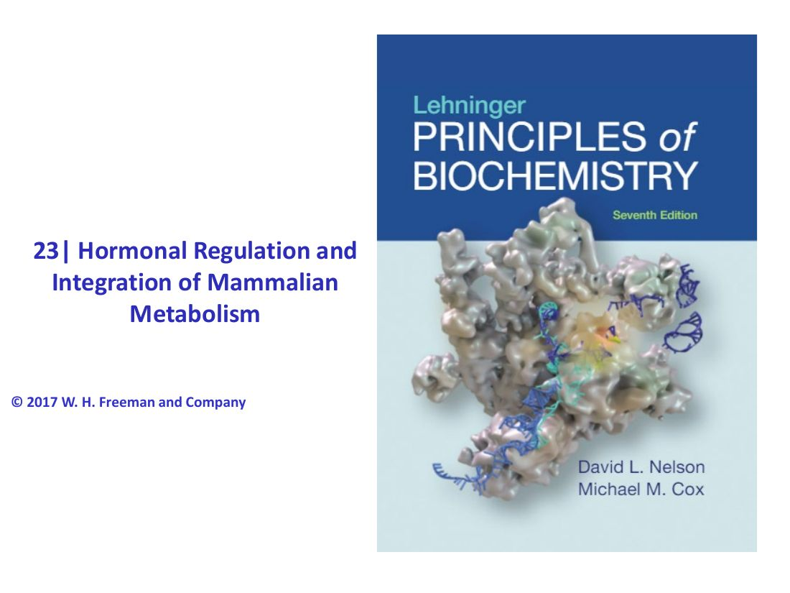
23 | Hormonal Regulation and Integration of Mammalian Metabolism
23장 | 포유류 대사의 호르몬 조절과 통합
© 2017 W. H. Freeman and Company
© 2017 W. H. Freeman and Company (저작권 표기)
Lehninger PRINCIPLES of BIOCHEMISTRY, Seventh Edition / David L. Nelson, Michael M. Cox
레닌저 생화학 원리, 7판 / 저자 David L. Nelson, Michael M. Cox
시험 포인트23장 = 포유류 대사의 호르몬 조절과 통합. 절 구성: 23.1 호르몬의 다양한 구조, 23.2 조직 특이적 대사.
그림 해설·더 깊이까지 보기 →슬라이드 223.1 호르몬의 다양한 구조 — 신경 신호 vs 호르몬 신호 (그림 23-1)기출 1TB 1원문·번역
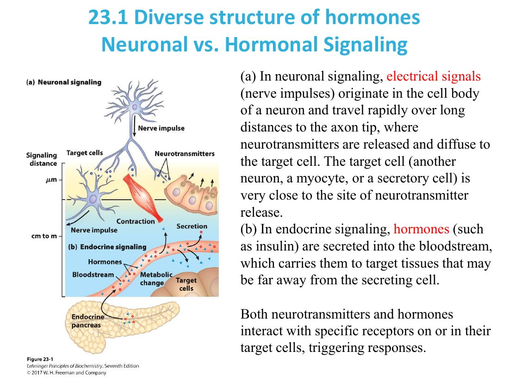
23.1 Diverse structure of hormones
23.1 호르몬의 다양한 구조
Neuronal vs. Hormonal Signaling
신경 신호 전달 vs. 호르몬 신호 전달
(a) In neuronal signaling, electrical signals (nerve impulses) originate in the cell body of a neuron and travel rapidly over long distances to the axon tip, where neurotransmitters are released and diffuse to the target cell.
(a) 신경 신호 전달에서는 전기 신호(신경 충격)가 뉴런의 세포체에서 시작되어 축삭 끝까지 먼 거리를 빠르게 이동하고, 그곳에서 신경전달물질이 방출되어 표적세포로 확산된다.
The target cell (another neuron, a myocyte, or a secretory cell) is very close to the site of neurotransmitter release.
표적세포(다른 뉴런, 근육세포, 또는 분비세포)는 신경전달물질이 방출되는 자리에 매우 가까이 있다.
(b) In endocrine signaling, hormones (such as insulin) are secreted into the bloodstream, which carries them to target tissues that may be far away from the secreting cell.
(b) 내분비 신호 전달에서는 호르몬(예: 인슐린)이 혈류로 분비되고, 혈류가 이를 분비세포에서 멀리 떨어져 있을 수도 있는 표적 조직까지 운반한다.
Both neurotransmitters and hormones interact with specific receptors on or in their target cells, triggering responses.
신경전달물질과 호르몬 모두 표적세포의 표면 또는 내부에 있는 특이적 수용체와 상호작용하여 반응을 일으킨다.
(a) Neuronal signaling / Nerve impulse / Target cells / Neurotransmitters / Contraction / Secretion / Signaling distance: μm, cm to m
(a) 신경 신호 전달 / 신경 충격 / 표적세포 / 신경전달물질 / 수축 / 분비 / 신호 전달 거리: 마이크로미터(μm), 센티미터~미터
(b) Endocrine signaling / Hormones / Bloodstream / Metabolic change / Target cells / Endocrine pancreas
(b) 내분비 신호 전달 / 호르몬 / 혈류 / 대사 변화 / 표적세포 / 내분비 췌장
기출 1건 · 테스트뱅크 1건 형광펜 = 실제로 물어본 문장20212017 퀴즈TB 23-1
The radioimmunoassay (RIA) is based on competition of unlabeled and radiolabeled: antibodies for binding to a hormone / antibodies for binding to a receptor / hormone for binding to a receptor / hormone for binding to an antibody / receptor for binding to a hormone
정답·포인트 D. 항체에 결합하기 위한 (표지·비표지) 호르몬의 경쟁. RIA는 슬라이드에 없는 교재 내용이에요.
TB 23-28단답·서술
[서술] 생물검정법(bioassay)이 개발된 후, 새로운 호르몬을 분리하는 데 있어 주요한 문제점은 무엇인가?
정답·포인트 호르몬은 효능(potency)이 매우 강하기 때문에 조직 내에 매우 적은 양만 존재하는 경우가 많다. 그 결과, 호르몬을 분리하려면 출발 물질로 매우 많은 양의 조직이 필요하다.
시험 포인트신경 = 전기 신호·짧은 거리·빠름, 호르몬 = 혈류·먼 거리·느림. 공통점 = 특이적 수용체에 결합해야 반응.
그림 해설·더 깊이까지 보기 →슬라이드 3포유류 호르몬의 분류 (표 23-1)기출 4TB 4원문·번역
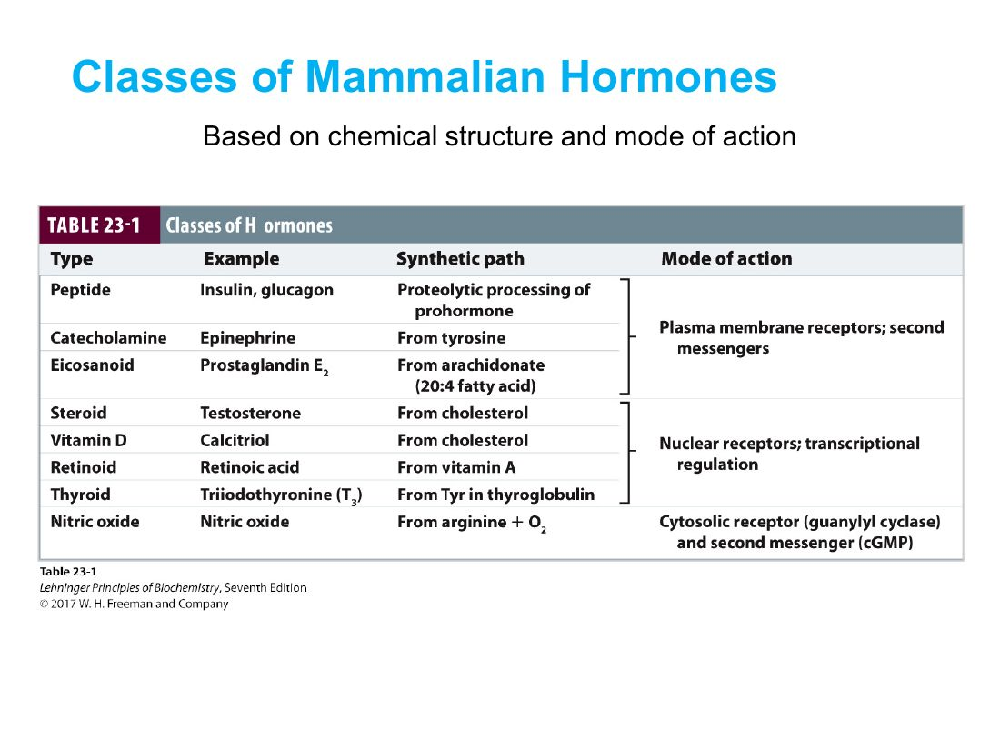
Classes of Mammalian Hormones
포유류 호르몬의 분류
Based on chemical structure and mode of action
화학 구조와 작용 방식에 근거한 분류
TABLE 23-1 Classes of Hormones
표 23-1 호르몬의 분류
Type / Example / Synthetic path / Mode of action
종류 / 예 / 합성 경로 / 작용 방식
Peptide / Insulin, glucagon / Proteolytic processing of prohormone
펩타이드 / 인슐린, 글루카곤 / 프로호르몬의 단백질 분해 가공
Catecholamine / Epinephrine / From tyrosine
카테콜아민 / 에피네프린 / 타이로신으로부터
Eicosanoid / Prostaglandin E2 / From arachidonate (20:4 fatty acid)
에이코사노이드 / 프로스타글란딘 E₂ / 아라키돈산(20:4 지방산)으로부터
(위 세 가지) Plasma membrane receptors; second messengers
(위 세 가지) 세포막 수용체; 2차 전달자
Steroid / Testosterone / From cholesterol
스테로이드 / 테스토스테론 / 콜레스테롤로부터
Vitamin D / Calcitriol / From cholesterol
비타민 D / 칼시트리올 / 콜레스테롤로부터
Retinoid / Retinoic acid / From vitamin A
레티노이드 / 레티노산 / 비타민 A로부터
Thyroid / Triiodothyronine (T3) / From Tyr in thyroglobulin
갑상선 / 트라이아이오도타이로닌(T₃) / 타이로글로불린 속 Tyr로부터
(위 네 가지) Nuclear receptors; transcriptional regulation
(위 네 가지) 핵 수용체; 전사 조절
Nitric oxide / Nitric oxide / From arginine + O2 / Cytosolic receptor (guanylyl cyclase) and second messenger (cGMP)
일산화질소 / 일산화질소 / 아르지닌 + O₂로부터 / 세포질 수용체(구아닐릴 고리화효소)와 2차 전달자(cGMP)
기출 4건 · 테스트뱅크 4건 형광펜 = 실제로 물어본 문장2023
세포 내 수용체 위치가 다른 것 — 인슐린 / 에피네프린 / 프로스타글란딘 / NO / 글루카곤 (두 반 복기 모두 출제)
정답·포인트 NO = 세포질 수용체(구아닐릴 고리화효소 → cGMP), 나머지는 세포막 수용체.
2021TB 23-8
Some hormones are derived from amino acids; catecholamines are derived from ___ while NO is derived from ___.
정답·포인트 tyrosine; arginine.
TB 23-2
펩타이드 호르몬과 스테로이드 호르몬의 차이점 중 하나는, 펩타이드 호르몬은:
- A 비특이적 수용체를 통해 작용하는 반면, 스테로이드 호르몬은 특이적 수용체를 통해 작용한다.
- B 일반적으로 물에 녹지 않는 반면, 스테로이드 호르몬은 수용성이다.
- C 스테로이드 호르몬보다 더 안정하다.
- D 세포 표면 수용체에 결합하는 반면, 스테로이드 호르몬은 핵 수용체에 결합한다.
- E 높은 친화도로 수용체에 결합하는 반면, 스테로이드 호르몬은 낮은 친화도로 결합한다.
정답·포인트 D 세포 표면 수용체에 결합하는 반면, 스테로이드 호르몬은 핵 수용체에 결합한다. — 펩타이드 호르몬은 수용성이라 세포막을 통과하지 못해 세포 표면 수용체에 붙고, 지용성인 스테로이드 호르몬은 막을 통과해 핵(세포 내) 수용체에 결합한다. B는 반대로 서술되어 틀림.
TB 23-29단답·서술
[서술] 호르몬의 일반적인 세 가지 부류를 제시하고 각각의 예를 들어라.
정답·포인트 (1) 펩타이드(예: 인슐린, 글루카곤); (2) 카테콜아민(예: 에피네프린); (3) 스테로이드(예: 테스토스테론, 프로게스테론); (4) 에이코사노이드(예: 프로스타글란딘, 트롬복산). (906쪽 표 23-1 참조)
TB 23-30단답·서술
[서술] 어떤 호르몬은 매우 빠른 반응을 일으키는 반면, 다른 호르몬은 반응이 나타나기까지 훨씬 오래 걸린다. 이 두 유형 호르몬의 작용 기전에 관한 어떤 일반화로 반응 시간의 차이를 설명할 수 있는가?
정답·포인트 빠르게 작용하는 호르몬은 이미 세포 안에 존재하는(기존의) 효소들의 활성에 영향을 준다. 느리게 작용하는 호르몬은 유전자 발현을 변화시켜, 활성 세포 구성요소들의 양(수준) 자체를 바꾼다.
빠름 = 막 수용체 → 2차 전령 → 효소 인산화(초~분), 느림 = 핵 수용체 → 전사 → 새 단백질(시간~일).
시험 포인트각 호르몬의 합성 재료와 수용체 위치(막/핵/세포질) 짝짓기. 특히 NO = 세포질 구아닐릴 고리화효소 → cGMP.
그림 해설·더 깊이까지 보기 →슬라이드 4① 펩타이드 호르몬 — 인슐린의 성숙 과정 (그림 23-4)기출 2TB 2원문·번역
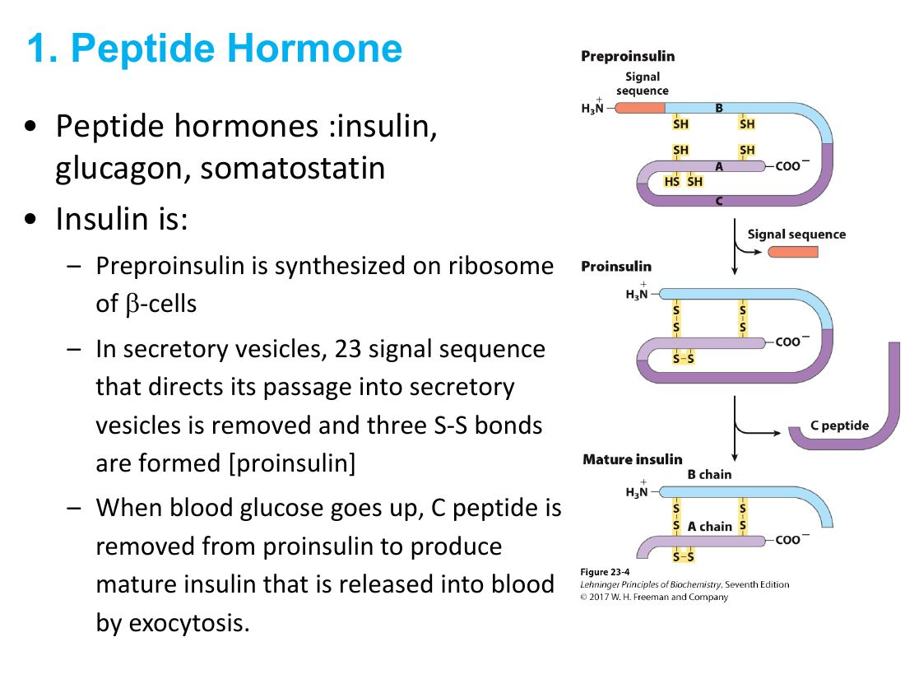
1. Peptide Hormone
1. 펩타이드 호르몬
Peptide hormones : insulin, glucagon, somatostatin
펩타이드 호르몬: 인슐린, 글루카곤, 소마토스타틴
Insulin is:
인슐린은 (다음과 같이 만들어진다):
Preproinsulin is synthesized on ribosome of β-cells
프리프로인슐린은 (췌장) β세포의 리보솜에서 합성된다
In secretory vesicles, 23 signal sequence that directs its passage into secretory vesicles is removed and three S-S bonds are formed [proinsulin]
분비 소포 안에서, 분비 소포로 들어가는 경로를 안내하는 23개 (아미노산) 신호서열이 제거되고 3개의 S–S 결합(이황화 결합)이 형성된다 [→ 프로인슐린]
When blood glucose goes up, C peptide is removed from proinsulin to produce mature insulin that is released into blood by exocytosis.
혈당이 올라가면 프로인슐린에서 C 펩타이드가 제거되어 성숙 인슐린이 만들어지고, 이것이 세포외배출(exocytosis)로 혈액에 방출된다.
Preproinsulin / Signal sequence / Proinsulin / C peptide / Mature insulin / B chain / A chain / SH / S–S / H3N+ / COO−
프리프로인슐린 / 신호서열 / 프로인슐린 / C 펩타이드 / 성숙 인슐린 / B 사슬 / A 사슬 / 싸이올기(–SH) / 이황화 결합(S–S) / N-말단(H₃N⁺) / C-말단(COO⁻)
기출 2건 · 테스트뱅크 2건 형광펜 = 실제로 물어본 문장20162017 퀴즈
(2016) 인슐린 틀린 것 — 혈당이 높아지면 S–S 결합 3개 생성 / C 펩타이드로 인슐린 양 측정 / 프리프로인슐린은 β세포 리보솜에서 / 신호서열은 N말단 / Banting과 MacLeod가 처음 정제 · (2017) Banting & MacLeod가 처음 분리 / 수용성 펩타이드는 막 수용체 / 에피네프린은 Tyr에서 / RIA는 항체에 방사성 동위원소 / 같은 수용체라도 세포마다 downstream이 다를 수 있음
정답·포인트 복기에 정답 표시는 없어요. 슬라이드 기준: S–S 결합은 분비 소포 안에서 형성되고 Ca²⁺가 C 펩타이드를 자르는 단백질분해효소를 활성화(슬라이드 38). 신호서열 23개는 N말단, 리보솜에서 프리프로인슐린 합성, C 펩타이드 = 지표. RIA는 표지된 호르몬과 시료 호르몬이 항체를 두고 경쟁하는 원리(TB 23-1)라 '항체에 동위원소' 보기는 함정.
TB 23-3
인슐린은 ______ 호르몬의 한 예이다.
- A 카테콜아민(catecholamine)
- B 에이코사노이드(eicosanoid)
- C 측분비(paracrine)
- D 펩타이드(peptide)
- E 스테로이드(steroid)
정답·포인트 D 펩타이드(peptide) — 인슐린은 A사슬·B사슬이 이황화결합으로 연결된 펩타이드(단백질) 호르몬.
TB 23-4
인슐린이 전구체(프리프로인슐린, preproinsulin)로부터 성숙되는 과정에는 다음이 관여한다:
- A 아세틸화
- B 산화
- C 인산화
- D 단백질 가수분해(proteolysis)
- E 환원
정답·포인트 D 단백질 가수분해(proteolysis) — 프리프로인슐린 → (신호서열 절단) 프로인슐린 → (C-펩타이드 절단) 인슐린. 즉 단백질 분해효소에 의한 절단(proteolysis)으로 성숙된다.
시험 포인트프리프로인슐린 →(신호서열 제거, S–S 3개)→ 프로인슐린 →(C 펩타이드 제거)→ 성숙 인슐린(A+B 사슬). 신호서열 23개, S–S 3개 숫자 체크.
그림 해설·더 깊이까지 보기 →슬라이드 5하나의 펩타이드 프로호르몬이 여러 산물을 낼 수 있다 — POMC기출 1원문·번역
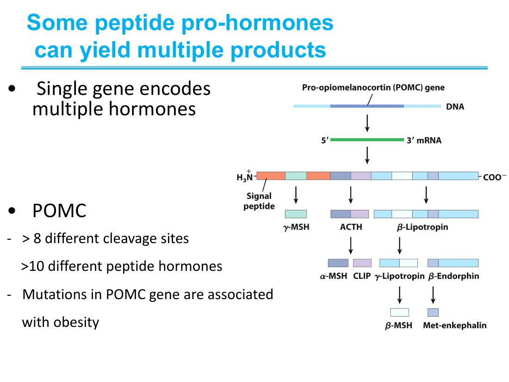
Some peptide pro-hormones can yield multiple products
일부 펩타이드 프로호르몬은 여러 산물을 만들어낼 수 있다
Single gene encodes multiple hormones
하나의 유전자가 여러 호르몬을 암호화한다
> 8 different cleavage sites
8개가 넘는 서로 다른 절단 부위
>10 different peptide hormones
10가지가 넘는 서로 다른 펩타이드 호르몬
Mutations in POMC gene are associated with obesity
POMC 유전자의 돌연변이는 비만과 연관된다
Pro-opiomelanocortin (POMC) gene / DNA / 5′ / 3′ mRNA / H3N+ / COO− / Signal peptide
프로오피오멜라노코르틴(POMC) 유전자 / DNA / 5′ / 3′ mRNA / N-말단 / C-말단 / 신호 펩타이드
γ-MSH / ACTH / β-Lipotropin / α-MSH / CLIP / γ-Lipotropin / β-Endorphin / β-MSH / Met-enkephalin
감마-멜라닌세포 자극 호르몬 / 부신피질 자극 호르몬 / 베타-리포트로핀 / 알파-MSH / CLIP(코르티코트로핀 유사 중간엽 펩타이드) / 감마-리포트로핀 / 베타-엔도르핀 / 베타-MSH / 메트-엔케팔린
기출 1건 형광펜 = 실제로 물어본 문장2025단답·서술
[단답, full name] POMC 그림에서 (1) ACTH에서 CLIP과 함께 잘려 나오는 것, (2) γ-리포트로핀에서 나오는 것
정답·포인트 (1) α-melanocyte-stimulating hormone (α-MSH), (2) β-melanocyte-stimulating hormone (β-MSH).
시험 포인트POMC → ACTH, α/β/γ-MSH, β-엔도르핀, 엔케팔린 등. 절단 부위 >8, 호르몬 >10. POMC 돌연변이 = 비만.
그림 해설·더 깊이까지 보기 →슬라이드 6② 카테콜아민 호르몬기출 2TB 1원문·번역
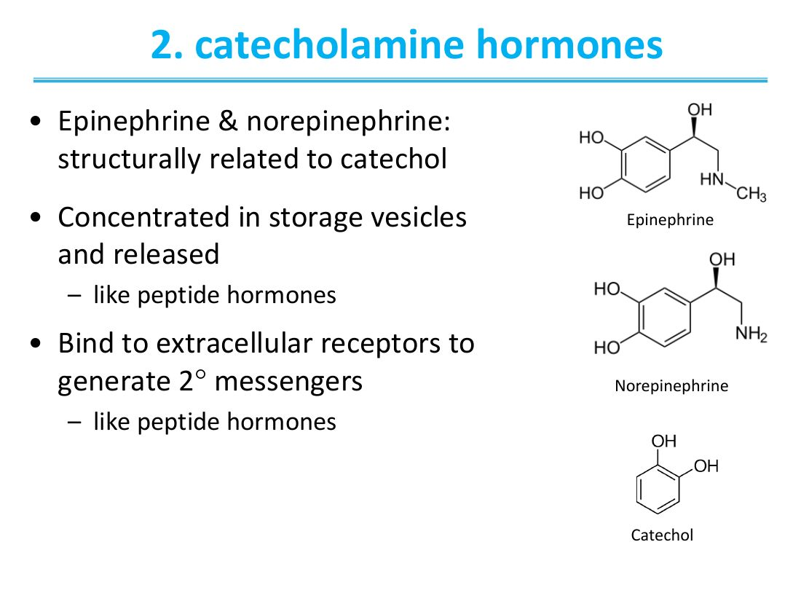
2. catecholamine hormones
2. 카테콜아민 호르몬
Epinephrine & norepinephrine: structurally related to catechol
에피네프린과 노르에피네프린: 구조적으로 카테콜과 관련되어 있다
Concentrated in storage vesicles and released
저장 소포에 농축되어 있다가 방출된다
like peptide hormones
펩타이드 호르몬처럼
Bind to extracellular receptors to generate 2° messengers
세포 밖 수용체에 결합하여 2차 전달자를 만든다
like peptide hormones
펩타이드 호르몬처럼
Epinephrine / Norepinephrine / Catechol
에피네프린 / 노르에피네프린 / 카테콜
기출 2건 · 테스트뱅크 1건 형광펜 = 실제로 물어본 문장2016
호르몬과 전구체 연결이 틀린 것 — 7-디하이드로콜레스테롤–비타민 D / 비타민 A–레티노산 / Lys–에피네프린 / Arg–NO / Tyr–티록신 (두 반 복기 모두)
정답·포인트 에피네프린은 Tyr에서(Lys X). 표 23-1의 '합성 경로' 칸 그대로.
TB 23-5
에피네프린은 ______ 호르몬의 한 예이다.
- A 카테콜아민
- B 에이코사노이드
- C 측분비
- D 펩타이드
- E 스테로이드
정답·포인트 A 카테콜아민 — 에피네프린·노르에피네프린·도파민은 티로신에서 유래한 카테콜아민.
시험 포인트카테콜아민 = 카테콜 구조, Tyr 유래, 펩타이드처럼 소포 저장·세포막 수용체·2차 전달자. 에피(–NHCH₃) vs 노르에피(–NH₂).
그림 해설·더 깊이까지 보기 →슬라이드 7③ 에이코사노이드 호르몬기출 2TB 1원문·번역
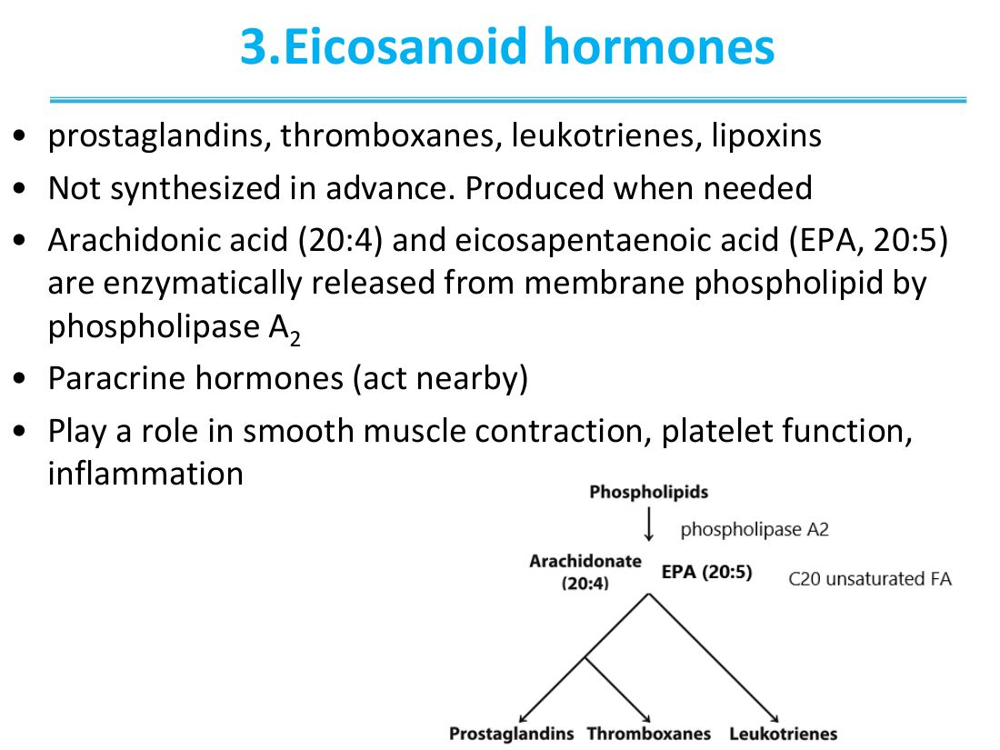
3. Eicosanoid hormones
3. 에이코사노이드 호르몬
prostaglandins, thromboxanes, leukotrienes, lipoxins
프로스타글란딘, 트롬복세인, 류코트리엔, 리폭신
Not synthesized in advance. Produced when needed
미리 합성해 두지 않는다. 필요할 때 생산된다
Arachidonic acid (20:4) and eicosapentaenoic acid (EPA, 20:5) are enzymatically released from membrane phospholipid by phospholipase A2
아라키돈산(20:4)과 에이코사펜타엔산(EPA, 20:5)은 포스포리파아제 A₂에 의해 막 인지질로부터 효소적으로 방출된다
Paracrine hormones (act nearby)
측분비(paracrine) 호르몬이다 (가까운 곳에서 작용)
Play a role in smooth muscle contraction, platelet function, inflammation
평활근 수축, 혈소판 기능, 염증에 관여한다
Phospholipids / phospholipase A2 / Arachidonate (20:4) / EPA (20:5) / C20 unsaturated FA / Prostaglandins / Thromboxanes / Leukotrienes
인지질 / 포스포리파아제 A₂ / 아라키돈산(20:4) / EPA(20:5) / 탄소 20개 불포화 지방산 / 프로스타글란딘 / 트롬복세인 / 류코트리엔
기출 2건 · 테스트뱅크 1건 형광펜 = 실제로 물어본 문장2017 퀴즈2016TB 23-6
(2016) 에이코사노이드의 예 — 레티노산 / 테스토스테론 / 티록신 / 트롬복산 / 에피네프린 · (2017) 아라키돈산 생성에 phospholipase D 필요 / 근육 수축·염증 관여 / 미리 합성됨 / 세포막 수용체 / 아라키돈산은 막 인지질에서 유리
정답·포인트 예 = 트롬복산(프로스타글란딘·류코트리엔·리폭신). 효소는 PLA₂(D X), 미리 만들지 않고 필요할 때 생성, 측분비.
TB 23-31단답·서술
[서술] 에이코사노이드는 에피네프린과 같은 다른 강력한 생물학적 신호전달 분자와 무엇으로 구별되는가?
정답·포인트 에이코사노이드는 측분비(paracrine) 호르몬이다: 이들은 일반적으로 방출된 지점에서 작용 지점까지 먼 거리를 이동하지 않는다.
시험 포인트에이코사노이드 = 미리 저장 안 함, PLA₂로 아라키돈산 방출, 측분비, 평활근·혈소판·염증.
그림 해설·더 깊이까지 보기 →슬라이드 8④ 스테로이드 호르몬TB 3원문·번역
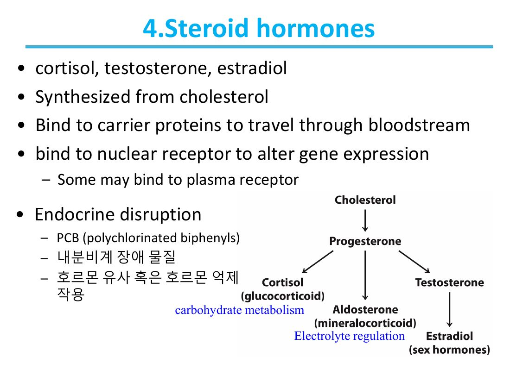
4.Steroid hormones
4. 스테로이드 호르몬
cortisol, testosterone, estradiol
코르티솔, 테스토스테론, 에스트라다이올
Synthesized from cholesterol
콜레스테롤로부터 합성된다
Bind to carrier proteins to travel through bloodstream
운반 단백질에 결합하여 혈류를 통해 이동한다
bind to nuclear receptor to alter gene expression
핵 수용체에 결합하여 유전자 발현을 변화시킨다
Some may bind to plasma receptor
일부는 세포막 수용체에 결합하기도 한다
Endocrine disruption
내분비 교란
PCB (polychlorinated biphenyls)
PCB (폴리염화바이페닐)
내분비계 장애 물질
(슬라이드에 한글로 적힌 메모) 내분비계 장애 물질
호르몬 유사 혹은 호르몬 억제 작용
(슬라이드에 한글로 적힌 메모) 호르몬을 흉내 내거나 호르몬을 억제하는 작용
Cholesterol / Progesterone / Cortisol (glucocorticoid) / carbohydrate metabolism / Aldosterone (mineralocorticoid) / Electrolyte regulation / Testosterone / Estradiol (sex hormones)
콜레스테롤 / 프로게스테론 / 코르티솔(당질코르티코이드) / 탄수화물 대사 / 알도스테론(염류코르티코이드) / 전해질 조절 / 테스토스테론 / 에스트라다이올(성호르몬)
테스트뱅크 3건 형광펜 = 실제로 물어본 문장TB 23-7
스테로이드 호르몬의 예는:
- A 에피네프린
- B 레티노산
- C 테스토스테론
- D 트롬복산
- E 티록신
정답·포인트 C 테스토스테론 — 테스토스테론은 콜레스테롤에서 유래한 스테로이드(성호르몬).
TB 23-32단답·서술
[서술] 어떤 부류의 호르몬이 핵 수용체를 통해 작용하는가? 이 유형 호르몬의 예를 들고 그 작용 방식을 간략히 설명하라.
정답·포인트 스테로이드 호르몬. 예로 성호르몬인 테스토스테론과 에스트라디올이 있다. 이들은 세포막을 통과하여 핵 속의 수용체 단백질과 상호작용한다. 호르몬-수용체 복합체는 DNA와 상호작용하여 특정 유전자들의 발현을 변화시킨다.
시험 포인트스테로이드 = 콜레스테롤 유래, 운반 단백질, 핵 수용체. 코르티솔=탄수화물, 알도스테론=전해질. 내분비 교란물질 예 = PCB.
그림 해설·더 깊이까지 보기 →슬라이드 9⑤ 비타민 D 호르몬기출 2원문·번역

5. Vitamin D hormone
5. 비타민 D 호르몬
Obtained from food or from photolysis of 7-dehydrocholesterol in sun-exposed skin
음식에서 얻거나, 햇빛에 노출된 피부에서 7-디하이드로콜레스테롤의 광분해로 얻는다
Calcitrol is the active form
칼시트리올이 활성형이다
Acts through nuclear receptors and activate the synthesis of intestinal calcium binding protein that is essential for uptake of dietary calcium
핵 수용체를 통해 작용하며, 음식 속 칼슘 흡수에 필수적인 장의 칼슘 결합 단백질 합성을 활성화한다
Vit D deficiency = Rickets (구루병)
비타민 D 결핍 = 구루병
Work with parathyroid hormone in calcium homeostasis
칼슘 항상성 유지에서 부갑상선 호르몬과 함께 작용한다
7-Dehydrocholesterol / UV light / Vitamin D3 (cholecalciferol) / 25-Hydroxycholecalciferol / 1,25-Dihydroxycholecalciferol / calcitrol
7-디하이드로콜레스테롤 / 자외선 / 비타민 D₃(콜레칼시페롤) / 25-하이드록시콜레칼시페롤 / 1,25-다이하이드록시콜레칼시페롤 / 칼시트리올
기출 2건 형광펜 = 실제로 물어본 문장202320222019
호르몬 설명 — (2023) C 펩타이드로 인슐린 측정 / 프로스타글란딘은 PLA₂로 막에서 / 티로글로불린 → T₄ / 비타민 D 활성형 = 칼시트리올(1,25-다이하이드록시) / 옥시토신·바소프레신 후엽 분비 · (2022) 혈당이 오르면 S–S 3개 생성 / 7-디하이드로콜레스테롤 → 칼시트리올 / NO는 O₂와 Arg로 · (2019) 프리프로인슐린 N말단 신호서열 / 칼시페롤이 활성형 / T₄ → T₃ / 과다 비타민 E 여드름 크림 → 기형 / NO가 cAMP를 만든다
정답·포인트 2019 틀린 것: 활성형은 칼시트리올(칼시페롤 X), 기형은 레티노이드(비타민 A)(비타민 E X), NO → cGMP(cAMP X). 맞는 것: C 펩타이드 = 인슐린 생산 지표, PLA₂가 막 인지질에서 아라키돈산 유리, 티로글로불린 Tyr 아이오딘화 → T₄ → T₃, NO = Arg + O₂(NOS).
시험 포인트7-디하이드로콜레스테롤 –UV→ D₃ → 25-OH → 1,25-(OH)₂ = 칼시트리올(활성형). 핵 수용체, 장 칼슘 결합 단백질, 결핍=구루병, PTH와 협동.
그림 해설·더 깊이까지 보기 →슬라이드 10⑥ 레티노이드 호르몬기출 2원문·번역
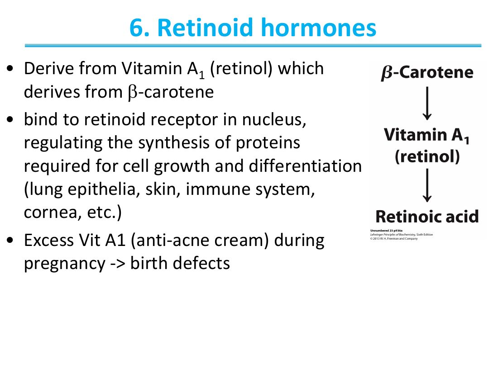
6. Retinoid hormones
6. 레티노이드 호르몬
Derive from Vitamin A1 (retinol) which derives from β-carotene
비타민 A₁(레티놀)에서 유래하며, 레티놀은 β-카로틴에서 유래한다
bind to retinoid receptor in nucleus, regulating the synthesis of proteins required for cell growth and differentiation (lung epithelia, skin, immune system, cornea, etc.)
핵 안의 레티노이드 수용체에 결합하여, 세포 성장과 분화에 필요한 단백질(폐 상피, 피부, 면역계, 각막 등)의 합성을 조절한다
Excess Vit A1 (anti-acne cream) during pregnancy -> birth defects
임신 중 비타민 A₁ 과다(여드름 치료 크림) → 선천성 기형
β-Carotene / Vitamin A1 (retinol) / Retinoic acid
베타-카로틴 / 비타민 A₁(레티놀) / 레티노산
시험 포인트β-카로틴 → 레티놀 → 레티노산, 핵 수용체, 성장·분화(폐·피부·면역·각막), 임신 중 과량 → 기형.
그림 해설·더 깊이까지 보기 →슬라이드 11⑦ 갑상선 호르몬기출 1원문·번역
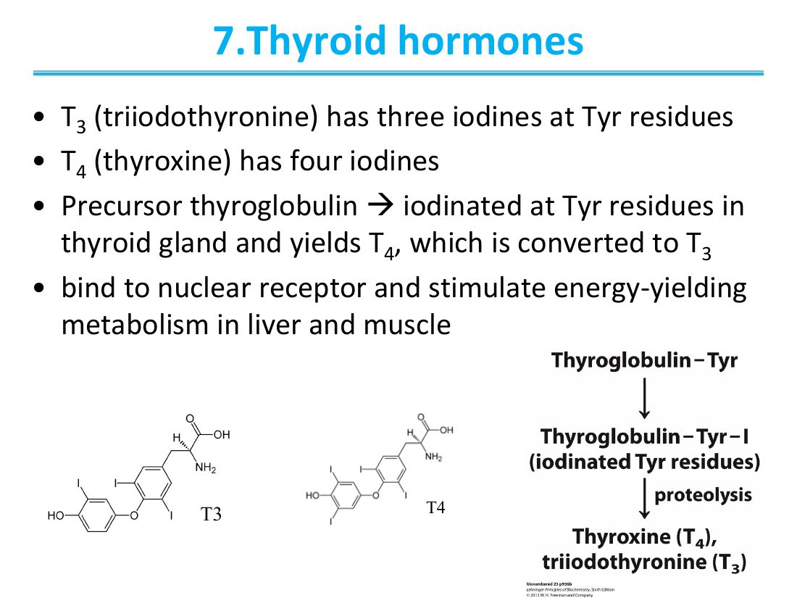
7.Thyroid hormones
7. 갑상선 호르몬
T3 (triiodothyronine) has three iodines at Tyr residues
T₃(트라이아이오도타이로닌)는 Tyr 잔기에 아이오딘 3개를 가진다
T4 (thyroxine) has four iodines
T₄(타이록신)는 아이오딘 4개를 가진다
Precursor thyroglobulin → iodinated at Tyr residues in thyroid gland and yields T4, which is converted to T3
전구체 타이로글로불린 → 갑상선에서 Tyr 잔기가 아이오딘화되어 T₄를 내고, T₄는 T₃로 전환된다
bind to nuclear receptor and stimulate energy-yielding metabolism in liver and muscle
핵 수용체에 결합하여 간과 근육에서 에너지를 생산하는 대사를 촉진한다
T3 / T4 / Thyroglobulin−Tyr / Thyroglobulin−Tyr−I (iodinated Tyr residues) / proteolysis / Thyroxine (T4), triiodothyronine (T3)
T₃ / T₄ / 타이로글로불린–Tyr / 타이로글로불린–Tyr–I (아이오딘화된 Tyr 잔기) / 단백질 분해 / 타이록신(T₄), 트라이아이오도타이로닌(T₃)
시험 포인트T₃ = I 3개(활성 더 강함), T₄ = I 4개. 타이로글로불린의 Tyr 아이오딘화 → 단백질 분해 → T₄ → T₃. 핵 수용체, 간·근육 에너지 대사↑.
그림 해설·더 깊이까지 보기 →슬라이드 12⑧ 일산화질소 (NO)기출 4원문·번역
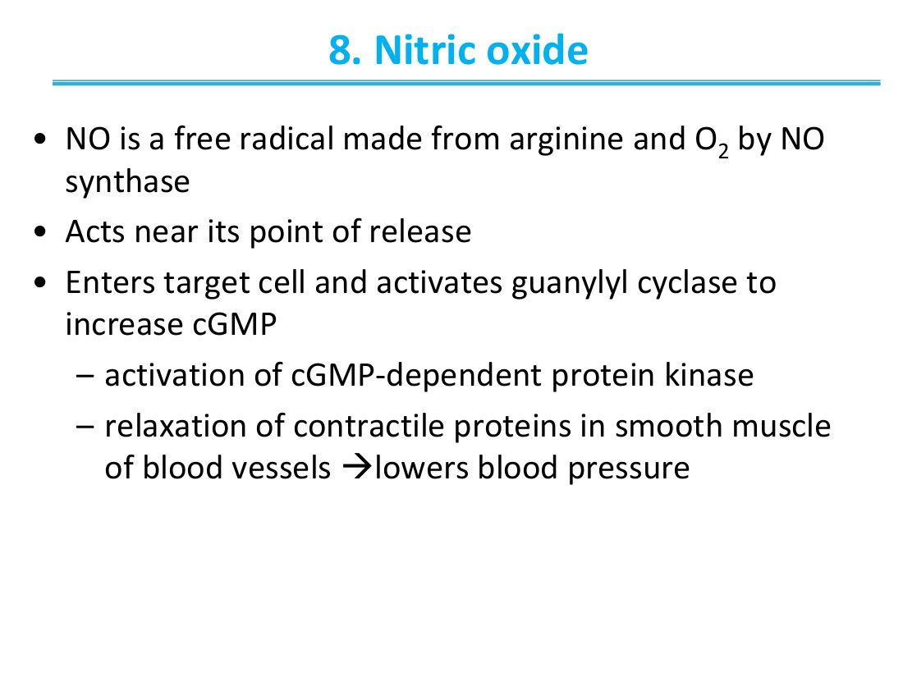
NO is a free radical made from arginine and O2 by NO synthase
NO는 NO 합성효소에 의해 아르지닌과 O₂로부터 만들어지는 자유라디칼이다
Acts near its point of release
방출된 지점 근처에서 작용한다
Enters target cell and activates guanylyl cyclase to increase cGMP
표적세포 안으로 들어가 구아닐릴 고리화효소를 활성화하여 cGMP를 증가시킨다
activation of cGMP-dependent protein kinase
cGMP 의존성 단백질 키네이스(PKG)의 활성화
relaxation of contractile proteins in smooth muscle of blood vessels → lowers blood pressure
혈관 평활근의 수축 단백질 이완 → 혈압을 낮춘다
시험 포인트NO = Arg + O₂ (NOS), 자유라디칼, 근거리 작용, 세포질 구아닐릴 고리화효소 → cGMP → PKG → 평활근 이완 → 혈압↓.
그림 해설·더 깊이까지 보기 →2
호르몬 방출의 위계 조절 (하향식·상향식)
슬라이드 13–17
처음이라면 · 큰 그림부터
회사 조직도를 떠올리면 쉬워요. 뇌(중추신경계)가 몸 안팎 상황을 판단하면 시상하부가 지시를 내리고, 바로 아래 뇌하수체가 그 지시를 받아 각 내분비샘(갑상샘, 부신피질, 생식샘)에 전달하고, 그 샘이 만든 호르몬이 최종적으로 온몸 세포에 작용해요. 단계를 내려갈 때마다 양이 크게 불어나서, 시상하부의 나노그램 신호가 끝에서는 밀리그램 단위 코르티솔이 돼요. 이게 증폭이에요.
위에서 계속 지시만 하면 폭주하겠죠. 그래서 최종 호르몬이 충분해지면 그 호르몬이 거꾸로 시상하부와 뇌하수체를 눌러 분비를 줄여요(음성 되먹임). 반대 방향의 보고 체계도 있어요. 위, 장, 췌장, 지방조직이 "지금 연료가 이만큼 있다"는 호르몬을 보내면 시상하부가 그걸 모아 먹는 양과 쓰는 양을 조절해요. 이 장 뒷부분(8단원)의 렙틴·그렐린이 이 보고서들이에요.
예외도 하나 기억해 두세요. 췌장의 인슐린·글루카곤과 부신수질의 에피네프린은 뇌하수체를 거치지 않고 분비돼요.
흐름 한 줄
시상하부(방출 호르몬)→뇌하수체 전엽(자극 호르몬)→2차 내분비샘→최종 호르몬→표적 조직→↺ 위로 되먹임
이 단원에서 처음 나오는 말
- 뇌하수체 전엽 · 후엽
- 전엽은 시상하부 호르몬을 받아 자기 호르몬(ACTH, TSH 등)을 만들어 내고, 후엽은 시상하부 뉴런이 만든 호르몬(옥시토신, 바소프레신)을 받아 두었다가 내보내요.
- 자극 호르몬
- 다른 내분비샘을 자극하는 호르몬. ACTH는 부신피질을, TSH는 갑상샘을 자극해요.
- 음성 되먹임
- 결과물이 많아지면 그 결과물이 생산을 줄이는 방식. 온도 조절기와 같은 원리예요.
여기부터 자세히
- CNS → 시상하부 → 뇌하수체(전엽/후엽) → 2차 내분비샘 → 최종 표적. 췌장 섬세포·부신수질은 뇌하수체를 거치지 않음.
- 증폭: CRH(ng) → ACTH(μg) → 코르티솔(mg), 코르티솔의 음성 되먹임.
- 상향식: 위·장·췌장·지방의 호르몬이 시상하부 AMPK에 연료 상태를 보고.
하향식: 시상하부 → 뇌하수체 → 2차 내분비샘 → 표적
뇌하수체는 두 부분이에요. 후엽은 사실 시상하부 신경세포의 끝부분이라, 시상하부가 만든 짧은 펩타이드(아미노산 9개짜리 옥시토신·바소프레신)를 그대로 혈액에 내보내는 창고예요. 전엽은 진짜 내분비샘이라, 시상하부가 혈관으로 보낸 방출 인자를 받고 자기가 긴 펩타이드 트로핀(ACTH, TSH, FSH, LH, GH, 프로락틴)을 만들어요.
CNS시상하부
방출 인자뇌하수체 전엽
트로핀부신피질·갑상선·생식샘근육·간·생식기관…
옥시토신과 바소프레신은 딱 두 자리(3·8번)만 달라요: 옥시토신(Ile, Leu) = 자궁 수축·젖 분출, 바소프레신(Phe, Arg) = 신장 물 재흡수·혈관 수축.
단, 췌장 섬세포(혈당을 직접 감지)와 부신수질(CNS가 신경으로 직통)은 이 사다리를 건너뛰어요.
증폭과 되먹임
스트레스(공포·감염·출혈·통증·저혈당) → 시상하부 CRH(ng) → 전엽 ACTH(μg) → 부신 코르티솔(mg). 단계마다 약 1000배씩 커져요. 그리고 코르티솔이 거꾸로 시상하부·전엽을 억제(음성 되먹임)해서 폭주를 막아요.
상향식 조절
시상하부 안에는 연료 센서 AMPK가 있어요. 이걸 켜서 "더 먹어라"라고 하는 쪽은 저혈당·아디포넥틴(지방 줄면)·그렐린(위), 꺼서 "그만 먹어라"라고 하는 쪽은 렙틴(지방 늘면)·인슐린·타이록신이에요. 장에서 나오는 GIP·GLP-1은 β세포를 켜고(인슐린↑) α세포를 꺼요(글루카곤↓). 이 그림이 23장 후반부(체중 조절)의 지도예요.
이 단원 기출·테스트뱅크 7건 문제·정답은 슬라이드를 펼치거나 번역본에서- 20232017 퀴즈2016 뇌하수체 전엽 호르몬(somatostatin X)·후엽 슬라이드 14
- 20222023 시상하부 호르몬(부신 피질 vs 수질) 슬라이드 14
- 2025단답·서술 그림 23-7 빈칸(thyrotropin, epinephrine) 슬라이드 13
- TB 23-9 자극 호르몬(tropic hormones; 예: 갑상선자극호르몬, 성장호르몬, 황체… 슬라이드 14
- TB 23-10 호르몬 계층(hierarchy) 구성요소들의 정상적인 작용 순서는: 슬라이드 13
- TB 23-11 호르몬 계층에서의 역할로, 시상하부는 다음을 생성·분비한다: 슬라이드 14
- TB 23-33단답·서술 호르몬 캐스케이드는 어떻게 원래 신호를 크게 증폭시키는가? 슬라이드 16
이 단원 슬라이드 원문·번역 펼쳐서 보기
슬라이드 13호르몬 방출은 신경·호르몬 신호의 위계(하향식)로 조절된다 (그림 23-7)기출 3TB 2원문·번역
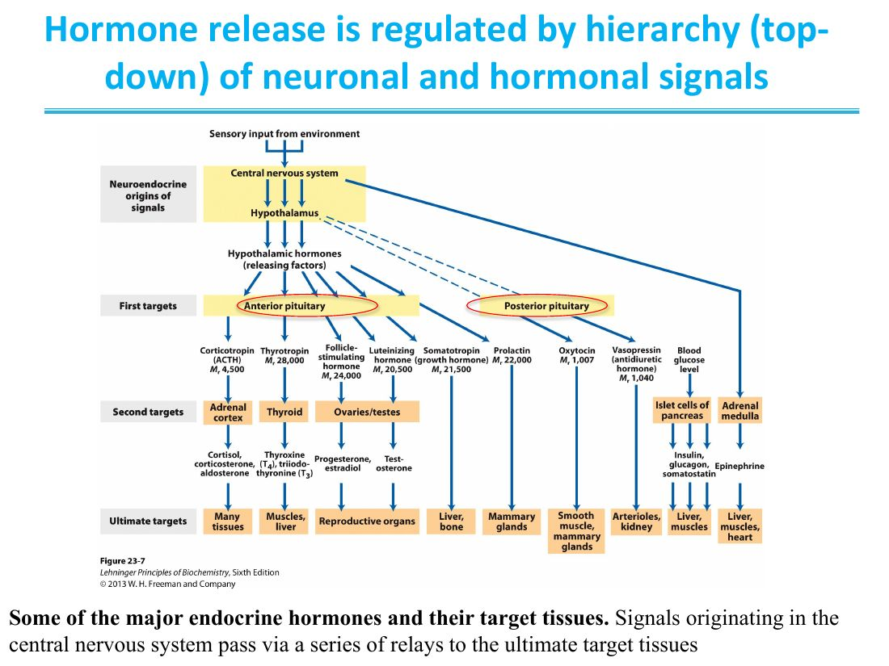
Hormone release is regulated by hierarchy (top-down) of neuronal and hormonal signals
호르몬 방출은 신경 신호와 호르몬 신호의 위계(하향식)에 의해 조절된다
Some of the major endocrine hormones and their target tissues. Signals originating in the central nervous system pass via a series of relays to the ultimate target tissues
주요 내분비 호르몬 일부와 그 표적 조직. 중추신경계에서 시작된 신호는 일련의 중계 단계를 거쳐 최종 표적 조직까지 전달된다
Sensory input from environment / Neuroendocrine origins of signals / Central nervous system / Hypothalamus / Hypothalamic hormones (releasing factors)
환경으로부터의 감각 입력 / 신호의 신경내분비적 기원 / 중추신경계 / 시상하부 / 시상하부 호르몬(방출 인자)
First targets: Anterior pituitary, Posterior pituitary
1차 표적: 뇌하수체 전엽, 뇌하수체 후엽
Corticotropin (ACTH) Mr 4,500 / Thyrotropin Mr 28,000 / Follicle-stimulating hormone Mr 24,000 / Luteinizing hormone Mr 20,500 / Somatotropin (growth hormone) Mr 21,500 / Prolactin Mr 22,000 / Oxytocin Mr 1,007 / Vasopressin (antidiuretic hormone) Mr 1,040 / Blood glucose level
코르티코트로핀(부신피질 자극 호르몬, ACTH) 분자량 4,500 / 갑상선 자극 호르몬 28,000 / 난포 자극 호르몬 24,000 / 황체 형성 호르몬 20,500 / 소마토트로핀(성장 호르몬) 21,500 / 프로락틴 22,000 / 옥시토신 1,007 / 바소프레신(항이뇨 호르몬) 1,040 / 혈당 수준
Second targets: Adrenal cortex, Thyroid, Ovaries/testes, Islet cells of pancreas, Adrenal medulla
2차 표적: 부신피질, 갑상선, 난소/정소, 췌장 랑게르한스섬 세포, 부신수질
Cortisol, corticosterone, aldosterone / Thyroxine (T4), triiodothyronine (T3) / Progesterone, estradiol / Testosterone / Insulin, glucagon, somatostatin / Epinephrine
코르티솔·코르티코스테론·알도스테론 / 타이록신(T₄)·T₃ / 프로게스테론·에스트라다이올 / 테스토스테론 / 인슐린·글루카곤·소마토스타틴 / 에피네프린
Ultimate targets: Many tissues / Muscles, liver / Reproductive organs / Liver, bone / Mammary glands / Smooth muscle, mammary glands / Arterioles, kidney / Liver, muscles / Liver, muscles, heart
최종 표적: 여러 조직 / 근육·간 / 생식기관 / 간·뼈 / 유선 / 평활근·유선 / 세동맥·신장 / 간·근육 / 간·근육·심장
기출 3건 · 테스트뱅크 2건 형광펜 = 실제로 물어본 문장2025단답·서술
[단답, full name] 그림 23-7(호르몬 위계)에서 (1) 전엽 → 갑상선으로 가는 호르몬, (2) 부신 수질에서 나와 간·근육·심장으로 가는 호르몬
정답·포인트 (1) Thyrotropin(thyroid-stimulating hormone, TSH), (2) Epinephrine. 그림 속 라벨을 영어 full name으로 그대로 물어봤어요.
TB 23-10
호르몬 계층(hierarchy) 구성요소들의 정상적인 작용 순서는:
- A 부신피질 → 시상하부 → 뇌하수체 전엽
- B 뇌하수체 전엽 → 부신피질 → 시상하부
- C 뇌하수체 전엽 → 시상하부 → 부신피질
- D 시상하부 → 부신피질 → 뇌하수체 전엽
- E 시상하부 → 뇌하수체 전엽 → 부신피질
정답·포인트 E 시상하부 → 뇌하수체 전엽 → 부신피질 — 시상하부(CRH 등 방출인자) → 뇌하수체 전엽(ACTH) → 부신피질(코르티솔). 위에서 아래로 내려가는 호르몬 캐스케이드.
시험 포인트CNS → 시상하부 → 뇌하수체(전엽/후엽) → 2차 내분비샘 → 최종 표적. 각 트로핀의 2차 표적 짝짓기. 췌장·부신수질은 뇌하수체를 거치지 않음.
그림 해설·더 깊이까지 보기 →슬라이드 14시상하부와 뇌하수체 — 전엽 vs 후엽기출 2TB 2원문·번역
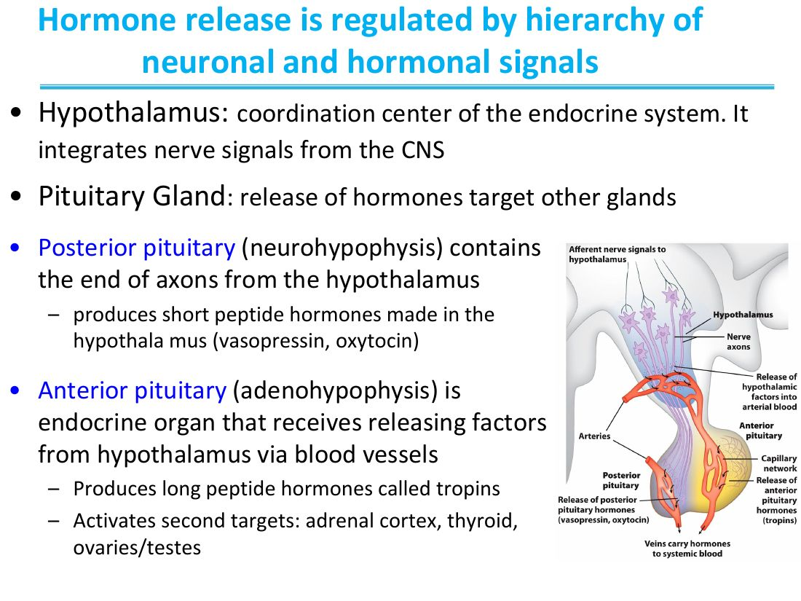
Hormone release is regulated by hierarchy of neuronal and hormonal signals
호르몬 방출은 신경 신호와 호르몬 신호의 위계에 의해 조절된다
Hypothalamus: coordination center of the endocrine system. It integrates nerve signals from the CNS
시상하부: 내분비계의 조정 중추. 중추신경계(CNS)에서 오는 신경 신호를 통합한다
Pituitary Gland: release of hormones target other glands
뇌하수체: 다른 내분비샘을 표적으로 하는 호르몬을 방출한다
Posterior pituitary (neurohypophysis) contains the end of axons from the hypothalamus
뇌하수체 후엽(신경뇌하수체)은 시상하부에서 내려온 축삭의 끝을 담고 있다
produces short peptide hormones made in the hypothalamus (vasopressin, oxytocin)
시상하부에서 만들어진 짧은 펩타이드 호르몬(바소프레신, 옥시토신)을 내보낸다
Anterior pituitary (adenohypophysis) is endocrine organ that receives releasing factors from hypothalamus via blood vessels
뇌하수체 전엽(선뇌하수체)은 혈관을 통해 시상하부로부터 방출 인자를 받는 내분비 기관이다
Produces long peptide hormones called tropins
트로핀이라 불리는 긴 펩타이드 호르몬을 생산한다
Activates second targets: adrenal cortex, thyroid, ovaries/testes
2차 표적을 활성화한다: 부신피질, 갑상선, 난소/정소
Afferent nerve signals to hypothalamus / Hypothalamus / Nerve axons / Release of hypothalamic factors into arterial blood / Anterior pituitary / Arteries / Capillary network / Release of anterior pituitary hormones (tropins) / Posterior pituitary / Release of posterior pituitary hormones (vasopressin, oxytocin) / Veins carry hormones to systemic blood
시상하부로 들어오는 구심성 신경 신호 / 시상하부 / 신경 축삭 / 시상하부 인자를 동맥혈로 방출 / 뇌하수체 전엽 / 동맥 / 모세혈관망 / 전엽 호르몬(트로핀) 방출 / 뇌하수체 후엽 / 후엽 호르몬(바소프레신, 옥시토신) 방출 / 정맥이 호르몬을 전신 혈액으로 운반
기출 2건 · 테스트뱅크 2건 형광펜 = 실제로 물어본 문장20232017 퀴즈2016
뇌하수체 전엽 호르몬인 것 — corticotropin / thyrotropin / somatotropin / somatostatin / prolactin · (2017) 전엽과 관련된 것 — FSH / thyroxine / testosterone / somatostatin / aldosterone · (2016) 후엽(실제로는 전엽을 잘못 낸 것으로 추정)과 관련 없는 것
정답·포인트 전엽 = 자극호르몬(tropin): ACTH(corticotropin), TSH(thyrotropin), GH(somatotropin), FSH, LH, 프로락틴. somatostatin은 아님(시상하부·췌장 δ세포). 후엽 = 옥시토신·바소프레신(시상하부에서 만든 짧은 펩타이드).
20222023
(2022) 시상하부 호르몬 옳은 것 — 전엽 자극 → 프로락틴 → 유선 / releasing factor라고도 부름 / corticotropin이 adrenal medulla를 활성화해 코르티솔 / 혈관을 통해 시상하부 → 전엽 / 긴 펩타이드를 tropin이라 함 · (2023) 옥시토신·바소프레신은 후엽에서 바로 분비
정답·포인트 시상하부 = 방출인자(releasing factors), 전엽으로 혈관(문맥)을 통해 전달, 전엽 = 긴 펩타이드 tropin. 코르티솔은 부신 피질(cortex) — 수질(medulla)은 에피네프린. 옥시토신·바소프레신은 시상하부에서 만들어 후엽(축삭 말단)에서 분비.
TB 23-9
자극 호르몬(tropic hormones; 예: 갑상선자극호르몬, 성장호르몬, 황체형성호르몬)은 다음에서 생성·분비된다:
- A 뇌하수체 전엽
- B 시상하부
- C 난소
- D 췌장
- E 뇌하수체 후엽
정답·포인트 A 뇌하수체 전엽 — TSH, GH(somatotropin), LH, FSH, ACTH, 프로락틴은 모두 뇌하수체 전엽 호르몬.
TB 23-11
호르몬 계층에서의 역할로, 시상하부는 다음을 생성·분비한다:
- A 에피네프린
- B 인슐린
- C 프로게스테론
- D 방출인자(releasing factors)
- E 티록신
정답·포인트 D 방출인자(releasing factors) — 시상하부는 방출인자(호르몬)를 내보내 뇌하수체 전엽의 자극호르몬 분비를 조절한다.
시험 포인트후엽 = 신경뇌하수체, 시상하부 축삭 끝, 짧은 펩타이드(옥시토신·바소프레신)를 저장·방출(합성은 시상하부). 전엽 = 선뇌하수체, 혈관으로 방출 인자 수신, 긴 펩타이드 트로핀 합성 → 부신피질·갑상선·생식샘.
그림 해설·더 깊이까지 보기 →슬라이드 15뇌하수체 후엽 호르몬 — 옥시토신과 바소프레신기출 2원문·번역
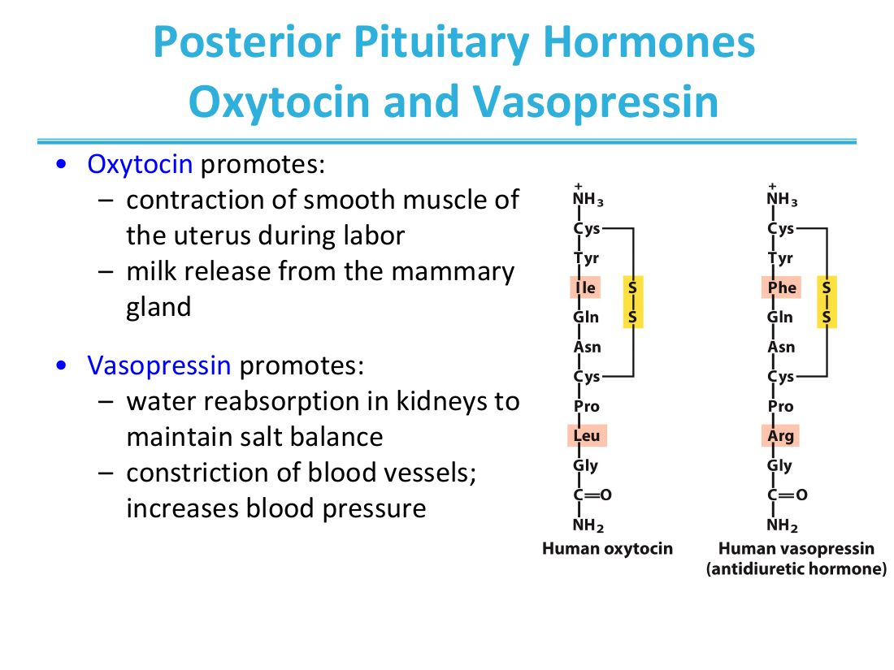
Posterior Pituitary Hormones Oxytocin and Vasopressin
뇌하수체 후엽 호르몬: 옥시토신과 바소프레신
Oxytocin promotes:
옥시토신은 다음을 촉진한다:
contraction of smooth muscle of the uterus during labor
분만 중 자궁 평활근의 수축
milk release from the mammary gland
유선으로부터 젖의 분출
Vasopressin promotes:
바소프레신은 다음을 촉진한다:
water reabsorption in kidneys to maintain salt balance
염 균형을 유지하기 위한 신장의 물 재흡수
constriction of blood vessels; increases blood pressure
혈관 수축; 혈압을 높인다
Human oxytocin / Human vasopressin (antidiuretic hormone) / NH3+ / Cys / Tyr / Ile / Phe / Gln / Asn / Pro / Leu / Arg / Gly / C=O / NH2 / S–S
사람 옥시토신 / 사람 바소프레신(항이뇨 호르몬) / N-말단 / 시스테인 / 타이로신 / 아이소류신 / 페닐알라닌 / 글루타민 / 아스파라진 / 프롤린 / 류신 / 아르지닌 / 글라이신 / 카보닐 / C-말단 아마이드(–NH₂) / 이황화 결합
시험 포인트둘 다 9개 아미노산, S–S 고리, C-말단 아마이드, 차이는 3·8번 잔기. 옥시토신 = 자궁 수축·젖 분출, 바소프레신(ADH) = 물 재흡수·혈관 수축(혈압↑).
그림 해설·더 깊이까지 보기 →슬라이드 16코르티솔 연쇄 증폭 — 증폭과 되먹임 억제기출 1TB 2원문·번역
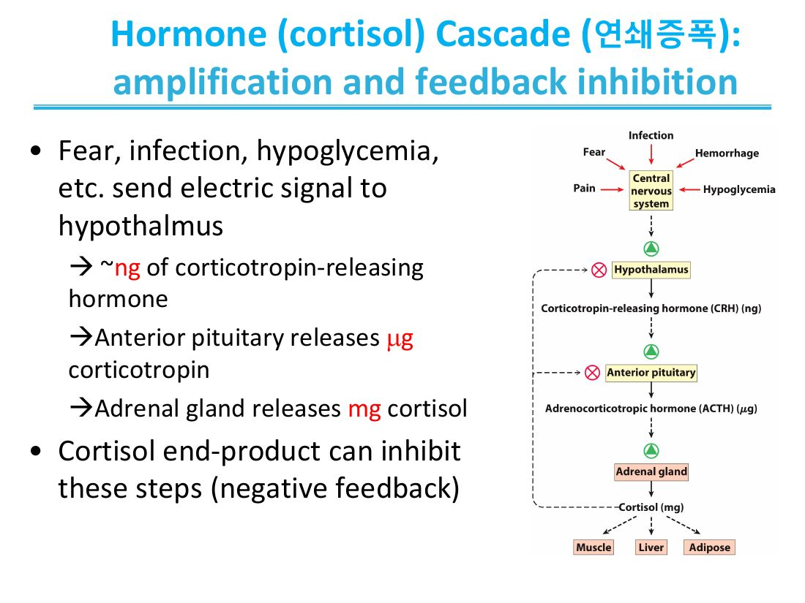
Hormone (cortisol) Cascade (연쇄증폭): amplification and feedback inhibition
호르몬(코르티솔) 연쇄 반응(연쇄 증폭): 증폭과 되먹임 억제
Fear, infection, hypoglycemia, etc. send electric signal to hypothalamus
공포, 감염, 저혈당 등이 시상하부로 전기 신호를 보낸다
→ ~ng of corticotropin-releasing hormone
→ 수 ng의 코르티코트로핀 방출 호르몬(CRH)
→ Anterior pituitary releases μg corticotropin
→ 뇌하수체 전엽이 μg의 코르티코트로핀(ACTH)을 방출한다
→ Adrenal gland releases mg cortisol
→ 부신이 mg의 코르티솔을 방출한다
Cortisol end-product can inhibit these steps (negative feedback)
최종 산물인 코르티솔이 이 단계들을 억제할 수 있다 (음성 되먹임)
Infection / Fear / Hemorrhage / Pain / Hypoglycemia / Central nervous system / Hypothalamus / Corticotropin-releasing hormone (CRH) (ng) / Anterior pituitary / Adrenocorticotropic hormone (ACTH) (μg) / Adrenal gland / Cortisol (mg) / Muscle / Liver / Adipose
감염 / 공포 / 출혈 / 통증 / 저혈당 / 중추신경계 / 시상하부 / 코르티코트로핀 방출 호르몬(CRH)(ng) / 뇌하수체 전엽 / 부신피질 자극 호르몬(ACTH)(μg) / 부신 / 코르티솔(mg) / 근육 / 간 / 지방조직
기출 1건 · 테스트뱅크 2건 형광펜 = 실제로 물어본 문장TB 23-33단답·서술
[서술] 호르몬 캐스케이드는 어떻게 원래 신호를 크게 증폭시키는가?
정답·포인트 각 단계에서 소량의 신호 분자가 다음 단계의 더 많은 수의 분자를 활성화한다. 이것이 여러 단계에 걸쳐 일어나면 이 곱셈 효과로 인해 원래 신호가 수백만 배 증폭될 수 있다. (910쪽 그림 23-8 참조)
예: 시상하부 방출인자 ng → 뇌하수체 자극호르몬 µg → 표적샘 호르몬 mg 수준.
시험 포인트CRH(ng) → ACTH(μg) → 코르티솔(mg) 단위 순서 = 증폭. 코르티솔이 시상하부·전엽을 음성 되먹임 억제.
그림 해설·더 깊이까지 보기 →슬라이드 17호르몬에 의한 상향식 조절 (그림 23-12)원문·번역
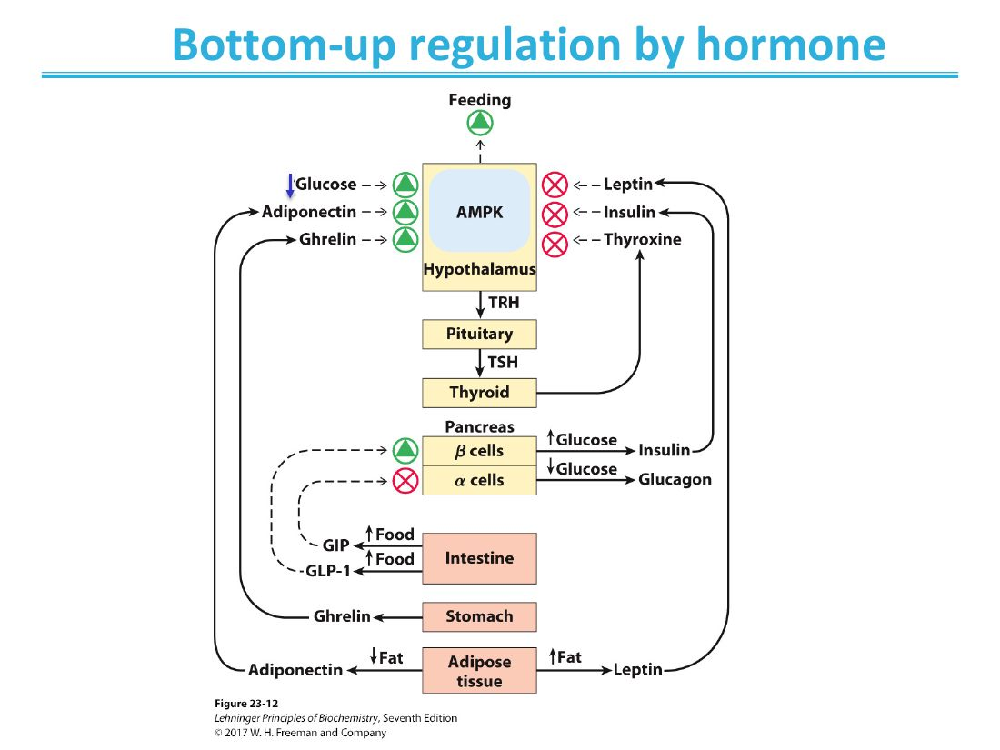
Bottom-up regulation by hormone
호르몬에 의한 상향식 조절
Feeding / Glucose / Adiponectin / Ghrelin / AMPK / Hypothalamus / Leptin / Insulin / Thyroxine / TRH / Pituitary / TSH / Thyroid
섭식 / 포도당 / 아디포넥틴 / 그렐린 / AMPK(AMP 활성화 단백질 키네이스) / 시상하부 / 렙틴 / 인슐린 / 타이록신 / 갑상선 자극 호르몬 방출 호르몬 / 뇌하수체 / 갑상선 자극 호르몬 / 갑상선
Pancreas / β cells / α cells / ↑Glucose → Insulin / ↓Glucose → Glucagon / Intestine / ↑Food → GIP, GLP-1 / Stomach / Ghrelin / Adipose tissue / ↓Fat → Adiponectin / ↑Fat → Leptin
췌장 / β세포 / α세포 / 혈당↑ → 인슐린 / 혈당↓ → 글루카곤 / 장 / 음식↑ → GIP, GLP-1 / 위 / 그렐린 / 지방조직 / 지방↓ → 아디포넥틴 / 지방↑ → 렙틴
시험 포인트시상하부 AMPK를 켜는(섭식↑) 쪽: 저혈당·아디포넥틴·그렐린 / 끄는(섭식↓) 쪽: 렙틴·인슐린·타이록신. 장 GIP·GLP-1 → 인슐린↑·글루카곤↓.
그림 해설·더 깊이까지 보기 →3
간의 대사 (당·아미노산·지방산·케톤체)
슬라이드 18–25
처음이라면 · 큰 그림부터
밥을 먹으면 장에서 흡수된 당과 아미노산은 문맥이라는 혈관을 타고 거의 다 간에 먼저 들어와요. 간은 몸의 물류센터라서, 들어온 물질을 그때 사정에 맞춰 쌓아 둘지, 바로 태울지, 다른 물질로 바꿀지, 다른 장기로 내보낼지 정해요. 지방(TAG)은 길이 좀 달라서, 장 상피세포 안에서 다시 조립된 뒤 킬로미크론에 실려 림프로 들어가요.
이 단원은 "간에 들어온 물질 하나가 어디로 갈 수 있나"를 갈래별로 보는 구성이에요. 포도당은 포도당 6-인산(G6P)이 된 뒤 다섯 갈래로, 아미노산은 단백질 합성·에너지·질소 처리(요소)로, 지방산은 TAG·인지질 합성, β산화, 케톤체로 갈라져요. 갈래 하나하나는 앞 학기에 배운 대사 경로라서, 여기서는 경로 세부보다 "먹었을 때와 굶었을 때 어느 갈래가 켜지나"에 집중하면 돼요.
간이 이런 역할을 할 수 있는 건 대사 유연성이 크기 때문이에요. 식단이 바뀌면 필요한 효소를 늘리고 안 쓰는 효소를 줄이는데, 효소를 갈아 끼우는 속도가 다른 장기보다 훨씬 빨라요.
흐름 한 줄
장에서 흡수→문맥→간→저장 · 연소 · 변환 · 수출
이 단원에서 처음 나오는 말
- 문맥
- 장과 비장에서 나온 혈액을 심장으로 보내기 전에 간으로 먼저 모으는 혈관.
- G6P (포도당 6-인산)
- 세포에 들어온 포도당이 가장 먼저 바뀌는 형태. 여기서 글리코젠 합성, 해당과정, 오탄당 인산 경로 등으로 갈라져요.
- 포도당 6-인산가수분해효소
- G6P에서 인산을 떼어 다시 포도당으로 만드는 효소. 간에는 있고 근육에는 없어서, 간만 혈액에 포도당을 내보낼 수 있어요.
- 킬로미크론 · VLDL
- 지방을 혈액에 실어 나르는 지단백. 킬로미크론은 장에서 흡수한 지방을, VLDL은 간이 만든 지방을 다른 조직으로 날라요.
여기부터 자세히
- 소화된 영양소(당·아미노산·TAG)는 문맥을 통해 간으로. TAG는 장 상피세포 안에서 재조립.
- 간은 대사 유연성이 높음: 식단·다른 조직의 필요에 따라 효소가 늘고 줄며, 효소 교체 속도가 다른 장기보다 빠름.
당 대사: G6P의 5가지 운명
간세포의 포도당 입구 GLUT2는 양방향 회전문이라 간 속 포도당 = 혈당이에요. 들어온 포도당을 붙잡는 글루코카이네이스는 Km이 높아서 혈당이 높을 때만 일하고, G6P에 억제되지도 않아요. 그래서 간은 "남는 포도당만" 가져가요. 만들어진 G6P는 다섯 갈래로 가요:
- 탈인산화 → 포도당 → 혈액(다른 조직으로)
- 간 글리코젠
- 해당과정 → 아세틸-CoA → 간 자신의 ATP
- 해당과정 → 아세틸-CoA → 지방산 → TAG
- 오탄당 인산 경로 → NADPH + 리보스 5-인산
아미노산 대사
단백질·호르몬·뉴클레오타이드 재료로 쓰고, 남으면 아미노기를 떼서 NH₃ → 요소, 탄소 뼈대는 피루브산·TCA 중간체 → 포도당 신생합성·ATP·지질. 공복에는 근육이 단백질을 깨서 아미노기를 피루브산에 붙인 알라닌을 보내고, 간이 그걸 다시 포도당으로 만들어 돌려줘요(포도당-알라닌 회로).
지방산 대사와 케톤체
간은 포도당은 남에게 양보하고 자기는 지방산을 태워요. 아세틸-CoA가 넘치는데 짝꿍 옥살로아세트산(OAA)이 모자라면(굶을 때 OAA를 포도당 만드는 데 써버려서) → 케톤체(β-하이드록시뷰티르산, 아세토아세트산, 아세톤). 케톤체는 물에 녹아 혈뇌장벽을 넘으니 뇌의 대체 연료가 되고, 오래 굶으면 심장 에너지의 최대 70%까지 책임져요. 간 자신은 케톤체를 못 써요.
| 간이 받은 것 | 간이 내보내는 것 |
|---|
| 포도당 | 혈당(뇌·적혈구용), 글리코젠 저장, VLDL 속 TAG |
| 아미노산 | 혈장 단백질, 요소(신장으로), 포도당 |
| 지방산 | VLDL(지방조직으로), 케톤체(뇌·심장으로), 콜레스테롤·담즙산 |
이 단원 기출·테스트뱅크 7건 문제·정답은 슬라이드를 펼치거나 번역본에서- 2025202320222017 퀴즈2016 간 대사 O/X(G6P 억제 X, GLUT2, VLDL, 아세톤) 슬라이드 20
- 20232016 케톤체(NADH 부족 X, 공복 시 β-HB 최대) 슬라이드 24
- TB 23-12 포유류 간(liver)의 대사에 관한 다음 설명 중 틀린 것은? 슬라이드 19
- TB 23-13 글루코키나아제(glucokinase)는: 슬라이드 20
- TB 23-34단답·서술 간에서 포도당 6-인산이 맞이할 수 있는 다섯 가지 운명을 설명하라. 슬라이드 20
- TB 23-35단답·서술 장에서 흡수된 후 간에 도착한 아미노산이 맞이할 수 있는 다섯 가지 운명을 설명하라… 슬라이드 21
- TB 23-36단답·서술 간에서 지방산이 맞이할 수 있는 다섯 가지 운명을 설명하라. 슬라이드 23
이 단원 슬라이드 원문·번역 펼쳐서 보기
슬라이드 1823.2 조직 특이적 대사 — 장기별 역할 지도원문·번역
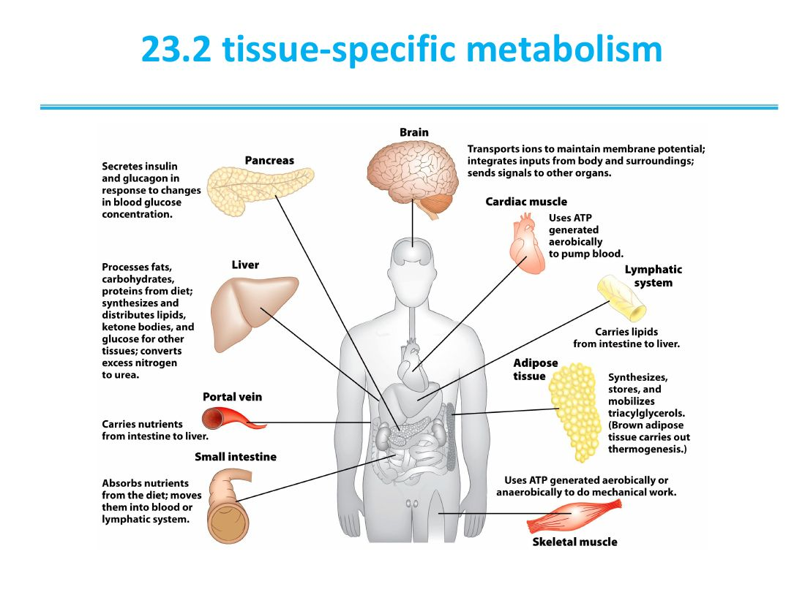
23.2 tissue-specific metabolism
23.2 조직 특이적 대사
Brain: Transports ions to maintain membrane potential; integrates inputs from body and surroundings; sends signals to other organs.
뇌: 막전위를 유지하기 위해 이온을 수송하고, 몸과 주변 환경에서 오는 입력을 통합하며, 다른 장기에 신호를 보낸다.
Pancreas: Secretes insulin and glucagon in response to changes in blood glucose concentration.
췌장: 혈당 농도 변화에 반응하여 인슐린과 글루카곤을 분비한다.
Cardiac muscle: Uses ATP generated aerobically to pump blood.
심장근: 유산소적으로 생성한 ATP를 사용해 혈액을 펌프질한다.
Liver: Processes fats, carbohydrates, proteins from diet; synthesizes and distributes lipids, ketone bodies, and glucose for other tissues; converts excess nitrogen to urea.
간: 음식에서 온 지방·탄수화물·단백질을 처리하고, 다른 조직을 위해 지질·케톤체·포도당을 합성하여 분배하며, 남는 질소를 요소로 바꾼다.
Lymphatic system: Carries lipids from intestine to liver.
림프계: 장에서 간으로 지질을 운반한다.
Adipose tissue: Synthesizes, stores, and mobilizes triacylglycerols. (Brown adipose tissue carries out thermogenesis.)
지방조직: 트라이아실글리세롤을 합성·저장·동원한다. (갈색 지방조직은 열 발생을 수행한다.)
Portal vein: Carries nutrients from intestine to liver.
문맥: 장에서 간으로 영양소를 운반한다.
Small intestine: Absorbs nutrients from the diet; moves them into blood or lymphatic system.
소장: 음식에서 영양소를 흡수하여 혈액이나 림프계로 보낸다.
Skeletal muscle: Uses ATP generated aerobically or anaerobically to do mechanical work.
골격근: 유산소 또는 무산소적으로 생성한 ATP를 사용해 기계적 일을 한다.
시험 포인트장기별 한 줄 역할. 간 = 가공·분배·요소, 지방 = TAG 저장(BAT 열 발생), 심장 = 유산소 ATP, 골격근 = 유산소/무산소 ATP, 뇌 = 이온 수송(막전위).
그림 해설·더 깊이까지 보기 →슬라이드 19간은 영양소를 가공하고 분배한다 — 간은 대사 조건 변화에 적응한다기출 1TB 1원문·번역
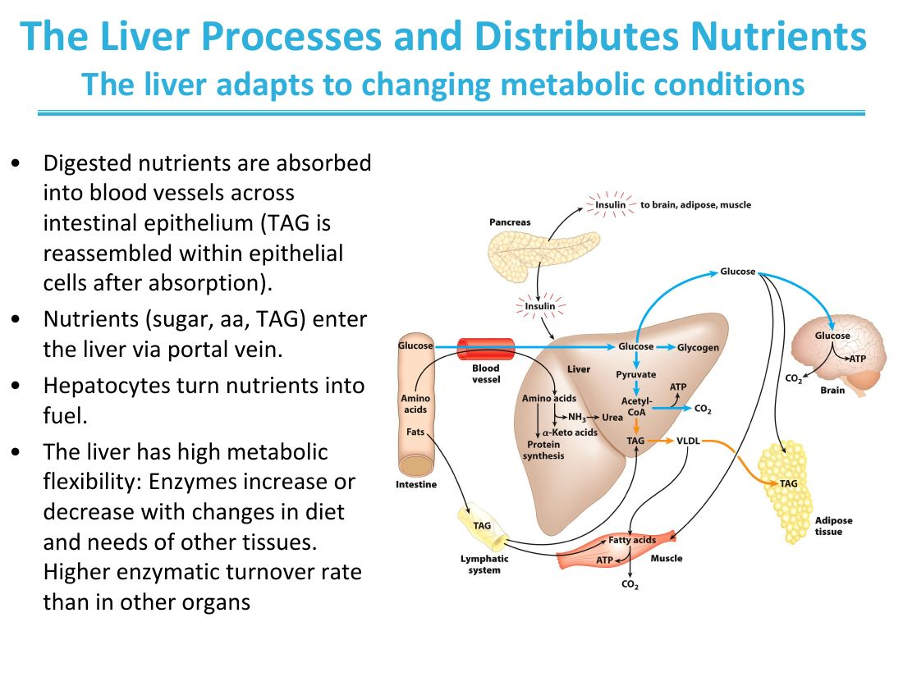
The Liver Processes and Distributes Nutrients
간은 영양소를 가공하고 분배한다
The liver adapts to changing metabolic conditions
간은 변화하는 대사 조건에 적응한다
Digested nutrients are absorbed into blood vessels across intestinal epithelium (TAG is reassembled within epithelial cells after absorption).
소화된 영양소는 장 상피를 가로질러 혈관으로 흡수된다 (TAG는 흡수된 뒤 상피세포 안에서 다시 조립된다).
Nutrients (sugar, aa, TAG) enter the liver via portal vein.
영양소(당, 아미노산, TAG)는 문맥을 통해 간으로 들어간다.
Hepatocytes turn nutrients into fuel.
간세포는 영양소를 연료로 바꾼다.
The liver has high metabolic flexibility: Enzymes increase or decrease with changes in diet and needs of other tissues.
간은 대사 유연성이 높다: 식단과 다른 조직의 필요 변화에 따라 효소가 늘어나거나 줄어든다.
Higher enzymatic turnover rate than in other organs
다른 장기보다 효소 교체 속도가 빠르다
Pancreas / Insulin to brain, adipose, muscle / Glucose / Glycogen / Pyruvate / Acetyl-CoA / ATP / CO2 / Amino acids / NH3 → Urea / α-Keto acids / Protein synthesis / TAG / VLDL / Brain / Adipose tissue / Intestine / Blood vessel / Liver / Fats / Lymphatic system / Fatty acids / Muscle
췌장 / 인슐린(뇌·지방·근육으로) / 포도당 / 글리코젠 / 피루브산 / 아세틸-CoA / ATP / 이산화탄소 / 아미노산 / 암모니아 → 요소 / α-케토산 / 단백질 합성 / TAG / VLDL(초저밀도 지단백질) / 뇌 / 지방조직 / 장 / 혈관 / 간 / 지방 / 림프계 / 지방산 / 근육
기출 1건 · 테스트뱅크 1건 형광펜 = 실제로 물어본 문장TB 23-12
포유류 간(liver)의 대사에 관한 다음 설명 중 틀린 것은?
- A 대부분의 혈장 지단백질은 간에서 합성된다.
- B 간 조직의 효소 구성은 식이 변화에 반응하여 바뀐다.
- C 간은 체내에서 생성되는 요소(urea)의 대부분을 합성한다.
- D 글루코스 6-인산가수분해효소(glucose 6-phosphatase)가 존재하기 때문에 간은 혈류로 포도당을 방출할 수 있는 독특한 능력을 갖는다.
- E 특정 조건에서는 간의 기능 대부분을 다른 기관이 대신 수행할 수 있다.
정답·포인트 E 특정 조건에서는 간의 기능 대부분을 다른 기관이 대신 수행할 수 있다. — 간은 대사의 중심 기관으로 그 기능을 다른 기관이 대신할 수 없다(간부전이 치명적인 이유). 나머지 A~D는 모두 맞는 설명.
시험 포인트영양소는 문맥 → 간(지방은 림프계). 간 = 대사 유연성 최고, 효소 교체 빠름. 간이 TAG를 VLDL로 내보냄.
그림 해설·더 깊이까지 보기 →슬라이드 20간에서의 당 대사 — G6P는 '환승역'기출 1TB 2원문·번역
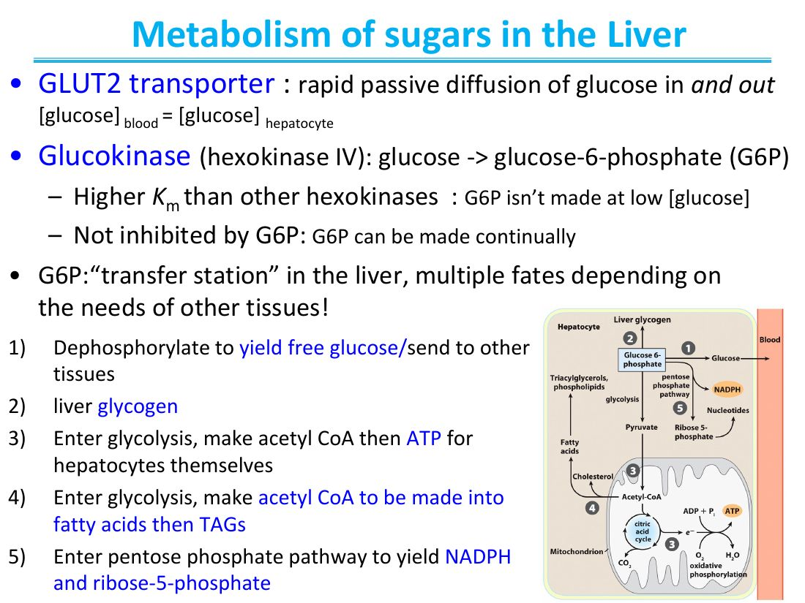
Metabolism of sugars in the Liver
간에서의 당 대사
GLUT2 transporter : rapid passive diffusion of glucose in and out [glucose]blood = [glucose]hepatocyte
GLUT2 수송체: 포도당이 안팎으로 빠르게 수동 확산 → [혈중 포도당] = [간세포 내 포도당]
Glucokinase (hexokinase IV): glucose -> glucose-6-phosphate (G6P)
글루코카이네이스(헥소카이네이스 IV): 포도당 → 포도당-6-인산(G6P)
Higher Km than other hexokinases : G6P isn't made at low [glucose]
다른 헥소카이네이스보다 Km이 높다: 포도당 농도가 낮을 때는 G6P가 만들어지지 않는다
Not inhibited by G6P: G6P can be made continually
G6P에 의해 억제되지 않는다: G6P가 계속 만들어질 수 있다
G6P: "transfer station" in the liver, multiple fates depending on the needs of other tissues!
G6P: 간의 '환승역'. 다른 조직의 필요에 따라 여러 운명을 가진다!
1) Dephosphorylate to yield free glucose/send to other tissues
1) 탈인산화하여 유리 포도당을 만들고 다른 조직으로 보낸다
2) liver glycogen
2) 간 글리코젠(으로 저장)
3) Enter glycolysis, make acetyl CoA then ATP for hepatocytes themselves
3) 해당과정으로 들어가 아세틸-CoA를 만들고, 간세포 자신을 위한 ATP를 만든다
4) Enter glycolysis, make acetyl CoA to be made into fatty acids then TAGs
4) 해당과정으로 들어가 아세틸-CoA를 만들고, 이를 지방산으로, 다시 TAG로 만든다
5) Enter pentose phosphate pathway to yield NADPH and ribose-5-phosphate
5) 오탄당 인산 경로로 들어가 NADPH와 리보스-5-인산을 만든다
Hepatocyte / Liver glycogen / Glucose 6-phosphate / Glucose / Blood / pentose phosphate pathway / NADPH / Nucleotides / Ribose 5-phosphate / Triacylglycerols, phospholipids / Fatty acids / Cholesterol / glycolysis / Pyruvate / Acetyl-CoA / citric acid cycle / ADP + Pi / ATP / O2 / H2O / oxidative phosphorylation / Mitochondrion / CO2 / e−
간세포 / 간 글리코젠 / 포도당 6-인산 / 포도당 / 혈액 / 오탄당 인산 경로 / NADPH / 뉴클레오타이드 / 리보스 5-인산 / 트라이아실글리세롤·인지질 / 지방산 / 콜레스테롤 / 해당과정 / 피루브산 / 아세틸-CoA / 시트르산 회로 / ADP + 무기인산 / ATP / 산소 / 물 / 산화적 인산화 / 미토콘드리아 / 이산화탄소 / 전자
기출 1건 · 테스트뱅크 2건 형광펜 = 실제로 물어본 문장2025202320222017 퀴즈2016
간 대사 — (2025, 모두) GLUT2로 간세포 내·혈중 포도당이 비슷해진다 / 글리코겐은 주요 에너지 저장원 / 간 헥소키네이스 IV는 G6P에 의해 억제 / 당생성 아미노산의 탈아미노화 / 간에서 만든 케톤체 3종이 뇌 포함 다른 조직의 에너지원 · (2023) 간 헥소키네이스는 G6P에 억제되지 않음 / 주 에너지원은 지방산 / TAG가 LDL로 지방세포로 / 포도당-알라닌 회로로 혈당 저하를 막음 · (2017·2016) GLUT4가 간에 / 흡수된 FA가 문맥으로 / 과잉 아미노산은 단백질로 저장 / 글루코키네이스 Km이 더 높다 / G6P = transfer station
정답·포인트 맞는 것: GLUT2(빠른 수동 확산, [포도당]혈액 = [포도당]간세포), 글루코키네이스 = Km 높고 G6P에 억제되지 않음, G6P = 환승역, 간의 주 연료 = 지방산, 당생성 아미노산 탈아미노화, 포도당-알라닌 회로. 틀린 것: G6P에 억제, GLUT4(간은 GLUT2), TAG는 VLDL로 수송(LDL X), 케톤체 3종 모두 X — 아세톤은 대사되지 않고 날숨으로, 흡수된 TAG는 킬로미크론으로 림프를 거침, 아미노산은 단백질로 저장되지 않음. 2025 '글리코겐은 주요 에너지 저장원' — 몸 전체 최대 저장고는 지방조직 TAG라서 함정일 가능성이 커요.
TB 23-13
글루코키나아제(glucokinase)는:
- A 간 글리코겐을 포도당 1-인산으로 전환하는 데 작용한다.
- B 프럭토스 6-인산을 포도당 6-인산으로 전환한다.
- C 포도당 6-인산을 프럭토스 6-인산으로 전환한다.
- D 간세포(hepatocyte)에 존재하는 헥소키나아제 동질효소(isozyme)이다.
- E 모든 포유류 조직에 존재한다.
정답·포인트 D 간세포(hepatocyte)에 존재하는 헥소키나아제 동질효소(isozyme)이다. — 글루코키나아제 = 헥소키나아제 IV. 간(과 췌장 β세포)에 있으며 Km이 높아 혈당이 높을 때만 작동, G6P에 의해 억제되지 않는다. A는 글리코겐 포스포릴라아제, B·C는 포스포헥소스 이성질화효소.
TB 23-34단답·서술
[서술] 간에서 포도당 6-인산이 맞이할 수 있는 다섯 가지 운명을 설명하라.
정답·포인트 가능한 답: (1) 간 글리코겐으로 전환; (2) 탈인산화되어 포도당으로 혈류에 방출; (3) 오탄당 인산 경로를 통한 산화; (4) 해당과정과 시트르산 회로를 통한 산화; (5) 아세틸-CoA로 산화된 뒤, 이것이 트라이아실글리세롤·인지질·콜레스테롤 합성의 전구체로 쓰임. (914쪽 그림 23-13 참조)
시험 포인트GLUT2 = 양방향 수동 확산. 글루코카이네이스 = Km 높음, G6P에 억제 안 됨. G6P의 5가지 운명(혈당·글리코젠·ATP·지방산/TAG·NADPH/리보스).
그림 해설·더 깊이까지 보기 →슬라이드 21간에서의 아미노산 대사 (1)TB 1원문·번역
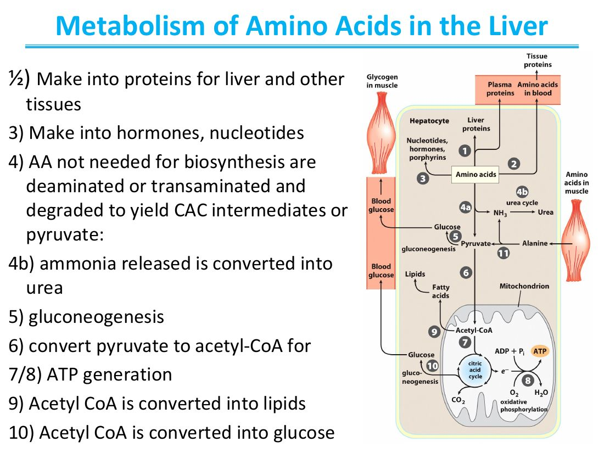
Metabolism of Amino Acids in the Liver
간에서의 아미노산 대사
½) Make into proteins for liver and other tissues
1/2) 간과 다른 조직을 위한 단백질로 만든다
3) Make into hormones, nucleotides
3) 호르몬, 뉴클레오타이드로 만든다
4) AA not needed for biosynthesis are deaminated or transaminated and degraded to yield CAC intermediates or pyruvate:
4) 생합성에 필요 없는 아미노산은 탈아미노화되거나 아미노기 전이된 뒤 분해되어 시트르산 회로 중간체나 피루브산을 낸다:
4b) ammonia released is converted into urea
4b) 방출된 암모니아는 요소로 전환된다
5) gluconeogenesis
5) 포도당 신생합성
6) convert pyruvate to acetyl-CoA for
6) 피루브산을 아세틸-CoA로 전환하여
7/8) ATP generation
7/8) ATP 생성
9) Acetyl CoA is converted into lipids
9) 아세틸-CoA는 지질로 전환된다
10) Acetyl CoA is converted into glucose
10) 아세틸-CoA는 포도당으로 전환된다
Tissue proteins / Plasma proteins / Amino acids in blood / Glycogen in muscle / Hepatocyte / Liver proteins / Nucleotides, hormones, porphyrins / Amino acids / Blood glucose / urea cycle / NH3 / Urea / Glucose / gluconeogenesis / Pyruvate / Alanine / Amino acids in muscle / Lipids / Fatty acids / Mitochondrion / Acetyl-CoA / citric acid cycle / oxidative phosphorylation
조직 단백질 / 혈장 단백질 / 혈중 아미노산 / 근육 글리코젠 / 간세포 / 간 단백질 / 뉴클레오타이드·호르몬·포르피린 / 아미노산 / 혈당 / 요소 회로 / 암모니아 / 요소 / 포도당 / 포도당 신생합성 / 피루브산 / 알라닌 / 근육의 아미노산 / 지질 / 지방산 / 미토콘드리아 / 아세틸-CoA / 시트르산 회로 / 산화적 인산화
테스트뱅크 1건 형광펜 = 실제로 물어본 문장TB 23-35단답·서술
[서술] 장에서 흡수된 후 간에 도착한 아미노산이 맞이할 수 있는 다섯 가지 운명을 설명하라.
정답·포인트 가능한 답: (1) 뉴클레오타이드 합성; (2) 호르몬 합성; (3) 포르피린 같은 기타 질소 함유 산물의 합성; (4) 탈아미노화 후 탄소 골격을 산화하여 에너지 생산; (5) 혈장으로 내보낼(수출용) 단백질 합성; (6) 간 자체의 단백질 합성; (7) 유리 아미노산 형태로 다른 조직에 내보냄. (915쪽 그림 23-14 참조)
시험 포인트아미노산 → 단백질·호르몬·뉴클레오타이드 / 탈아미노 → NH₃는 요소, 탄소 골격은 피루브산·TCA 중간체 → 포도당신생·ATP·지질. 함정: 아세틸-CoA 자체는 포도당 순합성 불가.
그림 해설·더 깊이까지 보기 →슬라이드 22간에서의 아미노산 대사 (2) — 포도당-알라닌 회로기출 1원문·번역
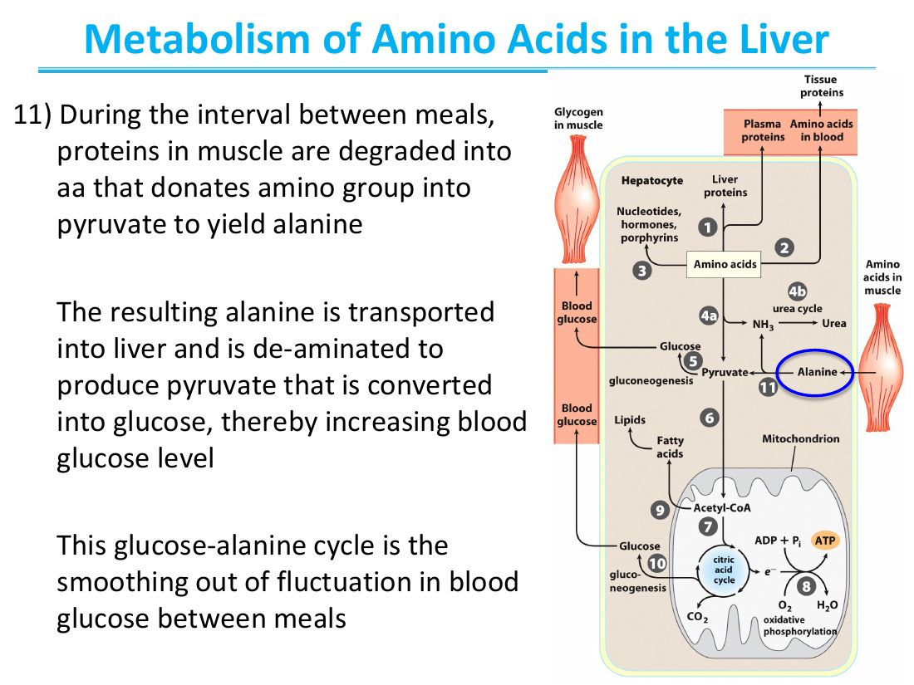
Metabolism of Amino Acids in the Liver
간에서의 아미노산 대사
11) During the interval between meals, proteins in muscle are degraded into aa that donates amino group into pyruvate to yield alanine
11) 식사와 식사 사이에, 근육의 단백질이 아미노산으로 분해되고, 이 아미노산이 피루브산에 아미노기를 넘겨 알라닌을 만든다
The resulting alanine is transported into liver and is de-aminated to produce pyruvate that is converted into glucose, thereby increasing blood glucose level
이렇게 생긴 알라닌은 간으로 운반되어 탈아미노화되어 피루브산이 되고, 피루브산은 포도당으로 전환되어 혈당 수준을 높인다
This glucose-alanine cycle is the smoothing out of fluctuation in blood glucose between meals
이 포도당-알라닌 회로는 식사 사이 혈당의 오르내림을 완화한다
(그림은 슬라이드 21과 같음, 파란 동그라미: Alanine ← Amino acids in muscle)
(슬라이드 21과 같은 그림, 파란 동그라미 강조: 근육의 아미노산 → 알라닌)
시험 포인트포도당-알라닌 회로: 근육 피루브산 + 아미노기 → 알라닌 → 간 → 피루브산 → 포도당. 공복 혈당 완화 + 근육 질소를 간으로 운반.
그림 해설·더 깊이까지 보기 →슬라이드 23간에서의 지방산 대사기출 1TB 1원문·번역
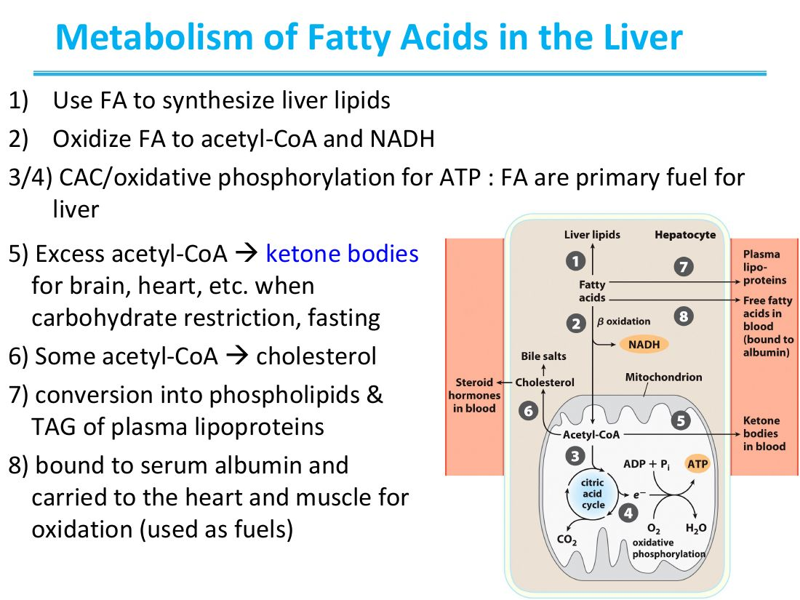
Metabolism of Fatty Acids in the Liver
간에서의 지방산 대사
1) Use FA to synthesize liver lipids
1) 지방산을 이용해 간 지질을 합성한다
2) Oxidize FA to acetyl-CoA and NADH
2) 지방산을 산화하여 아세틸-CoA와 NADH를 만든다
3/4) CAC/oxidative phosphorylation for ATP : FA are primary fuel for liver
3/4) 시트르산 회로/산화적 인산화로 ATP를 만든다: 지방산은 간의 주 연료다
5) Excess acetyl-CoA → ketone bodies for brain, heart, etc. when carbohydrate restriction, fasting
5) 탄수화물 제한이나 공복 시, 남는 아세틸-CoA → 뇌·심장 등을 위한 케톤체
6) Some acetyl-CoA → cholesterol
6) 일부 아세틸-CoA → 콜레스테롤
7) conversion into phospholipids & TAG of plasma lipoproteins
7) 혈장 지단백질의 인지질과 TAG로 전환
8) bound to serum albumin and carried to the heart and muscle for oxidation (used as fuels)
8) 혈청 알부민에 결합해 심장과 근육으로 운반되어 산화된다 (연료로 쓰임)
Liver lipids / Hepatocyte / Fatty acids / β oxidation / NADH / Bile salts / Cholesterol / Steroid hormones in blood / Mitochondrion / Acetyl-CoA / citric acid cycle / ADP + Pi / ATP / O2 / H2O / oxidative phosphorylation / CO2 / Plasma lipoproteins / Free fatty acids in blood (bound to albumin) / Ketone bodies in blood
간 지질 / 간세포 / 지방산 / β산화 / NADH / 담즙산염 / 콜레스테롤 / 혈중 스테로이드 호르몬 / 미토콘드리아 / 아세틸-CoA / 시트르산 회로 / ADP + 무기인산 / ATP / 산소 / 물 / 산화적 인산화 / 이산화탄소 / 혈장 지단백질 / 혈중 유리 지방산(알부민 결합) / 혈중 케톤체
기출 1건 · 테스트뱅크 1건 형광펜 = 실제로 물어본 문장TB 23-36단답·서술
[서술] 간에서 지방산이 맞이할 수 있는 다섯 가지 운명을 설명하라.
정답·포인트 가능한 답: (1) 트라이아실글리세롤 또는 콜레스테롤 에스터로 전환되어 혈장 지단백질 형태로 내보내짐; (2) 간세포 인지질로 전환; (3) 산화되어 케톤체로 전환된 후 다른 조직으로 내보내짐; (4) β 산화로 아세틸-CoA가 된 뒤 시트르산 회로를 통해 추가로 산화되어 ATP 생산; (5) β 산화로 아세틸-CoA가 된 뒤, 그 아세틸-CoA로부터 콜레스테롤 합성; (6) 혈청 알부민에 결합해 심장과 골격근으로 수송. (915쪽 그림 23-15 참조)
시험 포인트지방산 = 간의 주 연료. 넘치는 아세틸-CoA → 케톤체(뇌·심장용, 공복·탄수화물 제한 시). 혈중 지방산은 알부민에 붙어 운반.
그림 해설·더 깊이까지 보기 →슬라이드 24남는 아세틸-CoA는 케톤체로 전환된다기출 2TB 1원문·번역
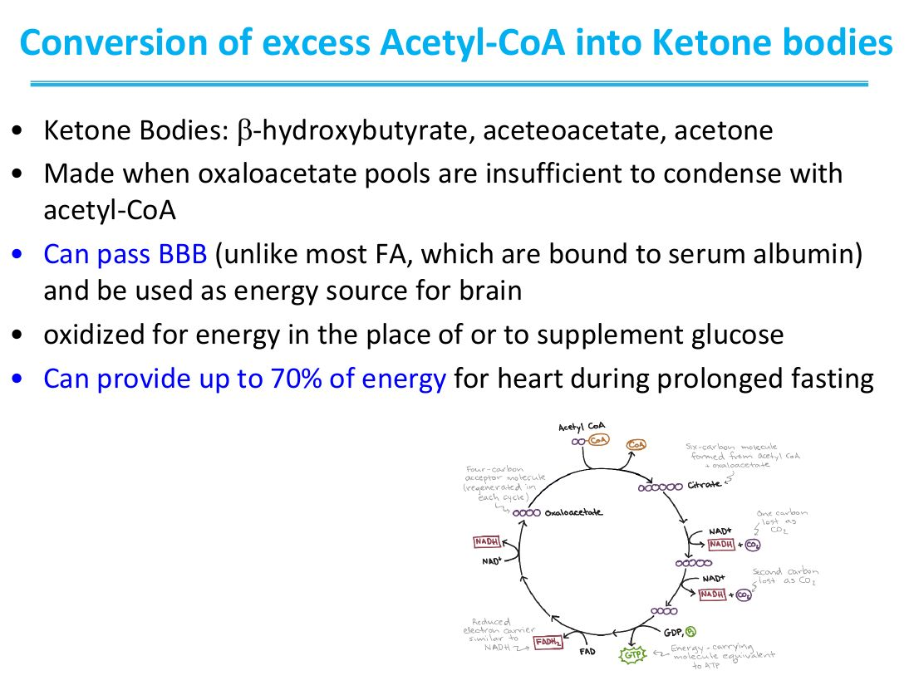
Conversion of excess Acetyl-CoA into Ketone bodies
남는 아세틸-CoA의 케톤체 전환
Ketone Bodies: β-hydroxybutyrate, acetoacetate, acetone
케톤체: β-하이드록시뷰티르산, 아세토아세트산, 아세톤
Made when oxaloacetate pools are insufficient to condense with acetyl-CoA
옥살로아세트산 풀이 아세틸-CoA와 축합하기에 부족할 때 만들어진다
Can pass BBB (unlike most FA, which are bound to serum albumin) and be used as energy source for brain
혈뇌장벽(BBB)을 통과할 수 있어(혈청 알부민에 결합된 대부분의 지방산과 달리) 뇌의 에너지원으로 쓰일 수 있다
oxidized for energy in the place of or to supplement glucose
포도당 대신, 또는 포도당을 보충하여 에너지를 위해 산화된다
Can provide up to 70% of energy for heart during prolonged fasting
장기간 공복 시 심장 에너지의 최대 70%까지 공급할 수 있다
Acetyl CoA / CoA / Citrate / Six-carbon molecule formed from acetyl CoA + oxaloacetate / NAD+ / NADH / CO2 / One carbon lost as CO2 / Second carbon lost as CO2 / GDP, Pi / GTP / Energy-carrying molecule equivalent to ATP / FAD / FADH2 / Reduced electron carrier similar to NADH / Oxaloacetate / Four-carbon acceptor molecule (regenerated in each cycle)
아세틸-CoA / 조효소 A / 시트르산 / 아세틸-CoA + 옥살로아세트산으로 만들어진 탄소 6개 분자 / NAD⁺ / NADH / 이산화탄소 / 탄소 하나가 CO₂로 빠져나감 / 두 번째 탄소가 CO₂로 빠져나감 / GDP, 무기인산 / GTP / ATP와 동등한 에너지 운반 분자 / FAD / FADH₂ / NADH와 비슷한 환원된 전자 운반체 / 옥살로아세트산 / 탄소 4개짜리 수용체 분자(매 회전마다 재생됨)
기출 2건 · 테스트뱅크 1건 형광펜 = 실제로 물어본 문장20232016
(2016) 케톤체 틀린 것 — 아세토아세트산 → 아세톤 / 아세톤은 대사되지 않음 / BBB 통과 / NADH가 부족할 때 생성 / 기아 시 심장의 주 에너지원 · (2023) 공복 시 혈중 농도가 가장 크게(빠르게) 오르는 것 — β-하이드록시뷰티르산 / 아세토아세트산 / 아세톤 / 포도당 / 유리지방산
정답·포인트 2016 = NADH 부족 X — OAA가 모자라고 NADH/NAD⁺가 높을 때 생성. 2023 = β-하이드록시뷰티르산(그림 23-31에서 가장 크게 상승, 지방산 상승은 훨씬 작음).
시험 포인트케톤체 3종. 생성 조건 = OAA 부족. BBB 통과(지방산은 알부민 결합이라 못 함) → 뇌 연료. 장기 공복 시 심장 에너지 최대 70%.
그림 해설·더 깊이까지 보기 →슬라이드 25앞 장들에서 다룬 탄수화물·아미노산·지방 대사 경로 총정리 (표)원문·번역
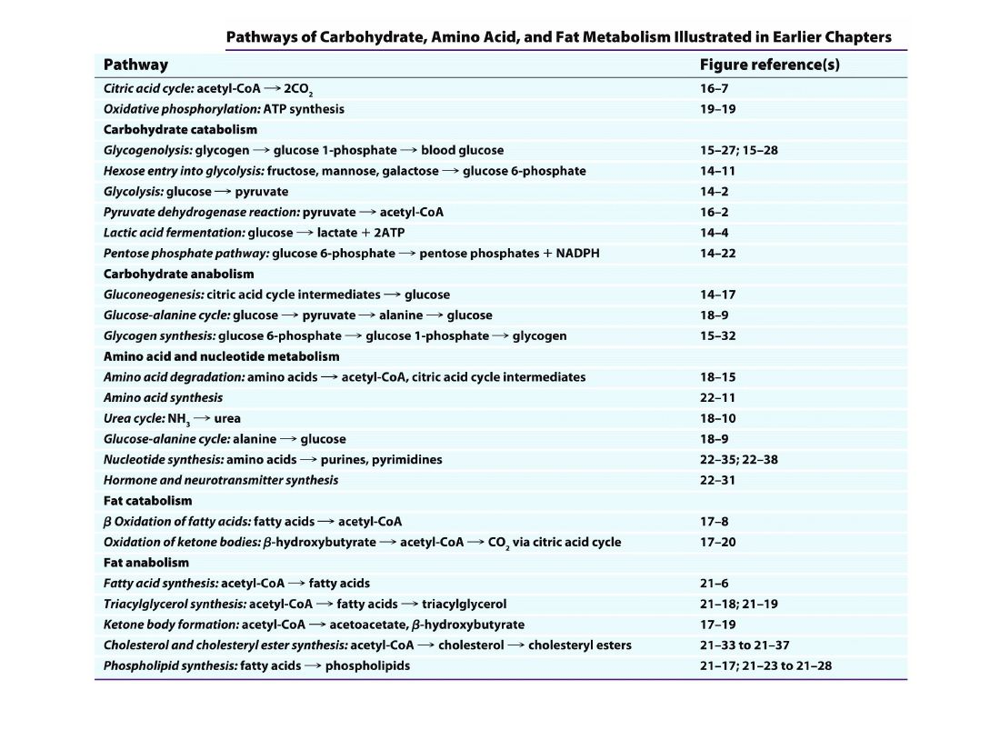
Pathways of Carbohydrate, Amino Acid, and Fat Metabolism Illustrated in Earlier Chapters
앞 장들에서 그림으로 다룬 탄수화물, 아미노산, 지방 대사 경로
Pathway / Figure reference(s)
경로 / 참고 그림 번호
Citric acid cycle: acetyl-CoA → 2CO2 (16–7)
시트르산 회로: 아세틸-CoA → 2CO₂ (그림 16-7)
Oxidative phosphorylation: ATP synthesis (19–19)
산화적 인산화: ATP 합성 (19-19)
Carbohydrate catabolism
탄수화물 이화작용
Glycogenolysis: glycogen → glucose 1-phosphate → blood glucose (15–27; 15–28)
글리코젠 분해: 글리코젠 → 포도당 1-인산 → 혈당 (15-27; 15-28)
Hexose entry into glycolysis: fructose, mannose, galactose → glucose 6-phosphate (14–11)
육탄당의 해당과정 진입: 과당·만노스·갈락토스 → 포도당 6-인산 (14-11)
Glycolysis: glucose → pyruvate (14–2)
해당과정: 포도당 → 피루브산 (14-2)
Pyruvate dehydrogenase reaction: pyruvate → acetyl-CoA (16–2)
피루브산 탈수소효소 반응: 피루브산 → 아세틸-CoA (16-2)
Lactic acid fermentation: glucose → lactate + 2ATP (14–4)
젖산 발효: 포도당 → 젖산 + 2ATP (14-4)
Pentose phosphate pathway: glucose 6-phosphate → pentose phosphates + NADPH (14–22)
오탄당 인산 경로: 포도당 6-인산 → 오탄당 인산 + NADPH (14-22)
Carbohydrate anabolism
탄수화물 동화작용
Gluconeogenesis: citric acid cycle intermediates → glucose (14–17)
포도당 신생합성: 시트르산 회로 중간체 → 포도당 (14-17)
Glucose-alanine cycle: glucose → pyruvate → alanine → glucose (18–9)
포도당-알라닌 회로: 포도당 → 피루브산 → 알라닌 → 포도당 (18-9)
Glycogen synthesis: glucose 6-phosphate → glucose 1-phosphate → glycogen (15–32)
글리코젠 합성: 포도당 6-인산 → 포도당 1-인산 → 글리코젠 (15-32)
Amino acid and nucleotide metabolism
아미노산과 뉴클레오타이드 대사
Amino acid degradation: amino acids → acetyl-CoA, citric acid cycle intermediates (18–15)
아미노산 분해: 아미노산 → 아세틸-CoA, 시트르산 회로 중간체 (18-15)
Amino acid synthesis (22–11)
아미노산 합성 (22-11)
Urea cycle: NH3 → urea (18–10)
요소 회로: 암모니아 → 요소 (18-10)
Glucose-alanine cycle: alanine → glucose (18–9)
포도당-알라닌 회로: 알라닌 → 포도당 (18-9)
Nucleotide synthesis: amino acids → purines, pyrimidines (22–35; 22–38)
뉴클레오타이드 합성: 아미노산 → 퓨린, 피리미딘 (22-35; 22-38)
Hormone and neurotransmitter synthesis (22–31)
호르몬과 신경전달물질 합성 (22-31)
β Oxidation of fatty acids: fatty acids → acetyl-CoA (17–8)
지방산의 β산화: 지방산 → 아세틸-CoA (17-8)
Oxidation of ketone bodies: β-hydroxybutyrate → acetyl-CoA → CO2 via citric acid cycle (17–20)
케톤체 산화: β-하이드록시뷰티르산 → 아세틸-CoA → 시트르산 회로를 거쳐 CO₂ (17-20)
Fatty acid synthesis: acetyl-CoA → fatty acids (21–6)
지방산 합성: 아세틸-CoA → 지방산 (21-6)
Triacylglycerol synthesis: acetyl-CoA → fatty acids → triacylglycerol (21–18; 21–19)
트라이아실글리세롤 합성: 아세틸-CoA → 지방산 → TAG (21-18; 21-19)
Ketone body formation: acetyl-CoA → acetoacetate, β-hydroxybutyrate (17–19)
케톤체 생성: 아세틸-CoA → 아세토아세트산, β-하이드록시뷰티르산 (17-19)
Cholesterol and cholesteryl ester synthesis: acetyl-CoA → cholesterol → cholesteryl esters (21–33 to 21–37)
콜레스테롤과 콜레스테릴 에스터 합성: 아세틸-CoA → 콜레스테롤 → 콜레스테릴 에스터 (21-33~21-37)
Phospholipid synthesis: fatty acids → phospholipids (21–17; 21–23 to 21–28)
인지질 합성: 지방산 → 인지질 (21-17; 21-23~21-28)
시험 포인트표 자체보다 각 경로의 출발 → 도착 물질을 아는지 묻는 문제로 응용될 수 있어요.
그림 해설·더 깊이까지 보기 →4
지방조직 (WAT·BAT)
슬라이드 26–28
처음이라면 · 큰 그림부터
지방조직은 두 종류가 있어요. 백색 지방(WAT)은 창고예요. 세포 하나가 커다란 기름방울 하나로 거의 꽉 차 있고, 먹었을 땐 TAG로 쌓아 두고 굶을 땐 지방산으로 풀어 혈액에 내보내요. 단순한 창고로 끝나지 않고 렙틴 같은 호르몬도 내보내서 내분비 기관으로도 봐요.
갈색 지방(BAT)은 난로예요. 작은 기름방울이 여러 개 있고 미토콘드리아가 아주 많아서 갈색으로 보여요. 이 미토콘드리아는 연료를 태워도 ATP를 만드는 대신 열을 내요. 원래 미토콘드리아는 막 사이에 수소 이온(H⁺)을 모아 두었다가 ATP 합성효소로 흘려보내며 ATP를 만드는데, 갈색 지방에는 UCP1(써모제닌)이라는 옆문이 있어서 H⁺가 그쪽으로 새 버리고, 그 에너지가 열로 나가요. 신생아나 추위에 노출된 사람에게 중요한 체온 유지 장치예요.
흐름 한 줄
먹은 뒤: 지방산 → TAG로 저장(WAT)→굶을 때: TAG → 지방산 방출→추울 때: 지방산을 태워 열 발생(BAT)
이 단원에서 처음 나오는 말
- 지방분해효소(리페이스)
- TAG에서 지방산을 떼어 내는 효소. 굶거나 에피네프린이 오면 활성화돼요.
- 짝풀림(uncoupling)
- 연료를 태우는 일(전자 전달)과 ATP 만드는 일이 따로 노는 상태. 남는 에너지는 열이 돼요.
- UCP1 (써모제닌)
- 갈색 지방 미토콘드리아 내막의 단백질. H⁺가 ATP 합성효소를 거치지 않고 돌아오게 하는 통로예요.
여기부터 자세히
- WAT = 저장(큰 방울 1개), BAT = 열 발생(작은 방울 여러 개, 미토콘드리아·UCP1 많음).
백색 지방조직(WAT)
탄수화물을 많이 먹으면 포도당 → 피루브산 → 아세틸-CoA → 지방산, 간에서 VLDL로 온 지방산도 TAG로 저장해요. 연료가 필요해지면 리파아제가 TAG를 풀어 지방산을 내보내고, 에피네프린(과 글루카곤)이 PKA로 페릴리핀(지방 방울 덮개)과 HSL을 인산화해서 속도를 올려요. 호르몬에 아주 빨리 반응하는 '살아있는' 조직이에요.
갈색 지방조직(BAT)과 열 발생
갈색 지방은 작고 각진 세포에 작은 방울이 여러 개, 미토콘드리아와 혈관이 많아요(사이토크롬·헤모글로빈 때문에 갈색). 미토콘드리아 속막에 UCP1(서모제닌)이 있어서, 전자전달계가 퍼올린 H⁺가 ATP 합성효소 대신 UCP1로 새어 들어가요 → 기울기 에너지가 열로. 신생아는 척추·큰 혈관·장기 주변에 BAT가 많고, 어릴 때 줄지만 성인도 추위에 노출되면 전지방세포가 BAT가 될 수 있어요.
PET 사진이 증거예요: 평소엔 목·쇄골·척추 주변이 포도당을 많이 먹다가(까맣게), 48시간 몸을 데우고 찍으면 사라져요 → 성인 BAT는 체온이 낮을 때만 켜져요.
| 백색(WAT) | 갈색(BAT) |
|---|
| 세포 | 크고 둥글다 | 작고 다각형 |
| 지방 방울 | 큰 것 1개 | 작은 것 여러 개 |
| 미토콘드리아 | 적다 | 많다 + UCP1 |
| 역할 | 저장·동원 | 열 발생 |
이 단원 기출·테스트뱅크 1건 문제·정답은 슬라이드를 펼치거나 번역본에서 이 단원 슬라이드 원문·번역 펼쳐서 보기
슬라이드 26두 종류의 지방조직 (1) — 백색 지방조직(WAT)기출 1원문·번역
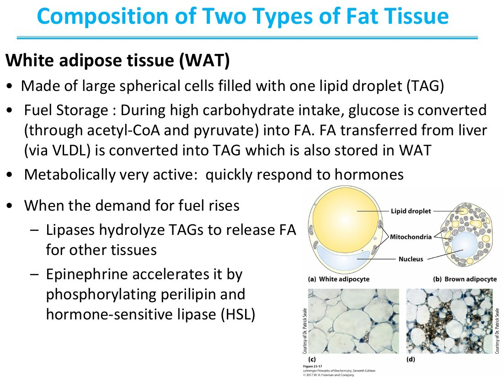
Composition of Two Types of Fat Tissue
두 종류 지방조직의 구성
White adipose tissue (WAT)
백색 지방조직(WAT)
Made of large spherical cells filled with one lipid droplet (TAG)
하나의 지방 방울(TAG)로 가득 찬 크고 둥근 세포로 이루어져 있다
Fuel Storage : During high carbohydrate intake, glucose is converted (through acetyl-CoA and pyruvate) into FA. FA transferred from liver (via VLDL) is converted into TAG which is also stored in WAT
연료 저장: 탄수화물을 많이 섭취할 때 포도당은 (피루브산과 아세틸-CoA를 거쳐) 지방산으로 전환된다. 간에서 (VLDL을 통해) 옮겨온 지방산은 TAG로 전환되어 역시 WAT에 저장된다
Metabolically very active: quickly respond to hormones
대사적으로 매우 활발하다: 호르몬에 빠르게 반응한다
When the demand for fuel rises
연료 수요가 증가하면
Lipases hydrolyze TAGs to release FA for other tissues
리파아제가 TAG를 가수분해하여 다른 조직을 위한 지방산을 방출한다
Epinephrine accelerates it by phosphorylating perilipin and hormone-sensitive lipase (HSL)
에피네프린은 페릴리핀과 호르몬 민감성 리파아제(HSL)를 인산화하여 이를 가속한다
Lipid droplet / Mitochondria / Nucleus / (a) White adipocyte / (b) Brown adipocyte / (c) / (d) / Courtesy of Dr. Patrick Seale
지방 방울 / 미토콘드리아 / 핵 / (a) 백색 지방세포 / (b) 갈색 지방세포 / (c) / (d) / 사진 제공: Patrick Seale 박사
기출 1건 형광펜 = 실제로 물어본 문장2016
BAT와 WAT — WAT는 TAG 형태로 저장 / BAT는 지방산을 분해해 에너지 / BAT는 thermogenin / WAT는 adipocyte / WAT는 호르몬에 반응
정답·포인트 BAT = 미토콘드리아 많음 + 써모제닌(UCP1)로 열 발생, WAT = 큰 지방방울 1개, 호르몬에 빠르게 반응(에피네프린 → 페릴리핀·HSL 인산화).
시험 포인트WAT = 큰 방울 1개, 저장 기관(포도당→지방산, VLDL 지방산→TAG). 에피네프린 → PKA → 페릴리핀·HSL 인산화 → 지방 분해↑.
그림 해설·더 깊이까지 보기 →슬라이드 27두 종류의 지방조직 (2) — 갈색 지방조직(BAT)과 열 발생기출 2원문·번역
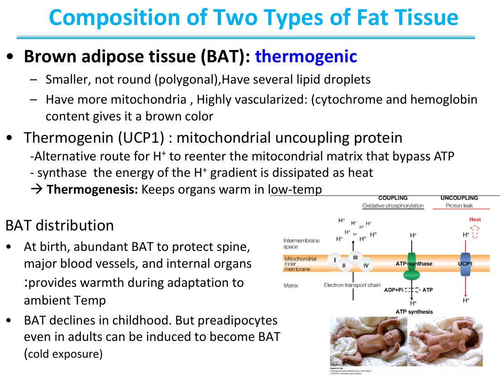
Composition of Two Types of Fat Tissue
두 종류 지방조직의 구성
Brown adipose tissue (BAT): thermogenic
갈색 지방조직(BAT): 열을 발생시킨다
Smaller, not round (polygonal), Have several lipid droplets
더 작고, 둥글지 않다(다각형), 여러 개의 지방 방울을 가진다
Have more mitochondria, Highly vascularized: (cytochrome and hemoglobin content gives it a brown color)
미토콘드리아가 더 많고, 혈관이 매우 풍부하다: (사이토크롬과 헤모글로빈 함량 때문에 갈색을 띤다)
Thermogenin (UCP1) : mitochondrial uncoupling protein
서모제닌(UCP1): 미토콘드리아 짝풀림 단백질
Alternative route for H+ to reenter the mitochondrial matrix that bypass ATP synthase - the energy of the H+ gradient is dissipated as heat
ATP 합성효소를 우회하여 H⁺가 미토콘드리아 기질로 다시 들어가는 대체 경로 — H⁺ 기울기의 에너지가 열로 흩어진다
→ Thermogenesis: Keeps organs warm in low-temp
→ 열 발생: 낮은 온도에서 장기를 따뜻하게 유지한다
At birth, abundant BAT to protect spine, major blood vessels, and internal organs : provides warmth during adaptation to ambient Temp
출생 시 척추, 주요 혈관, 내부 장기를 보호하기 위해 BAT가 풍부하다: 바깥 온도에 적응하는 동안 따뜻함을 제공한다
BAT declines in childhood. But preadipocytes even in adults can be induced to become BAT (cold exposure)
BAT는 어린 시절에 줄어든다. 하지만 성인에서도 전지방세포가 BAT로 되도록 유도될 수 있다 (추위 노출)
COUPLING: Oxidative phosphorylation / UNCOUPLING: Proton leak / Intermembrane space / Mitochondrial inner membrane / Matrix / Electron transport chain / I, II, III, IV / ATP-synthase / ADP+Pi → ATP / ATP synthesis / UCP1 / Heat / H+
짝지음: 산화적 인산화 / 짝풀림: 양성자 누출 / 막사이 공간 / 미토콘드리아 내막 / 기질 / 전자 전달계 / 복합체 I·II·III·IV / ATP 합성효소 / ADP+무기인산 → ATP / ATP 합성 / UCP1 / 열 / 양성자
시험 포인트BAT = 작고 다각형, 방울 여러 개, 미토콘드리아 많음(갈색 = 사이토크롬+헤모글로빈). UCP1 = 짝풀림 단백질, H⁺가 ATP 합성효소 우회 → 열. 신생아에 많음, 성인도 추위로 유도.
그림 해설·더 깊이까지 보기 →슬라이드 28성인의 갈색 지방 (PET 영상, 그림 23-16b)원문·번역
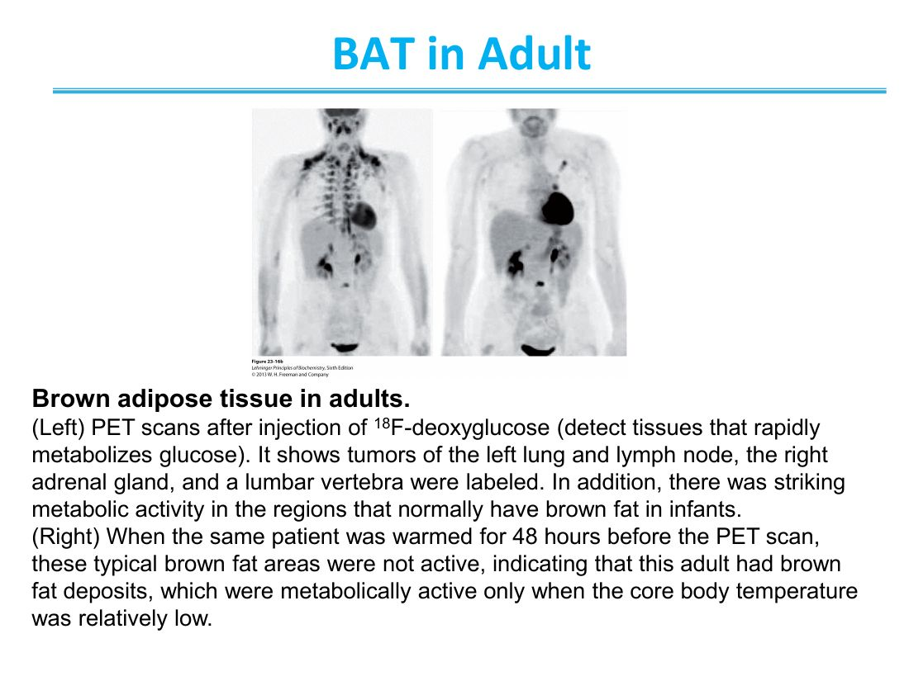
Brown adipose tissue in adults.
성인의 갈색 지방조직.
(Left) PET scans after injection of 18F-deoxyglucose (detect tissues that rapidly metabolizes glucose).
(왼쪽) ¹⁸F-디옥시글루코스(포도당을 빠르게 대사하는 조직을 검출함)를 주사한 뒤의 PET 영상.
It shows tumors of the left lung and lymph node, the right adrenal gland, and a lumbar vertebra were labeled.
왼쪽 폐와 림프절, 오른쪽 부신, 그리고 요추의 종양이 표지된 것을 보여준다.
In addition, there was striking metabolic activity in the regions that normally have brown fat in infants.
게다가 영아에서 보통 갈색 지방이 있는 부위에서 두드러진 대사 활성이 나타났다.
(Right) When the same patient was warmed for 48 hours before the PET scan, these typical brown fat areas were not active, indicating that this adult had brown fat deposits, which were metabolically active only when the core body temperature was relatively low.
(오른쪽) 같은 환자를 PET 촬영 전 48시간 동안 따뜻하게 했더니 이 전형적인 갈색 지방 부위들이 활성을 보이지 않았다. 이는 이 성인에게 갈색 지방이 존재하며, 심부 체온이 비교적 낮을 때만 대사적으로 활성화된다는 것을 보여준다.
시험 포인트성인도 BAT 존재, 체온이 낮을 때만 활성(보온 48시간 → 신호 사라짐). FDG-PET = 포도당 대사 활발한 조직 검출.
그림 해설·더 깊이까지 보기 →5
근육과 뇌의 대사
슬라이드 29–35
처음이라면 · 큰 그림부터
근육은 연료를 쓰는 쪽이에요. 쉴 때는 지방산과 케톤체를 천천히 태우고, 움직임이 세질수록 혈당, 그다음엔 자기 안에 쌓아 둔 글리코젠으로 바꿔 써요. 전력질주 처음 몇 초는 연료를 태울 시간도 없어서, 포스포크레아틴에 저장된 인산을 ADP에 바로 넘겨 ATP를 만들어요.
산소가 모자랄 만큼 세게 뛰면 근육은 포도당을 젖산까지만 분해해요. 이 젖산은 혈액을 타고 간으로 가서 다시 포도당으로 만들어지고, 그 포도당이 근육으로 돌아와요. 이 왕복이 코리 회로예요. 근육이 진 빚을 간이 대신 갚아 주는 셈이죠.
뇌는 반대로 까다로워요. 쌓아 둔 연료가 거의 없고 지방산은 쓰지 못해서 평소엔 혈당에 전적으로 기대요. 혈당 유지가 몸 전체의 최우선 과제인 이유가 이거예요. 굶는 기간이 길어지면 뇌는 간이 만든 케톤체(β-하이드록시뷰티르산)로 일부 갈아타요.
흐름 한 줄
쉴 때: 지방산 · 케톤체→가벼운 운동: 혈당→격렬한 운동: 근육 글리코젠 → 젖산→첫 몇 초: 포스포크레아틴
이 단원에서 처음 나오는 말
- 지근 · 속근
- 지근(적색근)은 미토콘드리아가 많아 산소로 오래 태우는 근육, 속근(백색근)은 해당과정으로 짧고 강하게 쓰는 근육.
- 포스포크레아틴
- 근육에 미리 저장해 둔 고에너지 인산. 크레아틴 키네이스가 이 인산을 ADP에 넘겨 ATP를 만들어요.
- 코리 회로
- 근육의 젖산 → 간에서 포도당 → 다시 근육으로 돌아오는 순환.
여기부터 자세히
- 근육은 활동 강도에 따라 연료를 바꿈(지방산·케톤체 → 혈당 → 근육 글리코젠 → 포스포크레아틴).
- 뇌는 혈당 의존, 기아 시 케톤체(β-하이드록시뷰티르산) 사용.
근육 종류와 연료
지근(적색)은 혈관·미토콘드리아가 많아 산소로 꾸준히 ATP를 만들고 덜 지쳐요. 속근(백색)은 힘이 세지만 ATP를 빨리 쓰고 빨리 지쳐요. 지구력 훈련은 미토콘드리아를 늘려요.
휴식
지방산·케톤체적당한 운동
혈당전력 질주(속근)
근육 글리코젠 → 젖산처음 몇 초
포스포크레아틴
에피네프린은 간 글리코젠(→혈당)과 근육 글리코젠을 동시에 깨서 '투쟁-도피'를 준비해요.
포스포크레아틴과 크레아틴 키네이스
미토콘드리아의 mCK가 ATP의 인산을 크레아틴에 실어 PCr로 만들고, PCr이 세포질로 퍼져서 cCK가 다시 ADP에 내려 ATP를 만들어요. 쉬는 근육엔 PCr이 ATP의 3~5배나 쌓여 있어서, 운동 중 ³¹P-MRS를 찍으면 ATP는 거의 그대로, PCr만 쑥 줄고 Pi가 늘어요. 회복기에 PCr이 다시 차요.
임상 연결: 크레아틴·PCr은 저절로 크레아티닌이 돼 소변으로 나가서, 혈중 크레아티닌↑ = 신장 기능(GFR)↓. 심장형 CK(CK-MB)가 혈액에 오르면 심근경색. 근육이 크레아틴을 흡수하려면 운동이 필요해요(보디빌더 = 보충제 + 운동).
코리 회로
전력 질주한 근육은 글리코젠 → 젖산(ATP 생김). 젖산은 혈액 → 간 → ATP를 써서 포도당 → 근육으로 돌아가 글리코젠을 채워요. 포도당 → 젖산 → 포도당. (포도당-알라닌 회로는 질소도 같이 옮긴다는 점이 달라요.)
뇌의 대사
뇌는 휴식 시 산소의 20%를 써요. 글리코젠이 거의 없어서 혈당에 매달리고, 굶을 땐 β-하이드록시뷰티르산으로 버텨요. ATP의 대부분은 Na⁺K⁺-ATPase(3Na⁺ 밖, 2K⁺ 안)로 막전위를 유지하는 데 들어가요. 지방산은 알부민에 붙어 BBB를 못 넘어서 못 써요.
이 단원 기출·테스트뱅크 6건 문제·정답은 슬라이드를 펼치거나 번역본에서- 202520232017 퀴즈 근육(속근 미토콘드리아 적음, PCr 3~5배) 슬라이드 30
- 2016단답·서술 휴식·운동·회복 ATP/PCr 그래프 슬라이드 32
- TB 23-14 골격근에서: 슬라이드 30
- TB 23-15 골격근에서 포스포크레아틴은 다음으로 기능한다: 슬라이드 31
- TB 23-16 코리 회로(Cori cycle)란: 슬라이드 34
- TB 23-17 다음 중 옳은 설명은? 슬라이드 35
이 단원 슬라이드 원문·번역 펼쳐서 보기
슬라이드 29근육은 ATP를 기계적 일에 사용한다 — 두 종류의 근육기출 1TB 1원문·번역
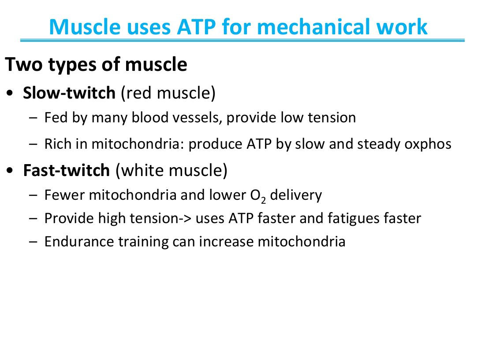
Muscle uses ATP for mechanical work
근육은 ATP를 기계적 일에 사용한다
Two types of muscle
근육의 두 종류
Slow-twitch (red muscle)
지근(느린 연축, 적색근)
Fed by many blood vessels, provide low tension
많은 혈관으로부터 공급받고, 낮은 장력을 낸다
Rich in mitochondria: produce ATP by slow and steady oxphos
미토콘드리아가 풍부하다: 느리고 꾸준한 산화적 인산화로 ATP를 만든다
Fast-twitch (white muscle)
속근(빠른 연축, 백색근)
Fewer mitochondria and lower O2 delivery
미토콘드리아가 더 적고 O₂ 공급이 더 적다
Provide high tension -> uses ATP faster and fatigues faster
높은 장력을 낸다 → ATP를 더 빨리 쓰고 더 빨리 지친다
Endurance training can increase mitochondria
지구력 훈련으로 미토콘드리아를 늘릴 수 있다
기출 1건 · 테스트뱅크 1건 형광펜 = 실제로 물어본 문장 시험 포인트지근(적색) = 혈관·미토콘드리아↑, 산화적 인산화, 낮은 장력, 피로 느림. 속근(백색) = 미토콘드리아↓, 높은 장력, 피로 빠름. 지구력 훈련 → 미토콘드리아↑.
그림 해설·더 깊이까지 보기 →슬라이드 30근육 수축의 에너지원기출 1TB 2원문·번역
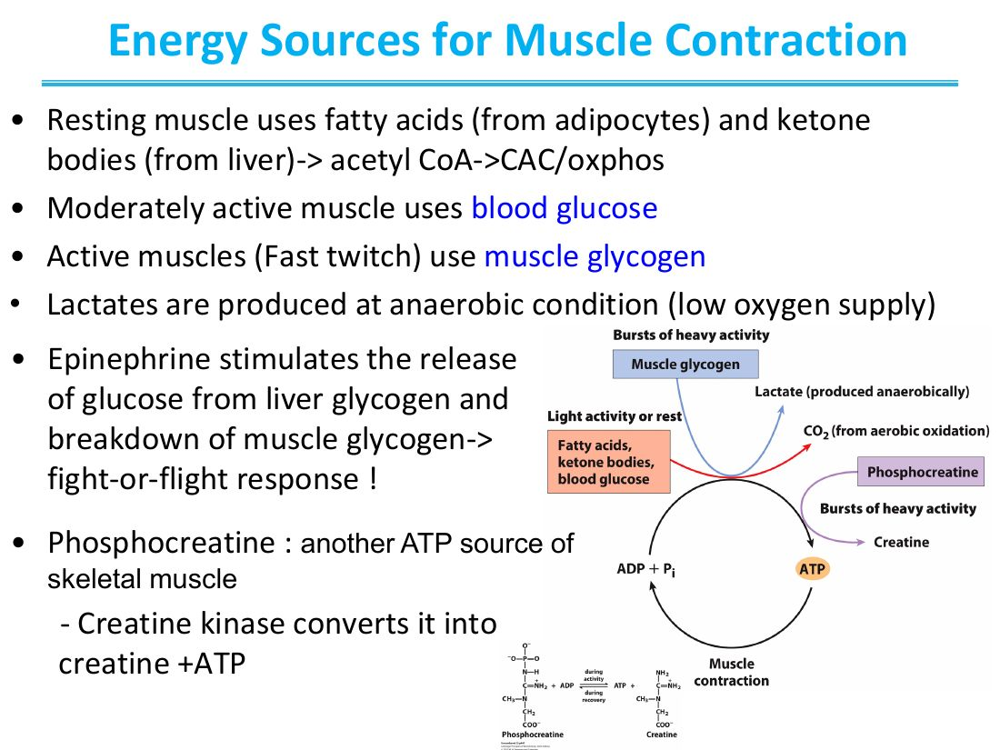
Energy Sources for Muscle Contraction
근육 수축의 에너지원
Resting muscle uses fatty acids (from adipocytes) and ketone bodies (from liver) -> acetyl CoA -> CAC/oxphos
쉬고 있는 근육은 (지방세포에서 온) 지방산과 (간에서 온) 케톤체를 쓴다 → 아세틸-CoA → 시트르산 회로/산화적 인산화
Moderately active muscle uses blood glucose
적당히 활동하는 근육은 혈당을 쓴다
Active muscles (Fast twitch) use muscle glycogen
활발히 활동하는 근육(속근)은 근육 글리코젠을 쓴다
Lactates are produced at anaerobic condition (low oxygen supply)
무산소 조건(산소 공급이 낮을 때)에서는 젖산이 생성된다
Epinephrine stimulates the release of glucose from liver glycogen and breakdown of muscle glycogen -> fight-or-flight response !
에피네프린은 간 글리코젠으로부터의 포도당 방출과 근육 글리코젠의 분해를 촉진한다 → 투쟁-도피 반응!
Phosphocreatine : another ATP source of skeletal muscle
포스포크레아틴: 골격근의 또 다른 ATP 공급원
Creatine kinase converts it into creatine + ATP
크레아틴 키네이스가 이를 크레아틴 + ATP로 전환한다
Bursts of heavy activity / Muscle glycogen / Lactate (produced anaerobically) / Light activity or rest / Fatty acids, ketone bodies, blood glucose / CO2 (from aerobic oxidation) / Phosphocreatine / Creatine / ADP + Pi / ATP / Muscle contraction
격렬한 활동의 폭발 / 근육 글리코젠 / 젖산(무산소적으로 생성) / 가벼운 활동 또는 휴식 / 지방산·케톤체·혈당 / CO₂(유산소 산화에서) / 포스포크레아틴 / 크레아틴 / ADP + 무기인산 / ATP / 근육 수축
Phosphocreatine + ADP ⇌ ATP + Creatine (during activity → / ← during recovery)
포스포크레아틴 + ADP ⇌ ATP + 크레아틴 (활동 중 → 방향 / 회복 중 ← 방향)
기출 1건 · 테스트뱅크 2건 형광펜 = 실제로 물어본 문장202520232017 퀴즈
근육 대사 — (2025, 모두) 속근은 미토콘드리아가 많아 폭발적 힘 / 폭발적 힘엔 혈중 포도당·케톤체 사용 / 미토콘드리아에서 만든 PCr은 수송체로 세포질 이동 / 휴식기 PCr이 ATP의 약 10배 / 크레아틴·PCr은 신장에서 크레아티닌으로 배설 · (2023) 속근은 미토콘드리아가 적어 폭발적 / 에너지원 포도당·케톤체 / 휴식기 PCr ≫ ATP / CK는 세포질·미토콘드리아 모두 / 크레아티닌으로 신장 제거 · (2017) 쉴 때 지방산 / PCr이 항상 ATP보다 높다 / 운동 시 Pᵢ 증가 / 활동 근육은 근육 글리코겐
정답·포인트 슬라이드 기준: 속근 = 미토콘드리아 적음, 폭발적 활동 = 근육 글리코겐(→ 젖산), 휴식 = 지방산·케톤체, PCr은 세포질로 확산(수송체 언급 없음), 휴식기 PCr = ATP의 3~5배(10배 X), mCK·cCK 둘 다 있음, 크레아틴·PCr → 저절로 크레아티닌 → 신장 배설, 운동 중 Pᵢ↑(³¹P-MRS).
TB 23-14
골격근에서:
- A 아미노산은 필수적인 연료이다.
- B 휴식 시에는 지방산이 선호되는 연료이다.
- C 대량의 트라이아실글리세롤이 연료로 저장된다.
- D 포스포크레아틴은 근육 수축의 직접적인 에너지원으로서 ATP를 대신할 수 있다.
- E 저장된 근육 글리코겐은 포도당으로 전환되어 혈당을 보충하기 위해 방출될 수 있다.
정답·포인트 B 휴식 시에는 지방산이 선호되는 연료이다. — 휴식 중인 근육은 지방산(과 케톤체)을 주로 쓰고, 격렬한 운동 시 글리코겐(→젖산)을 쓴다. D: 포스포크레아틴은 ATP를 재생할 뿐 직접 쓰이지 않음. E: 근육엔 G6Pase가 없어 포도당을 방출 못함.
시험 포인트휴식 = 지방산·케톤체 / 중간 = 혈당 / 격렬(속근) = 근육 글리코젠 → 젖산. 에피네프린 = 간·근육 글리코젠 분해. 포스포크레아틴 + ADP → 크레아틴 + ATP(크레아틴 키네이스).
그림 해설·더 깊이까지 보기 →슬라이드 31크레아틴과 크레아틴 키네이스 — ATP 셔틀 (Box 23-2 그림 1)기출 1TB 1원문·번역
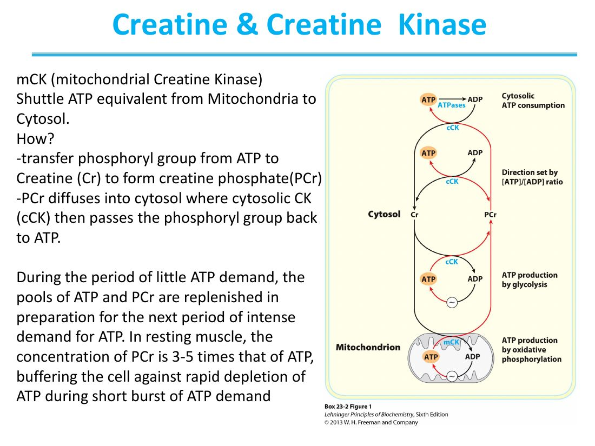
Creatine & Creatine Kinase
크레아틴과 크레아틴 키네이스
mCK (mitochondrial Creatine Kinase) Shuttle ATP equivalent from Mitochondria to Cytosol.
mCK(미토콘드리아 크레아틴 키네이스)는 ATP에 해당하는 에너지를 미토콘드리아에서 세포질로 운반(셔틀)한다.
transfer phosphoryl group from ATP to Creatine (Cr) to form creatine phosphate (PCr)
ATP의 인산기를 크레아틴(Cr)에 옮겨 크레아틴 인산(PCr)을 만든다
PCr diffuses into cytosol where cytosolic CK (cCK) then passes the phosphoryl group back to ATP.
PCr은 세포질로 확산되고, 거기서 세포질 CK(cCK)가 인산기를 다시 ATP로 넘긴다.
During the period of little ATP demand, the pools of ATP and PCr are replenished in preparation for the next period of intense demand for ATP.
ATP 수요가 적은 기간에는, 다음 번 강한 ATP 수요에 대비하여 ATP와 PCr 풀이 다시 채워진다.
In resting muscle, the concentration of PCr is 3-5 times that of ATP, buffering the cell against rapid depletion of ATP during short burst of ATP demand
쉬고 있는 근육에서 PCr 농도는 ATP의 3~5배로, 짧고 폭발적인 ATP 수요 동안 ATP가 급격히 고갈되는 것을 완충한다
Box 23-2 Figure 1
Box 23-2 그림 1
Cytosolic ATP consumption / ATPases / cCK / Direction set by [ATP]/[ADP] ratio / Cytosol / Cr / PCr / ATP production by glycolysis / Mitochondrion / mCK / ATP production by oxidative phosphorylation
세포질의 ATP 소비 / ATP 가수분해효소 / 세포질 CK / [ATP]/[ADP] 비율이 방향을 결정 / 세포질 / 크레아틴 / 포스포크레아틴 / 해당과정에 의한 ATP 생산 / 미토콘드리아 / 미토콘드리아 CK / 산화적 인산화에 의한 ATP 생산
기출 1건 · 테스트뱅크 1건 형광펜 = 실제로 물어본 문장TB 23-15
골격근에서 포스포크레아틴은 다음으로 기능한다:
- A 미토콘드리아를 위한 무기인산(Pi)의 저장고
- B ATP를 보충하기 위한 고에너지 인산기의 저장고
- C 단백질 합성을 위한 아미노산 저장고
- D 무산소 조건에서의 전자 수용체
- E 위의 어느 것도 아님
정답·포인트 B ATP를 보충하기 위한 고에너지 인산기의 저장고 — 포스포크레아틴 + ADP ⇌ 크레아틴 + ATP (크레아틴 키나아제). 짧은 순간의 격렬한 수축 시 ATP를 빠르게 재생하는 완충 저장고.
시험 포인트mCK(미토콘드리아)는 ATP → PCr, cCK(세포질)는 PCr → ATP. 휴식 근육 [PCr] = [ATP]의 3~5배 → ATP 완충.
그림 해설·더 깊이까지 보기 →슬라이드 32포스포크레아틴은 운동 중 ATP 농도를 완충한다 (³¹P-MRS)기출 2원문·번역

Phosphocreatine buffers ATP concentration during exercise.
포스포크레아틴은 운동 중 ATP 농도를 완충한다.
A magnetic resonance spectra (of 31P) showing inorganic phosphate (Pi), phosphocreatine (PCr), and ATP.
무기인산(Pi), 포스포크레아틴(PCr), ATP를 보여주는 (³¹P) 자기공명 스펙트럼.
The series of plots represents the passage of time, from a period of rest to one of exercise, and then of recovery.
연속된 그래프는 휴식기에서 운동기, 그리고 회복기로의 시간 경과를 나타낸다.
Note that the ATP signal hardly changes during exercise, kept high by continued respiration and by the reservoir of phosphocreatine, which diminishes during exercise.
운동 중 ATP 신호가 거의 변하지 않는다는 점에 주목하라. 지속적인 호흡과 운동 중 줄어드는 포스포크레아틴 저장고 덕분에 높게 유지된다.
During recovery, when ATP production by catabolism is greater than ATP utilization by the (now resting) muscle, the phosphocreatine reservoir is refilled.
회복기에 이화작용에 의한 ATP 생산이 (이제 쉬고 있는) 근육의 ATP 사용보다 클 때, 포스포크레아틴 저장고가 다시 채워진다.
Intensity of signal (concentration of the compound) / Chemical shift (parts per million) (identity of the compound) / Pi / PCr / ATP / Rest / Exercise / Recovery
신호 세기(그 화합물의 농도) / 화학적 이동(ppm)(그 화합물이 무엇인지) / 무기인산 / 포스포크레아틴 / ATP / 휴식 / 운동 / 회복
기출 2건 형광펜 = 실제로 물어본 문장2016단답·서술
[주관식] 휴식(rest)·운동(exercise)·회복(recovery) 단계의 ATP와 포스포크레아틴 농도 변화를 그래프로 그리시오. (두 반 복기 모두 출제)
정답·포인트 ATP는 거의 일정, PCr은 운동 중 크게 감소 → 회복기에 다시 상승, Pᵢ는 운동 중 증가. 슬라이드 32의 ³¹P-MRS 그림 그대로.
시험 포인트운동 중 ATP 거의 일정, PCr↓, Pi↑. 회복기 PCr 재충전.
그림 해설·더 깊이까지 보기 →슬라이드 33크레아틴 보충·크레아티닌·CK-MB (Box 23-2 그림 2, 3)기출 1원문·번역
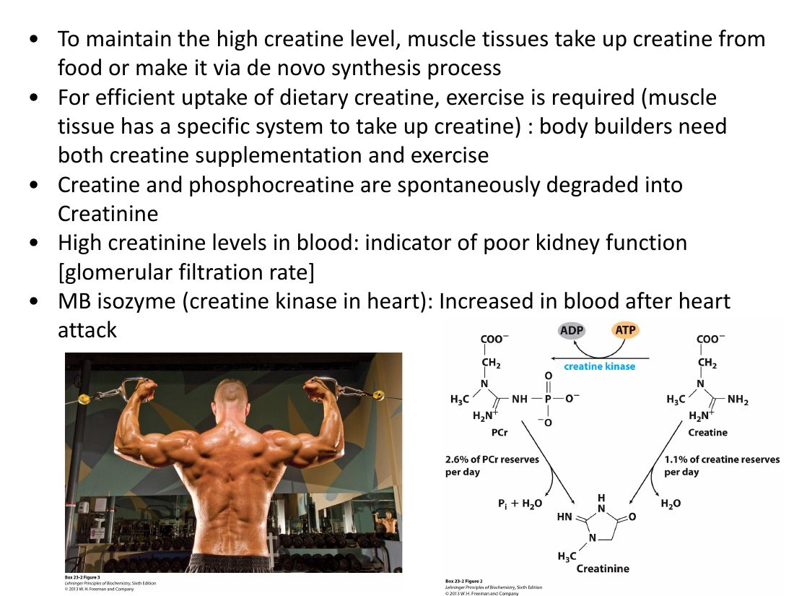
To maintain the high creatine level, muscle tissues take up creatine from food or make it via de novo synthesis process
높은 크레아틴 수준을 유지하기 위해, 근육 조직은 음식에서 크레아틴을 흡수하거나 새로 합성(de novo)하는 과정으로 만든다
For efficient uptake of dietary creatine, exercise is required (muscle tissue has a specific system to take up creatine) : body builders need both creatine supplementation and exercise
음식 속 크레아틴을 효율적으로 흡수하려면 운동이 필요하다(근육 조직에는 크레아틴을 흡수하는 특이적 시스템이 있다): 보디빌더는 크레아틴 보충과 운동이 둘 다 필요하다
Creatine and phosphocreatine are spontaneously degraded into Creatinine
크레아틴과 포스포크레아틴은 자발적으로 분해되어 크레아티닌이 된다
High creatinine levels in blood: indicator of poor kidney function [glomerular filtration rate]
혈중 크레아티닌 수치가 높음: 신장 기능 저하의 지표 [사구체 여과율]
MB isozyme (creatine kinase in heart): Increased in blood after heart attack
MB 동위효소(심장의 크레아틴 키네이스): 심장마비(심근경색) 후 혈중에서 증가한다
Box 23-2 Figure 2, 3
Box 23-2 그림 2, 3
ADP / ATP / creatine kinase / PCr / Creatine / 2.6% of PCr reserves per day / 1.1% of creatine reserves per day / Pi + H2O / H2O / Creatinine
ADP / ATP / 크레아틴 키네이스 / 포스포크레아틴 / 크레아틴 / 하루에 PCr 저장량의 2.6% / 하루에 크레아틴 저장량의 1.1% / 무기인산 + 물 / 물 / 크레아티닌
시험 포인트크레아틴 흡수엔 운동 필요. 크레아틴·PCr → 크레아티닌(비효소적) → 혈중↑ = 신기능 저하(GFR). CK-MB↑ = 심근경색.
그림 해설·더 깊이까지 보기 →슬라이드 34코리 회로 — 골격근과 간의 대사 협력 (그림 23-19)TB 1원문·번역
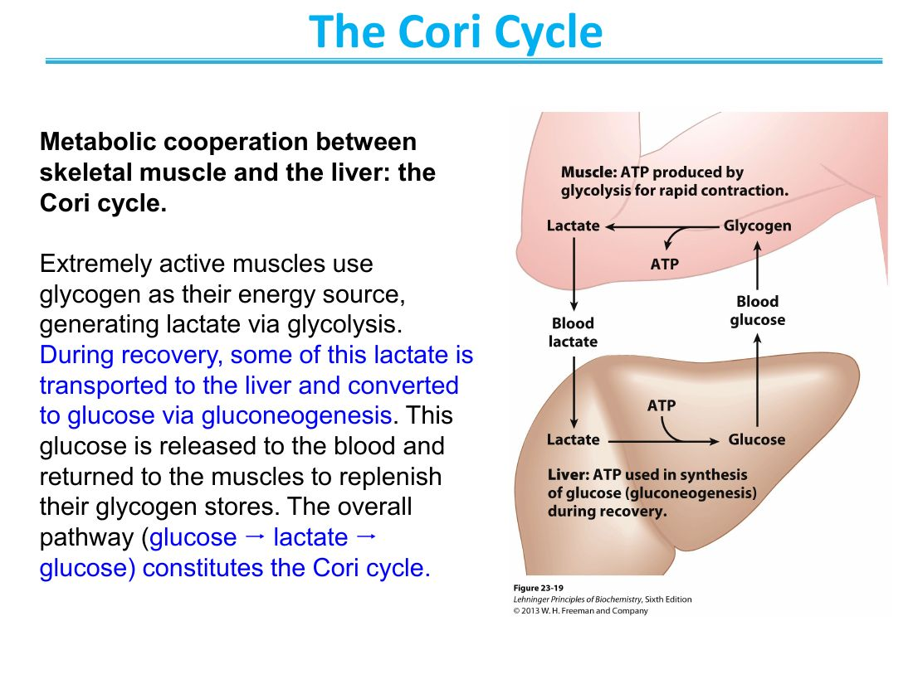
Metabolic cooperation between skeletal muscle and the liver: the Cori cycle.
골격근과 간의 대사 협력: 코리 회로.
Extremely active muscles use glycogen as their energy source, generating lactate via glycolysis.
극도로 활발한 근육은 글리코젠을 에너지원으로 쓰며, 해당과정을 통해 젖산을 만든다.
During recovery, some of this lactate is transported to the liver and converted to glucose via gluconeogenesis.
회복기 동안 이 젖산의 일부는 간으로 운반되어 포도당 신생합성을 통해 포도당으로 전환된다.
This glucose is released to the blood and returned to the muscles to replenish their glycogen stores.
이 포도당은 혈액으로 방출되어 근육으로 돌아가 근육의 글리코젠 저장고를 다시 채운다.
The overall pathway (glucose → lactate → glucose) constitutes the Cori cycle.
전체 경로(포도당 → 젖산 → 포도당)가 코리 회로를 이룬다.
Muscle: ATP produced by glycolysis for rapid contraction. / Lactate / Glycogen / ATP / Blood lactate / Blood glucose / Liver: ATP used in synthesis of glucose (gluconeogenesis) during recovery. / Glucose
근육: 빠른 수축을 위해 해당과정으로 ATP를 생산한다. / 젖산 / 글리코젠 / ATP / 혈중 젖산 / 혈당 / 간: 회복기 동안 포도당 합성(포도당 신생합성)에 ATP를 사용한다. / 포도당
테스트뱅크 1건 형광펜 = 실제로 물어본 문장TB 23-16
코리 회로(Cori cycle)란:
- A 골격근에서 글리코겐 합성을 촉진하기 위해 젖산을 피루브산으로 전환하는 것
- B 글리코겐과 포도당 1-인산 사이의 상호 전환
- C 말초 조직에서 포도당으로부터 젖산이 생성되고, 간에서 그 젖산으로부터 포도당이 재합성되는 것
- D 골격근에서 피루브산으로부터 알라닌을 합성하고 간에서 알라닌으로부터 피루브산을 합성하는 것
- E 간에서의 요소 합성과 장내 세균에 의한 요소의 이산화탄소·암모니아로의 분해
정답·포인트 C 말초 조직에서 포도당으로부터 젖산이 생성되고, 간에서 그 젖산으로부터 포도당이 재합성되는 것 — 근육(해당과정 → 젖산) → 혈액 → 간(포도당신생 → 포도당) → 혈액 → 근육. D는 포도당-알라닌 회로.
시험 포인트코리 회로 = 근육(글리코젠→젖산, ATP 생성) ↔ 간(젖산→포도당, ATP 소비). 포도당 → 젖산 → 포도당.
그림 해설·더 깊이까지 보기 →슬라이드 35뇌는 전기 신호 전달에 에너지를 쓴다 (그림 23-21)TB 1원문·번역
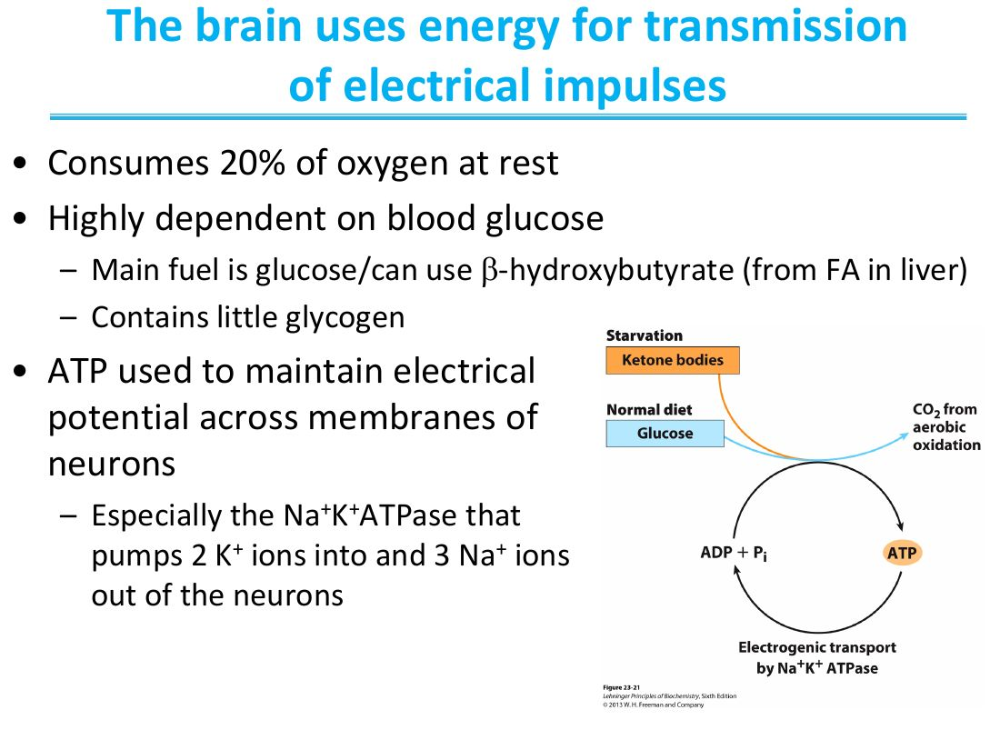
The brain uses energy for transmission of electrical impulses
뇌는 전기 충격(신경 신호) 전달에 에너지를 사용한다
Consumes 20% of oxygen at rest
휴식 시 산소의 20%를 소비한다
Highly dependent on blood glucose
혈당에 크게 의존한다
Main fuel is glucose/can use β-hydroxybutyrate (from FA in liver)
주 연료는 포도당이다 / (간에서 지방산으로 만든) β-하이드록시뷰티르산을 쓸 수 있다
Contains little glycogen
글리코젠을 거의 갖고 있지 않다
ATP used to maintain electrical potential across membranes of neurons
ATP는 뉴런 막을 가로지르는 전위를 유지하는 데 쓰인다
Especially the Na+K+ATPase that pumps 2 K+ ions into and 3 Na+ ions out of the neurons
특히 K⁺ 이온 2개를 뉴런 안으로, Na⁺ 이온 3개를 밖으로 퍼내는 Na⁺K⁺-ATPase
Starvation / Ketone bodies / Normal diet / Glucose / CO2 from aerobic oxidation / ADP + Pi / ATP / Electrogenic transport by Na+K+ ATPase
기아 / 케톤체 / 정상 식사 / 포도당 / 유산소 산화로 생긴 CO₂ / ADP + 무기인산 / ATP / Na⁺K⁺-ATPase에 의한 기전성 수송
테스트뱅크 1건 형광펜 = 실제로 물어본 문장TB 23-17
다음 중 옳은 설명은?
- A 뇌는 에너지원으로 포도당을 선호하지만 케톤체도 사용할 수 있다.
- B 근육은 지방산을 에너지원으로 사용할 수 없다.
- C 잘 먹은 사람에서는 글리코겐과 트라이아실글리세롤로 저장된 에너지 양이 거의 같다.
- D 인간은 글리옥실산 회로의 효소가 없기 때문에 지방산을 에너지원으로 사용할 수 없다.
- E 아미노산은 지방산보다 더 선호되는 에너지원이다.
정답·포인트 A 뇌는 에너지원으로 포도당을 선호하지만 케톤체도 사용할 수 있다. — 뇌는 평소 포도당만 쓰지만 장기 단식 시 케톤체(β-하이드록시뷰티르산)를 사용. C: 지방(TAG) 저장 에너지가 글리코겐보다 훨씬 많다. D: 글리옥실산 회로가 없어 지방산→포도당 '전환'은 못하지만 연료로는 사용 가능.
시험 포인트뇌 = 휴식 산소 20%, 주 연료 포도당, 기아 시 β-하이드록시뷰티르산, 글리코젠 거의 없음. Na⁺K⁺-ATPase = 3Na⁺ 밖, 2K⁺ 안.
그림 해설·더 깊이까지 보기 →6
혈당 조절: 인슐린과 글루카곤
슬라이드 36–42
처음이라면 · 큰 그림부터
혈당은 시소처럼 움직여요. 밥을 먹어 혈당이 오르면 췌장의 β세포가 인슐린을 내보내요. 인슐린의 뜻은 "연료가 넘치니 저장해"예요. 근육과 지방세포는 막에 포도당 수송체(GLUT4)를 올려 포도당을 빨아들이고, 간은 글리코젠과 지방을 만들어요. 굶어서 혈당이 떨어지면 α세포가 글루카곤을 내보내요. 뜻은 "꺼내 써". 간이 글리코젠을 풀고 포도당신생합성을 켜서 혈액으로 포도당을 내보내요.
왜 이렇게 혈당에 예민할까요? 5단원에서 본 것처럼 뇌가 포도당에 기대기 때문이에요. 이 단원에 나오는 숫자(60, 50, 40, 10 mg/100 mL)는 혈당이 떨어질수록 배고픔 → 떨림 → 혼수 → 뇌 손상으로 이어지는 단계를 보여줘요.
β세포가 혈당이 높다는 걸 "알아채는" 과정이 시험에 자주 나와요. 포도당이 들어와 대사되면 ATP가 늘고, ATP가 칼륨 통로를 닫고, 그 결과 막 전위가 바뀌어 칼슘 통로가 열리고, 들어온 칼슘이 인슐린을 담은 소포를 밖으로 내보내요.
흐름 한 줄
혈당↑→GLUT2로 β세포에 포도당 유입→ATP↑→K⁺ 통로 닫힘→탈분극→Ca²⁺ 유입→인슐린 분비
이 단원에서 처음 나오는 말
- 랑게르한스섬
- 췌장 속 내분비 세포 덩어리. α세포는 글루카곤, β세포는 인슐린, δ세포는 소마토스타틴을 내요.
- GLUT2 · GLUT4
- 포도당 수송체. GLUT2는 간·β세포에 늘 있고, GLUT4는 근육·지방에서 인슐린이 올 때만 막으로 올라와요.
- 탈분극
- 세포 안이 평소보다 덜 음전하가 되는 것. 전압에 반응하는 칼슘 통로가 열리는 계기가 돼요.
여기부터 자세히
- 정상 혈당 약 60~90 mg/100 mL. 60 부근 배고픔 + 글루카곤·에피네프린·코르티솔 분비, 50 땀·떨림, 40 이하 중증 저혈당(무기력·경련·혼수), 10 부근 뇌 손상·사망.
췌장 랑게르한스섬의 세 세포
α세포 = 글루카곤(혈당↑), β세포 = 인슐린(혈당↓), δ세포 = 소마토스타틴.
β세포의 인슐린 분비 기전
혈당↑GLUT2 → 글루코카이네이스 → 해당·TCA·산화적 인산화ATP↑K_ATP 닫힘탈분극전압 Ca²⁺ 채널 열림Ca²⁺↑ → 인슐린 세포외배출
K_ATP 채널은 SUR1 4개 + Kir6.2 4개(팔량체). Kir6.2가 구멍(ATP → 닫힘, PIP₂ → 열림), SUR1이 조절부(ADP·다이아족사이드 → 열림, 톨부타마이드 → 닫힘). 항상 열린 돌연변이 → 신생아 당뇨, 항상 닫힌 돌연변이 → 고인슐린혈증. 설포닐유레아(1세대 톨부타마이드, 2세대 글리부라이드·글리피자이드·글리메피리드)는 SUR1에 붙어 채널을 억지로 닫아 인슐린을 짜내는 2형 당뇨약이에요.
인슐린의 효과 (표 23-4)
근육·지방 GLUT4↑, 간 글루코카이네이스 발현↑, 글리코젠 합성효소↑, 가인산분해효소↓, PFK-1(PFK-2 경유)·PDH↑, ACC↑(지방산 합성), 지방조직 LPL↑(TAG 합성).
글루카곤의 효과
cAMP–PKA로 간에서 가인산분해효소↑ 합성효소↓, F2,6BP↓(PFK-1↓·FBPase-1↑), 피루브산 키네이스↓, PEPCK↑ → 해당과정은 끄고 포도당 신생합성을 켜서 포도당을 수출. 지방조직에선 페릴리핀·HSL 인산화로 지방산을 풀어 다른 조직이 지방을 쓰게 하고, 포도당은 뇌에게 양보해요.
| 효소 | 인슐린 | 글루카곤 |
|---|
| 글리코젠 합성효소 | ↑ | ↓ |
| 글리코젠 가인산분해효소 | ↓ | ↑ |
| PFK-1 (F2,6BP) | ↑ | ↓ |
| 피루브산 키네이스 | – | ↓ |
| PEPCK (포도당 신생) | – | ↑ |
| ACC (지방산 합성) | ↑ | ↓ |
| HSL (지방 분해) | – | ↑ |
이 단원 기출·테스트뱅크 8건 문제·정답은 슬라이드를 펼치거나 번역본에서- 20232022202120192017 퀴즈2016 β세포·K_ATP·설포닐유레아(Kir6.2–ATP, 2형만) 슬라이드 39
- 20192017 퀴즈2016 글루카곤이 활성화 안 하는 효소(PK·ACC·PFK-1, 페릴리핀) 슬라이드 41
- 20192017 퀴즈레닌저 연습문제단답·서술 간 인슐린 수용체 KO 생쥐(레닌저 연습문제) 슬라이드 37
- 2022레닌저 연습문제단답·서술 SUR 클로닝(레닌저 연습문제) 슬라이드 39
- TB 23-18 혈당이 비정상적으로 높을 때, 췌장은 다음을 분비한다: 슬라이드 37
- TB 23-19 혈당이 비정상적으로 낮을 때, 췌장은 다음을 분비한다: 슬라이드 41
- TB 23-20 혈중 인슐린 수치가 높아지면: 슬라이드 37
- TB 23-37단답·서술 에피네프린, 글루카곤, 인슐린이 포도당 대사에 미치는 효과를 일반적인 관점에서 비교… 슬라이드 41
이 단원 슬라이드 원문·번역 펼쳐서 보기
슬라이드 36연료 대사의 호르몬 조절 — 저혈당의 생리적 영향 (그림 23-24)원문·번역
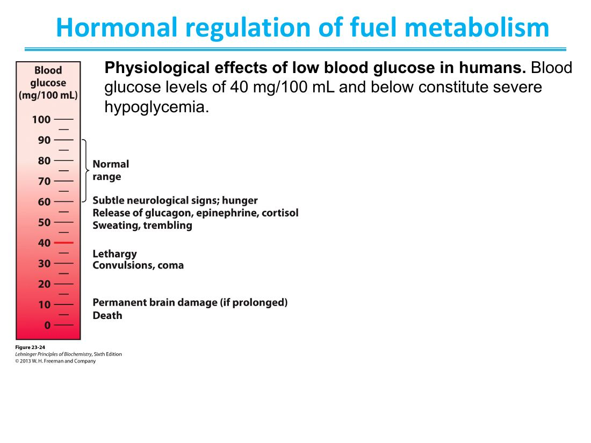
Hormonal regulation of fuel metabolism
연료 대사의 호르몬 조절
Physiological effects of low blood glucose in humans.
사람에서 낮은 혈당의 생리적 영향.
Blood glucose levels of 40 mg/100 mL and below constitute severe hypoglycemia.
혈당 40 mg/100 mL 이하는 중증 저혈당에 해당한다.
Blood glucose (mg/100 mL) / 100, 90, 80, 70, 60, 50, 40, 30, 20, 10, 0
혈당(mg/100 mL) / 눈금 100 ~ 0
Normal range (90 ~ 60)
정상 범위 (90~60 사이 괄호)
Subtle neurological signs; hunger (60)
미묘한 신경학적 증상; 배고픔 (60 부근)
Release of glucagon, epinephrine, cortisol
글루카곤, 에피네프린, 코르티솔의 분비
Sweating, trembling (50)
발한(식은땀), 떨림 (50 부근)
Lethargy / Convulsions, coma (40 ~ 30)
무기력 / 경련, 혼수 (40~30 부근)
Permanent brain damage (if prolonged) / Death (10)
영구적 뇌 손상(오래 지속되면) / 사망 (10 부근)
시험 포인트중증 저혈당 = 40 mg/100 mL 이하. 60 부근 = 배고픔 + 글루카곤·에피네프린·코르티솔 분비. 순서: 배고픔 → 땀·떨림 → 무기력 → 경련·혼수 → 뇌 손상·사망.
그림 해설·더 깊이까지 보기 →슬라이드 37췌장 세포는 중요한 호르몬을 분비한다 + 인슐린의 효과 (표 23-4)기출 1TB 4원문·번역
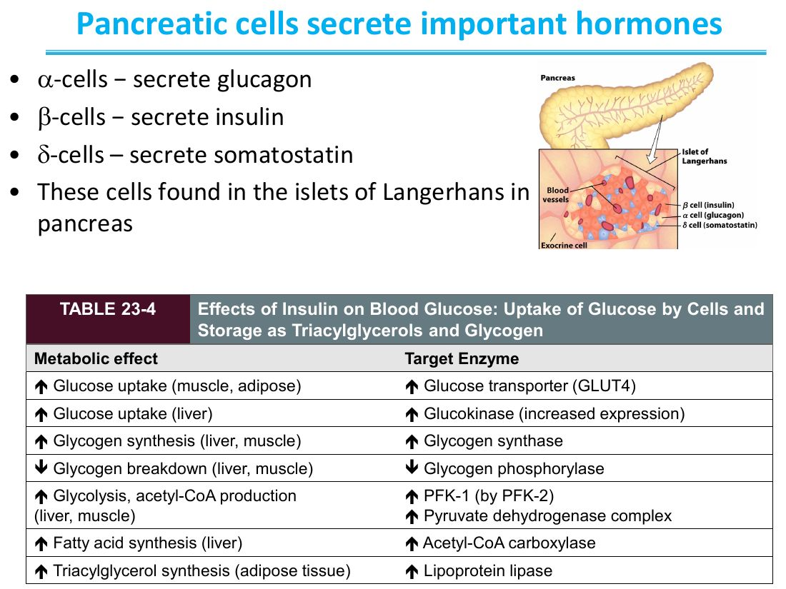
Pancreatic cells secrete important hormones
췌장 세포는 중요한 호르몬을 분비한다
α-cells − secrete glucagon
α세포 − 글루카곤을 분비한다
β-cells − secrete insulin
β세포 − 인슐린을 분비한다
δ-cells – secrete somatostatin
δ세포 − 소마토스타틴을 분비한다
These cells found in the islets of Langerhans in pancreas
이 세포들은 췌장의 랑게르한스섬에 있다
Pancreas / Islet of Langerhans / Blood vessels / β cell (insulin) / α cell (glucagon) / δ cell (somatostatin) / Exocrine cell
췌장 / 랑게르한스섬 / 혈관 / β세포(인슐린) / α세포(글루카곤) / δ세포(소마토스타틴) / 외분비세포
TABLE 23-4 Effects of Insulin on Blood Glucose: Uptake of Glucose by Cells and Storage as Triacylglycerols and Glycogen
표 23-4 혈당에 대한 인슐린의 효과: 세포의 포도당 흡수와 트라이아실글리세롤·글리코젠으로의 저장
Metabolic effect / Target Enzyme
대사 효과 / 표적 효소
↑ Glucose uptake (muscle, adipose) / ↑ Glucose transporter (GLUT4)
↑ 포도당 흡수(근육, 지방) / ↑ 포도당 수송체(GLUT4)
↑ Glucose uptake (liver) / ↑ Glucokinase (increased expression)
↑ 포도당 흡수(간) / ↑ 글루코카이네이스(발현 증가)
↑ Glycogen synthesis (liver, muscle) / ↑ Glycogen synthase
↑ 글리코젠 합성(간, 근육) / ↑ 글리코젠 합성효소
↓ Glycogen breakdown (liver, muscle) / ↓ Glycogen phosphorylase
↓ 글리코젠 분해(간, 근육) / ↓ 글리코젠 가인산분해효소
↑ Glycolysis, acetyl-CoA production (liver, muscle) / ↑ PFK-1 (by PFK-2), ↑ Pyruvate dehydrogenase complex
↑ 해당과정, 아세틸-CoA 생산(간, 근육) / ↑ PFK-1(PFK-2를 통해), ↑ 피루브산 탈수소효소 복합체
↑ Fatty acid synthesis (liver) / ↑ Acetyl-CoA carboxylase
↑ 지방산 합성(간) / ↑ 아세틸-CoA 카복실화효소
↑ Triacylglycerol synthesis (adipose tissue) / ↑ Lipoprotein lipase
↑ 트라이아실글리세롤 합성(지방조직) / ↑ 지단백질 리파아제
기출 1건 · 테스트뱅크 4건 형광펜 = 실제로 물어본 문장20192017 퀴즈레닌저 연습문제단답·서술
[주관식, 레닌저 23장 연습문제] 간 인슐린 수용체만 없는 생쥐: 공복·식후 고혈당, 간 G6Pase↑, 혈중 인슐린↑ — (A) 포도당, (B) G6Pase 수준은?
정답·포인트 (A) high glucose, (B) high glucose 6-phosphatase — 간이 인슐린 신호를 못 받아 포도당신생·포도당 방출을 멈추지 못함.
TB 23-18
혈당이 비정상적으로 높을 때, 췌장은 다음을 분비한다:
- A 에피네프린
- B 글루카곤
- C 포도당
- D 인슐린
- E 트립신
정답·포인트 D 인슐린 — 고혈당 → 췌장 β세포에서 인슐린 분비 → 혈당 저하.
TB 23-20
혈중 인슐린 수치가 높아지면:
- A 간의 포도당 흡수를 억제한다.
- B 간과 근육의 글리코겐 합성을 억제한다.
- C 정상보다 낮은 혈당 수치의 결과로 나타난다.
- D 간의 글리코겐 분해를 촉진한다.
- E 간에서 지방산과 트라이아실글리세롤의 합성을 촉진한다.
정답·포인트 E 간에서 지방산과 트라이아실글리세롤의 합성을 촉진한다. — 인슐린 = 저장(동화) 호르몬: 포도당 흡수↑, 글리코겐 합성↑, 지방산·TAG 합성↑, 글리코겐 분해↓. A·B·C·D는 모두 반대.
시험 포인트α=글루카곤, β=인슐린, δ=소마토스타틴(랑게르한스섬). 표 23-4의 효과–효소 7쌍 그대로 암기(GLUT4, 글루코카이네이스, 글리코젠 합성효소↑, 가인산분해효소↓, PFK-1·PDH, ACC, LPL).
그림 해설·더 깊이까지 보기 →슬라이드 38β세포는 혈당 증가에 반응해 인슐린을 분비한다 (그림 23-27)기출 2TB 1원문·번역
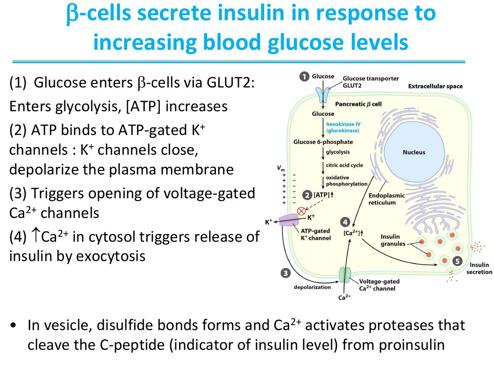
β-cells secrete insulin in response to increasing blood glucose levels
β세포는 혈당 수준 증가에 반응하여 인슐린을 분비한다
(1) Glucose enters β-cells via GLUT2: Enters glycolysis, [ATP] increases
(1) 포도당이 GLUT2를 통해 β세포로 들어간다: 해당과정으로 들어가 [ATP]가 증가한다
(2) ATP binds to ATP-gated K+ channels : K+ channels close, depolarize the plasma membrane
(2) ATP가 ATP 개폐 K⁺ 채널에 결합한다: K⁺ 채널이 닫혀 세포막이 탈분극된다
(3) Triggers opening of voltage-gated Ca2+ channels
(3) 전압 개폐 Ca²⁺ 채널의 열림을 유발한다
(4) ↑Ca2+ in cytosol triggers release of insulin by exocytosis
(4) 세포질 Ca²⁺ 증가가 세포외배출에 의한 인슐린 방출을 유발한다
In vesicle, disulfide bonds forms and Ca2+ activates proteases that cleave the C-peptide (indicator of insulin level) from proinsulin
소포 안에서 이황화 결합이 형성되고, Ca²⁺가 단백질분해효소를 활성화하여 프로인슐린에서 C 펩타이드(인슐린 수준의 지표)를 잘라낸다
Glucose / Glucose transporter GLUT2 / Extracellular space / Pancreatic β cell / hexokinase IV (glucokinase) / Glucose 6-phosphate / glycolysis / citric acid cycle / oxidative phosphorylation / [ATP]↑ / Vm + − / K+ / ATP-gated K+ channel / depolarization / Ca2+ / Voltage-gated Ca2+ channel / [Ca2+]↑ / Nucleus / Endoplasmic reticulum / Insulin granules / Insulin secretion
포도당 / 포도당 수송체 GLUT2 / 세포 밖 공간 / 췌장 β세포 / 헥소카이네이스 IV(글루코카이네이스) / 포도당 6-인산 / 해당과정 / 시트르산 회로 / 산화적 인산화 / ATP 농도 증가 / 막전위(Vm) +·− / 칼륨 이온 / ATP 개폐 K⁺ 채널 / 탈분극 / 칼슘 이온 / 전압 개폐 Ca²⁺ 채널 / Ca²⁺ 농도 증가 / 핵 / 소포체 / 인슐린 과립 / 인슐린 분비
기출 2건 · 테스트뱅크 1건 형광펜 = 실제로 물어본 문장 시험 포인트순서 암기: GLUT2 → 해당·TCA·산화적 인산화 → ATP↑ → K_ATP 닫힘 → 탈분극 → 전압 Ca²⁺ 채널 열림 → Ca²⁺↑ → 세포외배출. C 펩타이드 = 인슐린 분비 지표.
그림 해설·더 깊이까지 보기 →슬라이드 39ATP 개폐 K⁺ 채널의 구조 (그림 23-28)기출 2원문·번역
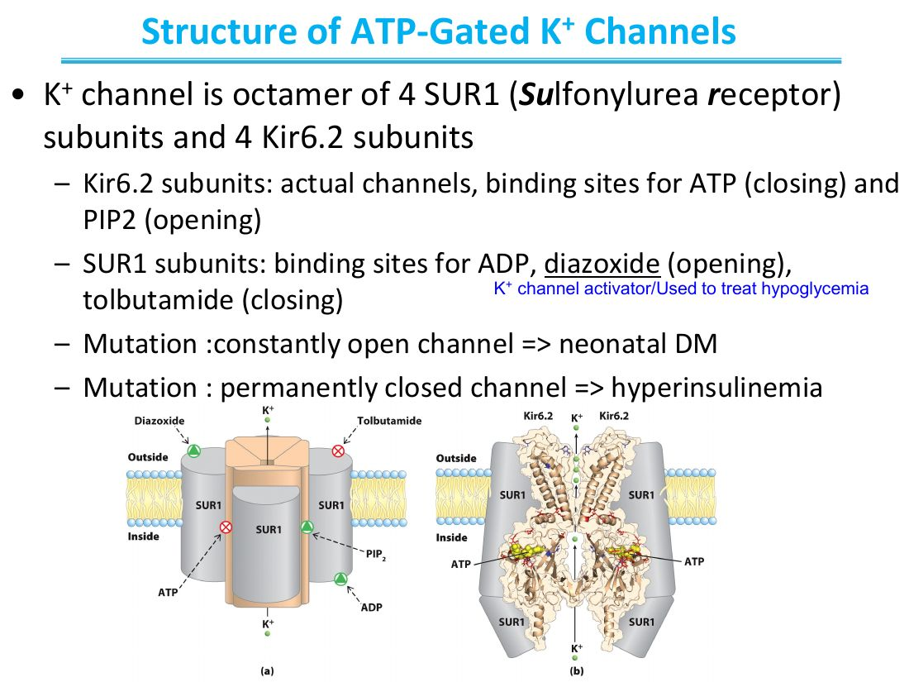
Structure of ATP-Gated K+ Channels
ATP 개폐 K⁺ 채널의 구조
K+ channel is octamer of 4 SUR1 (Sulfonylurea receptor) subunits and 4 Kir6.2 subunits
K⁺ 채널은 SUR1(설포닐유레아 수용체) 소단위 4개와 Kir6.2 소단위 4개로 된 팔량체이다
Kir6.2 subunits: actual channels, binding sites for ATP (closing) and PIP2 (opening)
Kir6.2 소단위: 실제 채널이며, ATP(닫힘)와 PIP₂(열림)의 결합 부위가 있다
SUR1 subunits: binding sites for ADP, diazoxide (opening), tolbutamide (closing)
SUR1 소단위: ADP, 다이아족사이드(열림), 톨부타마이드(닫힘)의 결합 부위가 있다
K+ channel activator/Used to treat hypoglycemia
(다이아족사이드 메모) K⁺ 채널 활성화제 / 저혈당 치료에 쓰인다
Mutation : constantly open channel => neonatal DM
돌연변이: 항상 열려 있는 채널 ⇒ 신생아 당뇨병
Mutation : permanently closed channel => hyperinsulinemia
돌연변이: 영구적으로 닫힌 채널 ⇒ 고인슐린혈증
(a) Diazoxide / Tolbutamide / Outside / Inside / SUR1 / ATP / PIP2 / ADP / K+
(a) 다이아족사이드 / 톨부타마이드 / 세포 밖 / 세포 안 / SUR1 / ATP / PIP₂ / ADP / 칼륨 이온
(b) Kir6.2 / K+ / Outside / SUR1 / Inside / ATP
(b) Kir6.2 / 칼륨 이온 / 세포 밖 / SUR1 / 세포 안 / ATP
기출 2건 형광펜 = 실제로 물어본 문장20232022202120192017 퀴즈2016
(2023) β세포 틀린 것 — 간에서 GLUT2 / Kir6.2에 GTP, SUR에 GDP 결합 / diazoxide는 인슐린 민감성을 높임 / Ca²⁺ 증가가 프로인슐린 → 성숙 인슐린 / 1세대 tolbutamide · (2021) 인슐린 분비가 올라가는 과정이 아닌 것 — 포도당 → G6P / K⁺ 통로 닫힘 / ATP↑ / Ca²⁺↑ · (2019·2017·2016) 설포닐유레아·K_ATP 틀린 것 — SUR1에 결합 / tolbutamide 1세대 / glyburide 2세대(2017: diazoxide 2세대) / ATP와 경쟁하지 않음 / 1·2형 당뇨 모두 치료
정답·포인트 Kir6.2 = ATP(닫힘)·PIP₂(열림), SUR1 = ADP·diazoxide(열림)·tolbutamide(닫힘) → GTP/GDP 보기는 틀림. diazoxide = K⁺ 통로 활성제 → 분비 억제, 저혈당 치료(민감성 ↑ X, 2세대 약 X). 1세대 = tolbutamide, 2세대 = glyburide·glipizide·glimepiride. 설포닐유레아는 2형 당뇨 치료(β세포가 남아 있어야 함 → 1·2형 모두 X). 팔량체 = SUR1 ×4 + Kir6.2 ×4.
2022레닌저 연습문제단답·서술
[서술, 레닌저 23장 연습문제] Aguilar-Bryan 등(1995)이 방사성 아이오딘 표지 glyburide(SUR에 Kd < 10 nM)를 이용해 SUR을 순수 분리·클로닝한 과정 — 클로닝한 유전자가 정말 SUR 유전자임을 어떻게 확인하나?
정답·포인트 핵심: glyburide가 SUR1에 고친화도로 결합한다는 점(슬라이드 39·40)을 이용해 표지된 140~170 kDa 단백질을 추적·정제 → 아미노산 서열 → 유전자 클로닝 → 발현시켜 glyburide 결합·K_ATP 기능 확인.
시험 포인트K_ATP = SUR1×4 + Kir6.2×4 (팔량체). Kir6.2 = 구멍, ATP(닫힘)·PIP₂(열림). SUR1 = ADP·다이아족사이드(열림), 톨부타마이드(닫힘). 항상 열림 → 신생아 당뇨, 항상 닫힘 → 고인슐린혈증.
그림 해설·더 깊이까지 보기 →슬라이드 40설포닐유레아 약물기출 2원문·번역
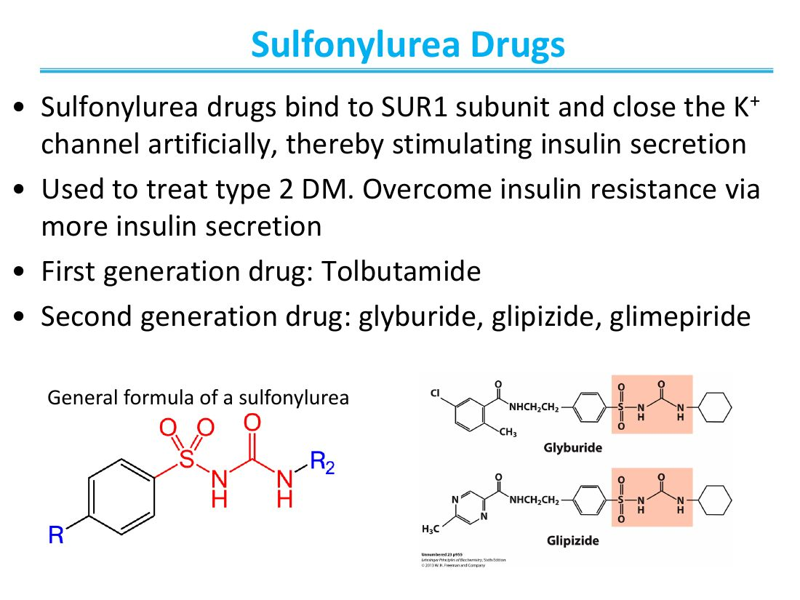
Sulfonylurea Drugs
설포닐유레아 약물
Sulfonylurea drugs bind to SUR1 subunit and close the K+ channel artificially, thereby stimulating insulin secretion
설포닐유레아 약물은 SUR1 소단위에 결합하여 K⁺ 채널을 인위적으로 닫고, 그로써 인슐린 분비를 촉진한다
Used to treat type 2 DM. Overcome insulin resistance via more insulin secretion
2형 당뇨병 치료에 쓰인다. 더 많은 인슐린 분비를 통해 인슐린 저항성을 극복한다
First generation drug: Tolbutamide
1세대 약물: 톨부타마이드
Second generation drug: glyburide, glipizide, glimepiride
2세대 약물: 글리부라이드, 글리피자이드, 글리메피리드
General formula of a sulfonylurea / R / R2 / Glyburide / Glipizide
설포닐유레아의 일반 구조식 / R(치환기) / R₂(치환기) / 글리부라이드 / 글리피자이드
시험 포인트설포닐유레아 = SUR1 결합 → K_ATP 닫힘 → 인슐린 분비↑, 2형 당뇨. 1세대 톨부타마이드, 2세대 글리부라이드·글리피자이드·글리메피리드.
그림 해설·더 깊이까지 보기 →슬라이드 41글루카곤은 혈당을 올린다 (표 23-5)기출 2TB 2원문·번역

Glucagon raises blood glucose
글루카곤은 혈당을 올린다
Works via cAMP-mediated cascades
cAMP 매개 연쇄 반응을 통해 작용한다
glycogen breakdown in liver: activates glycogen phosphorylase, inactivates glycogen synthase by reducing [Fructose 2,6-BP] which is an inhibitor of gluconeogenic enzyme, fructose 1,6-bisphosphatase, and activator of glycolytic enzyme, phosphofructokinase-1
간에서의 글리코젠 분해: 글리코젠 가인산분해효소를 활성화하고 글리코젠 합성효소를 불활성화한다. [과당 2,6-이인산]을 감소시키는데, 이것은 포도당 신생합성 효소인 과당 1,6-이인산가수분해효소의 억제제이자 해당과정 효소인 포스포프럭토키네이스-1의 활성화제이다
Inhibits pyruvate kinase, thereby preventing the conversion of phosphoenolpyruvate into acetyl-CoA. The accumulated phosphoenolpyruvate favors gluconeogenesis
피루브산 키네이스를 억제하여 포스포엔올피루브산이 아세틸-CoA로 전환되는 것을 막는다. 쌓인 포스포엔올피루브산은 포도당 신생합성 쪽으로 유리하게 작용한다
Stimulates PEP carboxykinase for gluconeogenesis
포도당 신생합성을 위해 PEP 카복시키네이스를 촉진한다
=> Enable liver to make and export glucose into blood
⇒ 간이 포도당을 만들어 혈액으로 내보낼 수 있게 한다
(Table 23-5) Effects of Glucagon on Blood Glucose: Production and Release of Glucose by the Liver
(표 23-5) 혈당에 대한 글루카곤의 효과: 간에 의한 포도당 생산과 방출
Metabolic effect / Effect on glucose metabolism / Target enzyme
대사 효과 / 포도당 대사에 미치는 영향 / 표적 효소
↑ Glycogen breakdown (liver) / Glycogen → glucose / ↑ Glycogen phosphorylase
↑ 글리코젠 분해(간) / 글리코젠 → 포도당 / ↑ 글리코젠 가인산분해효소
↓ Glycogen synthesis (liver) / Less glucose stored as glycogen / ↓ Glycogen synthase
↓ 글리코젠 합성(간) / 글리코젠으로 저장되는 포도당 감소 / ↓ 글리코젠 합성효소
↓ Glycolysis (liver) / Less glucose used as fuel in liver / ↓ PFK-1
↓ 해당과정(간) / 간에서 연료로 쓰이는 포도당 감소 / ↓ PFK-1
↑ Gluconeogenesis (liver) / Amino acids, Glycerol, Oxaloacetate → glucose / ↑ FBPase-2, ↓ Pyruvate kinase, ↑ PEP carboxykinase
↑ 포도당 신생합성(간) / 아미노산·글리세롤·옥살로아세트산 → 포도당 / ↑ FBPase-2, ↓ 피루브산 키네이스, ↑ PEP 카복시키네이스
↑ Fatty acid mobilization (adipose tissue) / Less glucose used as fuel by liver, muscle / ↑ Hormone-sensitive lipase, ↑ PKA (perilipin–P)
↑ 지방산 동원(지방조직) / 간·근육이 연료로 쓰는 포도당 감소 / ↑ 호르몬 민감성 리파아제, ↑ PKA(페릴리핀 인산화)
↑ Ketogenesis / Provides alternative to glucose as energy source for brain / ↓ Acetyl-CoA carboxylase
↑ 케톤체 생성 / 뇌의 에너지원으로 포도당 대안을 제공 / ↓ 아세틸-CoA 카복실화효소
기출 2건 · 테스트뱅크 2건 형광펜 = 실제로 물어본 문장20192017 퀴즈2016
글루카곤에 의해 활성화되지 않는 효소 / 글루카곤의 결과가 아닌 것 — PKA / HSL / PEP carboxykinase / pyruvate kinase / acetyl-CoA carboxylase / PFK-1 / glycogen phosphorylase · (2016) F26BP 감소 / PK 억제 / perilipin 탈인산화 / 글리코겐 포스포릴레이스 촉진 / ACC 억제
정답·포인트 글루카곤 = 피루브산 키네이스·ACC·PFK-1·글리코겐 합성효소를 억제, 글리코겐 포스포릴레이스·PEPCK·FBPase-2·HSL을 활성. 지방조직에서는 페릴리핀을 인산화(탈인산화 X).
TB 23-19
혈당이 비정상적으로 낮을 때, 췌장은 다음을 분비한다:
- A 에피네프린
- B 글루카곤
- C 포도당
- D 인슐린
- E 트립신
정답·포인트 B 글루카곤 — 저혈당 → 췌장 α세포에서 글루카곤 분비 → 간 글리코겐 분해·포도당신생 촉진 → 혈당 상승. 에피네프린은 부신수질에서 분비.
TB 23-37단답·서술
[서술] 에피네프린, 글루카곤, 인슐린이 포도당 대사에 미치는 효과를 일반적인 관점에서 비교하라.
정답·포인트 에피네프린과 글루카곤은 혈당 수준을 증가시킨다. 에피네프린은 정상보다 높은 포도당 수준이 필요할 때 작용하고, 글루카곤은 포도당 수준이 비정상적으로 낮을 때 작용한다. 둘 다 포도당신생과 글리코겐 분해를 촉진하고, 해당과정과 글리코겐 합성은 감소시킨다. 인슐린은 혈당 수준을 감소시킨다; 글리코겐 합성, 해당과정, 세포의 포도당 흡수를 증가시키고 글리코겐 분해를 감소시킴으로써 작용한다.
시험 포인트글루카곤 = cAMP–PKA. 간: 가인산분해효소↑, 글리코젠 합성효소↓, F2,6BP↓(PFK-1↓, FBPase-1↑), 피루브산 키네이스↓, PEPCK↑ → 포도당 수출. 지방: HSL↑·페릴리핀 인산화. 케톤 생성↑(ACC↓).
그림 해설·더 깊이까지 보기 →슬라이드 42글루카곤은 지방조직에 작용해 뇌를 위해 포도당을 아낀다기출 1원문·번역
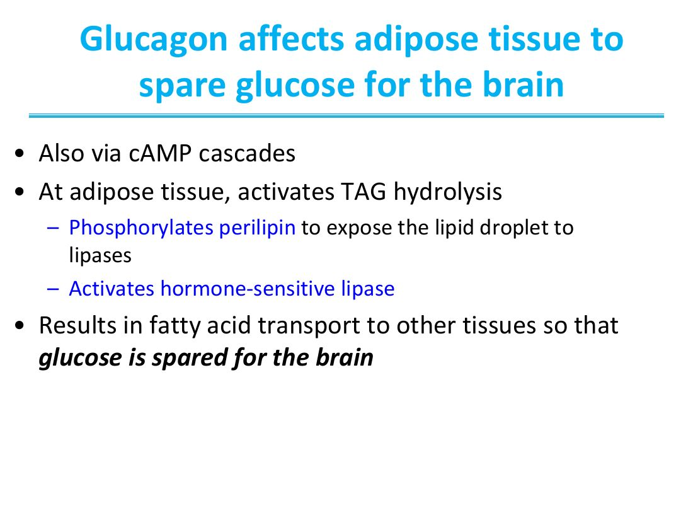
Glucagon affects adipose tissue to spare glucose for the brain
글루카곤은 지방조직에 작용하여 뇌를 위해 포도당을 아낀다
Also via cAMP cascades
(지방조직에서도) 역시 cAMP 연쇄 반응을 통해
At adipose tissue, activates TAG hydrolysis
지방조직에서 TAG 가수분해를 활성화한다
Phosphorylates perilipin to expose the lipid droplet to lipases
페릴리핀을 인산화하여 지방 방울을 리파아제에 노출시킨다
Activates hormone-sensitive lipase
호르몬 민감성 리파아제를 활성화한다
Results in fatty acid transport to other tissues so that glucose is spared for the brain
그 결과 지방산이 다른 조직으로 운반되어, 포도당은 뇌를 위해 아껴진다
시험 포인트지방조직에서 글루카곤 → cAMP → 페릴리핀 인산화 + HSL 활성 → 지방산 수출 → 뇌를 위해 포도당 절약.
그림 해설·더 깊이까지 보기 →7
공복·에피네프린·코르티솔·당뇨병
슬라이드 43–50
처음이라면 · 큰 그림부터
굶는 시간이 길어질수록 꺼내 쓰는 창고가 바뀌어요. 처음 하루쯤은 간 글리코젠을 풀어 혈당을 지키지만, 이 창고는 작아서 금방 바닥나요. 그다음부터는 근육 단백질을 분해한 아미노산으로 간이 포도당을 만들고, 지방조직에서 나온 지방산을 태우고, 간은 케톤체를 만들어 뇌에 보내요. 며칠이 지나 뇌가 케톤체를 많이 쓰게 되면 포도당 수요가 줄어 단백질 분해도 줄어요. 지방이 많을수록 오래 버티는 이유가 여기 있어요.
에피네프린과 코르티솔은 둘 다 스트레스 호르몬이지만 속도가 달라요. 에피네프린은 위급 상황용 순간 대응이에요. 몇 초 안에 글리코젠을 풀고 심장을 빨리 뛰게 하고 지방을 분해해 연료를 쏟아내요. 코르티솔은 장기전용이에요. 몇 시간에 걸쳐 근육 단백질 분해와 간의 포도당신생합성을 늘려 혈당을 오래 받쳐 줘요.
당뇨병은 인슐린 신호가 고장 난 병이에요. 1형은 β세포가 파괴되어 인슐린이 아예 없고, 2형은 인슐린은 있는데 조직이 잘 반응하지 않아요. 어느 쪽이든 세포는 혈당이 높은데도 "굶는 중"으로 착각해서 지방을 태우고 케톤체를 쌓고, 넘친 포도당은 소변으로 빠져나가요.
흐름 한 줄
공복 초기: 간 글리코젠→수일: 근육 단백질 → 포도당 + 지방산 연소→장기 공복: 케톤체가 뇌의 주 연료
이 단원에서 처음 나오는 말
- 연료 저장고
- 글리코젠(작고 빨리 꺼냄), 지방조직 TAG(가장 큼), 조직 단백질(쓰면 기능이 손상됨).
- 1형 · 2형 당뇨병
- 1형은 인슐린 결핍(β세포 파괴, 주로 어릴 때), 2형은 인슐린 저항성에서 시작(주로 비만과 연관).
- 케톤산증
- 케톤체가 혈액에 너무 많이 쌓여 혈액이 산성으로 기우는 상태. 치료 안 된 1형 당뇨에서 위험해요.
여기부터 자세히
- 연료 저장고 3개: 간·근육 글리코젠(약 0.23 kg, 900 kcal), 지방조직 TAG(대부분), 조직 단백질.
- 70 kg 남성 약 3개월, 140 kg 남성 약 14개월 생존(표 23-6).
공복 시간별 연료
식후 2시간
간 글리코젠식후 4시간
지방 TAG 동원장기 공복
근육 단백질 → 포도당신생
지방산 → 케톤체
장기 공복에선 간이 OAA를 포도당 만드는 데 써버려서 TCA가 멈추고 → 아세틸-CoA가 쌓여 → 케톤체 → 뇌의 주 연료. 넘치면 소변으로. 그래프로 보면 혈당은 이틀 만에 조금 떨어진 뒤 버티고, 2~4일째부터 β-하이드록시뷰티르산이 폭발적으로 올라 혈당보다 높아져요. 아세톤은 대사 안 되고 날숨으로. 지방이 바닥나면 필수 단백질을 깨기 시작해요. 1형 당뇨는 인슐린이 없어서 이 '굶는 그림'이 그대로 나타나요.
에피네프린 vs 코르티솔
| 에피네프린 | 코르티솔 |
|---|
| 성격 | 투쟁-도피, 즉각 | 스트레스, 느림 |
| 방식 | cAMP 의존 인산화(효소 활성) | 효소의 종류와 양(유전자 발현) |
| 생리 | 심박·혈압·기도 확장↑ → 근육 O₂↑ | – |
| 간 | 글리코젠 분해↑, 합성↓, 포도당신생↑ | PEPCK 합성↑ |
| 근육 | 글리코젠 → 젖산(해당 ATP↑) | 단백질 분해(→간 포도당신생) |
| 지방 | HSL → 지방산 동원 | 지방산·글리세롤 방출↑ |
| 췌장 | 글루카곤↑ 인슐린↓ | – |
코르티솔이 계속 나오면 '부신 피로' → 뼈·근육·면역·다른 호르몬 기능 손상.
당뇨병의 두 형태와 증상
1형(IDDM) = 자가면역으로 β세포 파괴, 어릴 때. 2형(NIDDM) = 성인 후기, 비만, 인슐린 저항성. 둘 다 혈당↑ → 포도당 희석하려고 다뇨·다갈. 포도당을 못 쓰니 지방산을 태우는데, β산화가 NADH를 너무 많이 만들어(NADH/NAD⁺↑) TCA가 막혀 → 아세틸-CoA↑ → 케톤체 과잉 → 케톤산증(혈중 H⁺↑), 아세톤은 날숨. 포도당 내성 검사: 포도당 100 g 먹고 정상은 9~10 mM, 당뇨는 훨씬 높이 올라 아주 천천히 내려와요.
이 단원 기출·테스트뱅크 4건 문제·정답은 슬라이드를 펼치거나 번역본에서- 2021TB 23-23 에피네프린 → PFK-1 활성 슬라이드 46
- TB 23-21 영양 상태가 좋은 사람에서 가장 큰 에너지 저장고는: 슬라이드 43
- TB 23-22 에피네프린 수치가 높아졌을 때 정상적으로 촉진되지 않는 것은? 슬라이드 46
- TB 23-38단답·서술 당신이 당뇨병이 있는 4세 남아의 식단을 짜는 책임을 맡았다고 하자. 탄수화물과 단… 슬라이드 49
이 단원 슬라이드 원문·번역 펼쳐서 보기
슬라이드 43장기 공복은 뇌에 연료를 주도록 대사를 바꾼다 (표 23-6)TB 1원문·번역
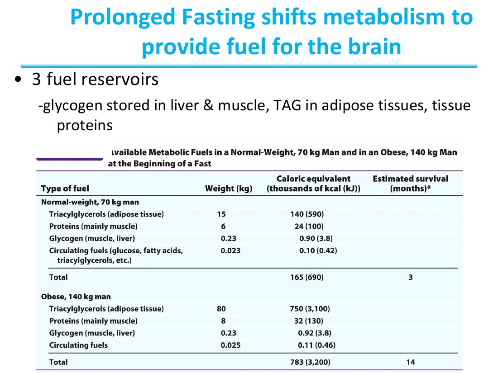
Prolonged Fasting shifts metabolism to provide fuel for the brain
장기 공복은 뇌에 연료를 공급하도록 대사를 전환한다
3 fuel reservoirs
3가지 연료 저장고
glycogen stored in liver & muscle, TAG in adipose tissues, tissue proteins
간과 근육에 저장된 글리코젠, 지방조직의 TAG, 조직 단백질
(Table 23-6) Available Metabolic Fuels in a Normal-Weight, 70 kg Man and in an Obese, 140 kg Man at the Beginning of a Fast
(표 23-6) 공복 시작 시점에 보통 체중 70 kg 남성과 비만 140 kg 남성이 쓸 수 있는 대사 연료
Type of fuel / Weight (kg) / Caloric equivalent (thousands of kcal (kJ)) / Estimated survival (months)*
연료 종류 / 무게(kg) / 열량 환산(천 kcal (kJ)) / 추정 생존 기간(개월)*
Normal-weight, 70 kg man
보통 체중 70 kg 남성
Triacylglycerols (adipose tissue) / 15 / 140 (590)
트라이아실글리세롤(지방조직) / 15 kg / 14만 kcal (590 kJ×10³)
Proteins (mainly muscle) / 6 / 24 (100)
단백질(주로 근육) / 6 kg / 2.4만 kcal (100)
Glycogen (muscle, liver) / 0.23 / 0.90 (3.8)
글리코젠(근육, 간) / 0.23 kg / 900 kcal (3.8)
Circulating fuels (glucose, fatty acids, triacylglycerols, etc.) / 0.023 / 0.10 (0.42)
순환 연료(포도당, 지방산, TAG 등) / 0.023 kg / 100 kcal (0.42)
Total / 165 (690) / 3
합계 / 16.5만 kcal (690) / 3개월
Obese, 140 kg man
비만 140 kg 남성
Triacylglycerols (adipose tissue) / 80 / 750 (3,100)
트라이아실글리세롤(지방조직) / 80 kg / 75만 kcal (3,100)
Proteins (mainly muscle) / 8 / 32 (130)
단백질(주로 근육) / 8 kg / 3.2만 kcal (130)
Glycogen (muscle, liver) / 0.23 / 0.92 (3.8)
글리코젠(근육, 간) / 0.23 kg / 920 kcal (3.8)
Circulating fuels / 0.025 / 0.11 (0.46)
순환 연료 / 0.025 kg / 110 kcal (0.46)
Total / 783 (3,200) / 14
합계 / 78.3만 kcal (3,200) / 14개월
테스트뱅크 1건 형광펜 = 실제로 물어본 문장TB 23-21
영양 상태가 좋은 사람에서 가장 큰 에너지 저장고는:
- A 모든 조직의 ATP
- B 혈당
- C 간 글리코겐
- D 근육 글리코겐
- E 지방조직의 트라이아실글리세롤
정답·포인트 E 지방조직의 트라이아실글리세롤 — 70kg 성인 기준 지방조직 TAG ≈ 15kg(약 565,000 kJ)로 압도적. 글리코겐은 수백 g 수준.
시험 포인트연료 창고 3개(글리코젠·TAG·단백질). 저장 에너지의 대부분 = TAG. 70 kg → 3개월, 140 kg → 14개월. 글리코젠 약 0.23 kg / 900 kcal.
그림 해설·더 깊이까지 보기 →슬라이드 44장기 공복 또는 1형 당뇨에서의 연료 대사 (그림 23-30)원문·번역
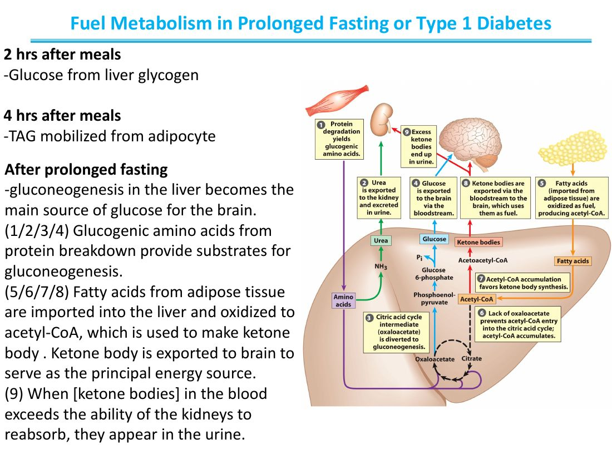
Fuel Metabolism in Prolonged Fasting or Type 1 Diabetes
장기 공복 또는 1형 당뇨병에서의 연료 대사
Glucose from liver glycogen
간 글리코젠에서 온 포도당
TAG mobilized from adipocyte
지방세포에서 동원된 TAG
After prolonged fasting
장기 공복 후
gluconeogenesis in the liver becomes the main source of glucose for the brain.
간의 포도당 신생합성이 뇌를 위한 포도당의 주 공급원이 된다.
(1/2/3/4) Glucogenic amino acids from protein breakdown provide substrates for gluconeogenesis.
(1/2/3/4) 단백질 분해에서 나온 포도당 생성 아미노산이 포도당 신생합성의 기질을 제공한다.
(5/6/7/8) Fatty acids from adipose tissue are imported into the liver and oxidized to acetyl-CoA, which is used to make ketone body. Ketone body is exported to brain to serve as the principal energy source.
(5/6/7/8) 지방조직에서 온 지방산이 간으로 들어가 아세틸-CoA로 산화되고, 이것이 케톤체를 만드는 데 쓰인다. 케톤체는 뇌로 수출되어 주 에너지원 역할을 한다.
(9) When [ketone bodies] in the blood exceeds the ability of the kidneys to reabsorb, they appear in the urine.
(9) 혈중 [케톤체]가 신장의 재흡수 능력을 넘으면 소변에 나타난다.
① Protein degradation yields glucogenic amino acids.
① 단백질 분해로 포도당 생성 아미노산이 생긴다.
② Urea is exported to the kidney and excreted in urine.
② 요소는 신장으로 수출되어 소변으로 배설된다.
③ Citric acid cycle intermediate (oxaloacetate) is diverted to gluconeogenesis.
③ 시트르산 회로 중간체(옥살로아세트산)가 포도당 신생합성으로 빠져나간다.
④ Glucose is exported to the brain via the bloodstream.
④ 포도당은 혈류를 통해 뇌로 수출된다.
⑤ Fatty acids (imported from adipose tissue) are oxidized as fuel, producing acetyl-CoA.
⑤ (지방조직에서 들여온) 지방산이 연료로 산화되어 아세틸-CoA를 만든다.
⑥ Lack of oxaloacetate prevents acetyl-CoA entry into the citric acid cycle; acetyl-CoA accumulates.
⑥ 옥살로아세트산이 부족해 아세틸-CoA가 시트르산 회로로 들어가지 못하고, 아세틸-CoA가 쌓인다.
⑦ Acetyl-CoA accumulation favors ketone body synthesis.
⑦ 아세틸-CoA가 쌓이면 케톤체 합성이 유리해진다.
⑧ Ketone bodies are exported via the bloodstream to the brain, which uses them as fuel.
⑧ 케톤체는 혈류를 통해 뇌로 수출되고, 뇌는 이를 연료로 쓴다.
⑨ Excess ketone bodies end up in urine.
⑨ 남는 케톤체는 결국 소변으로 나간다.
Amino acids / NH3 / Urea / Pi / Glucose 6-phosphate / Glucose / Phosphoenolpyruvate / Oxaloacetate / Citrate / Acetyl-CoA / Acetoacetyl-CoA / Ketone bodies / Fatty acids
아미노산 / 암모니아 / 요소 / 무기인산 / 포도당 6-인산 / 포도당 / 포스포엔올피루브산 / 옥살로아세트산 / 시트르산 / 아세틸-CoA / 아세토아세틸-CoA / 케톤체 / 지방산
시험 포인트식후 2시간 = 간 글리코젠, 4시간 = TAG 동원, 장기 공복 = 간 포도당신생(근육 단백질) + 케톤체(뇌 주연료). 원인 = OAA 부족. 케톤체 넘치면 소변(신장 재흡수 한계 초과). 1형 당뇨도 같음.
그림 해설·더 깊이까지 보기 →슬라이드 451주(~40일) 공복 동안 혈장 지방산·포도당·케톤체 농도 (그림 23-31)기출 1원문·번역
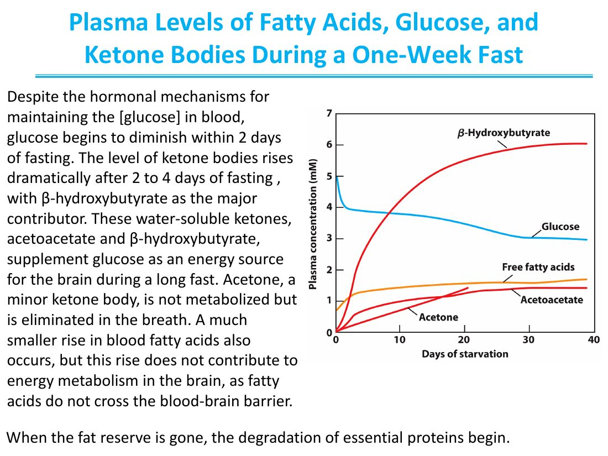
Plasma Levels of Fatty Acids, Glucose, and Ketone Bodies During a One-Week Fast
1주 공복 동안 혈장의 지방산, 포도당, 케톤체 농도
Despite the hormonal mechanisms for maintaining the [glucose] in blood, glucose begins to diminish within 2 days of fasting.
혈중 [포도당]을 유지하는 호르몬 기전이 있음에도, 공복 2일 이내에 포도당이 줄기 시작한다.
The level of ketone bodies rises dramatically after 2 to 4 days of fasting, with β-hydroxybutyrate as the major contributor.
공복 2~4일 후 케톤체 수준이 극적으로 상승하며, β-하이드록시뷰티르산이 가장 큰 비중을 차지한다.
These water-soluble ketones, acetoacetate and β-hydroxybutyrate, supplement glucose as an energy source for the brain during a long fast.
이 수용성 케톤인 아세토아세트산과 β-하이드록시뷰티르산은 오랜 공복 동안 뇌의 에너지원으로서 포도당을 보충한다.
Acetone, a minor ketone body, is not metabolized but is eliminated in the breath.
소량의 케톤체인 아세톤은 대사되지 않고 날숨으로 배출된다.
A much smaller rise in blood fatty acids also occurs, but this rise does not contribute to energy metabolism in the brain, as fatty acids do not cross the blood-brain barrier.
혈중 지방산도 훨씬 적게나마 상승하지만, 지방산은 혈뇌장벽을 넘지 못하므로 이 상승은 뇌의 에너지 대사에 기여하지 않는다.
When the fat reserve is gone, the degradation of essential proteins begin.
지방 저장고가 바닥나면 필수 단백질의 분해가 시작된다.
Plasma concentration (mM) 0~7 / Days of starvation 0, 10, 20, 30, 40 / β-Hydroxybutyrate / Glucose / Free fatty acids / Acetoacetate / Acetone
혈장 농도(mM) 0~7 / 기아 일수 0, 10, 20, 30, 40일 / β-하이드록시뷰티르산 / 포도당 / 유리 지방산 / 아세토아세트산 / 아세톤
시험 포인트공복 2일 내 혈당↓(조금), 2~4일 후 케톤체 급상승(주역 = β-하이드록시뷰티르산). 수용성 케톤 2개(아세토아세트산·β-HB) = 뇌 연료, 아세톤 = 대사 안 됨, 날숨 배출. 지방산은 BBB 통과 불가. 지방 바닥 → 필수 단백질 분해.
그림 해설·더 깊이까지 보기 →슬라이드 46에피네프린은 임박한 활동을 알린다 (표 23-6)기출 1TB 2원문·번역
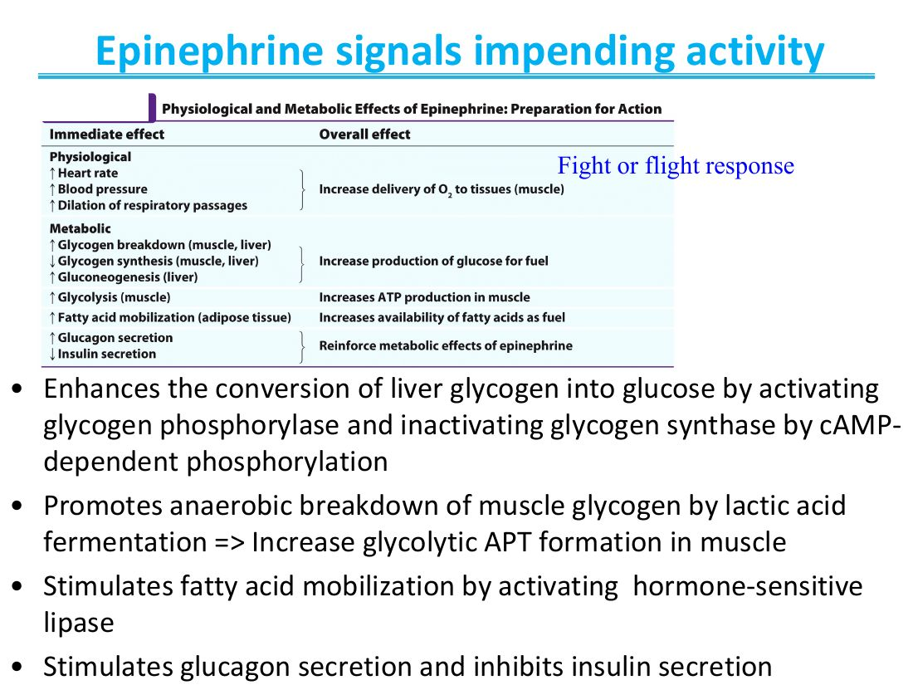
Epinephrine signals impending activity
에피네프린은 임박한 활동을 알린다
Physiological and Metabolic Effects of Epinephrine: Preparation for Action
에피네프린의 생리적·대사적 효과: 행동을 위한 준비
Immediate effect / Overall effect
즉각적 효과 / 전체적 효과
Physiological: ↑ Heart rate, ↑ Blood pressure, ↑ Dilation of respiratory passages / Increase delivery of O2 to tissues (muscle)
생리적: ↑ 심박수, ↑ 혈압, ↑ 기도 확장 / 조직(근육)으로의 O₂ 전달 증가
Metabolic: ↑ Glycogen breakdown (muscle, liver), ↓ Glycogen synthesis (muscle, liver), ↑ Gluconeogenesis (liver) / Increase production of glucose for fuel
대사적: ↑ 글리코젠 분해(근육, 간), ↓ 글리코젠 합성(근육, 간), ↑ 포도당 신생합성(간) / 연료용 포도당 생산 증가
↑ Glycolysis (muscle) / Increases ATP production in muscle
↑ 해당과정(근육) / 근육의 ATP 생산 증가
↑ Fatty acid mobilization (adipose tissue) / Increases availability of fatty acids as fuel
↑ 지방산 동원(지방조직) / 연료로서 지방산의 이용 가능성 증가
↑ Glucagon secretion, ↓ Insulin secretion / Reinforce metabolic effects of epinephrine
↑ 글루카곤 분비, ↓ 인슐린 분비 / 에피네프린의 대사 효과를 강화
Fight or flight response
투쟁-도피 반응
Enhances the conversion of liver glycogen into glucose by activating glycogen phosphorylase and inactivating glycogen synthase by cAMP-dependent phosphorylation
cAMP 의존성 인산화로 글리코젠 가인산분해효소를 활성화하고 글리코젠 합성효소를 불활성화하여, 간 글리코젠이 포도당으로 전환되는 것을 촉진한다
Promotes anaerobic breakdown of muscle glycogen by lactic acid fermentation => Increase glycolytic ATP formation in muscle
젖산 발효로 근육 글리코젠의 무산소 분해를 촉진한다 ⇒ 근육에서 해당과정에 의한 ATP 생성 증가
Stimulates fatty acid mobilization by activating hormone-sensitive lipase
호르몬 민감성 리파아제를 활성화하여 지방산 동원을 촉진한다
Stimulates glucagon secretion and inhibits insulin secretion
글루카곤 분비를 촉진하고 인슐린 분비를 억제한다
기출 1건 · 테스트뱅크 2건 형광펜 = 실제로 물어본 문장2021TB 23-23
Epinephrine triggers an increased rate of glycolysis in muscle by: hexokinase 활성 / PFK-1 활성 / 포스포릴레이스 a → b / 코리 회로 억제 / 파스퇴르 효과
정답·포인트 PFK-1 활성화(cAMP → F2,6BP↑).
TB 23-22
에피네프린 수치가 높아졌을 때 정상적으로 촉진되지 않는 것은?
- A 지방조직에서의 지방산 동원
- B 간에서의 포도당신생
- C 근육에서의 글리코겐 분해
- D 간에서의 글리코겐 합성
- E 근육에서의 해당과정
정답·포인트 D 간에서의 글리코겐 합성 — 에피네프린은 '싸움-도피' 호르몬: 연료 동원(지방 분해, 글리코겐 분해, 포도당신생)과 근육 해당과정을 촉진. 글리코겐 '합성'은 오히려 억제된다.
시험 포인트에피네프린 = 투쟁-도피. 생리: 심박·혈압·기도 확장↑. 대사: 간·근육 글리코젠 분해(cAMP 의존 인산화), 근육 젖산 발효, HSL 지방 동원, 글루카곤↑ 인슐린↓.
그림 해설·더 깊이까지 보기 →슬라이드 47코르티솔은 저혈당을 포함한 스트레스를 알린다원문·번역
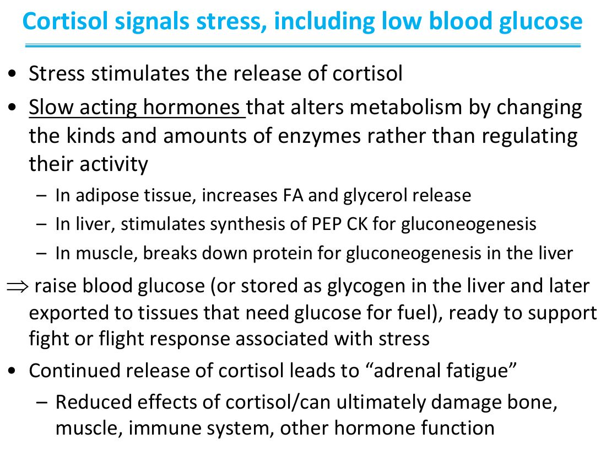
Cortisol signals stress, including low blood glucose
코르티솔은 낮은 혈당을 포함한 스트레스를 알린다
Stress stimulates the release of cortisol
스트레스는 코르티솔 분비를 자극한다
Slow acting hormones that alters metabolism by changing the kinds and amounts of enzymes rather than regulating their activity
느리게 작용하는 호르몬으로, 효소의 활성을 조절하기보다 효소의 종류와 양을 바꿈으로써 대사를 변화시킨다
In adipose tissue, increases FA and glycerol release
지방조직에서 지방산과 글리세롤 방출을 증가시킨다
In liver, stimulates synthesis of PEP CK for gluconeogenesis
간에서 포도당 신생합성을 위해 PEP 카복시키네이스의 합성을 촉진한다
In muscle, breaks down protein for gluconeogenesis in the liver
근육에서 간의 포도당 신생합성을 위해 단백질을 분해한다
⇒ raise blood glucose (or stored as glycogen in the liver and later exported to tissues that need glucose for fuel), ready to support fight or flight response associated with stress
⇒ 혈당을 올린다(또는 간에 글리코젠으로 저장되었다가 나중에 포도당을 연료로 필요로 하는 조직으로 수출된다). 스트레스와 관련된 투쟁-도피 반응을 지원할 준비를 한다
Continued release of cortisol leads to "adrenal fatigue"
코르티솔이 계속 분비되면 '부신 피로'로 이어진다
Reduced effects of cortisol/can ultimately damage bone, muscle, immune system, other hormone function
코르티솔 효과 감소 / 결국 뼈, 근육, 면역계, 다른 호르몬 기능을 손상시킬 수 있다
시험 포인트코르티솔 = 느림, 효소 양·종류를 바꿈(활성 조절 X). 지방: 지방산·글리세롤↑, 간: PEPCK 합성↑, 근육: 단백질 분해 → 혈당↑. 장기 분비 → 부신 피로, 뼈·근육·면역 손상.
그림 해설·더 깊이까지 보기 →슬라이드 48당뇨병의 두 형태TB 1원문·번역
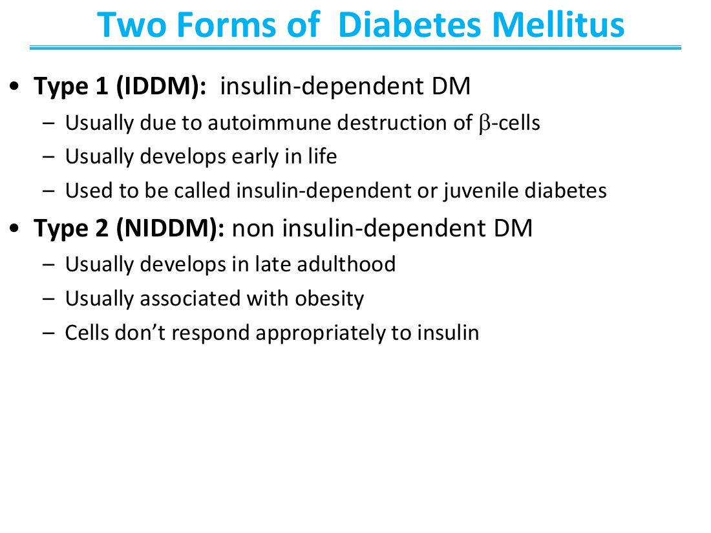
Two Forms of Diabetes Mellitus
당뇨병의 두 형태
Type 1 (IDDM): insulin-dependent DM
1형(IDDM): 인슐린 의존성 당뇨병
Usually due to autoimmune destruction of β-cells
보통 β세포의 자가면역 파괴 때문이다
Usually develops early in life
보통 생애 초기에 발병한다
Used to be called insulin-dependent or juvenile diabetes
예전에는 인슐린 의존성 당뇨병 또는 소아(청소년) 당뇨병이라 불렸다
Type 2 (NIDDM): non insulin-dependent DM
2형(NIDDM): 인슐린 비의존성 당뇨병
Usually develops in late adulthood
보통 성인 후기에 발병한다
Usually associated with obesity
보통 비만과 연관된다
Cells don't respond appropriately to insulin
세포가 인슐린에 적절히 반응하지 않는다
테스트뱅크 1건 형광펜 = 실제로 물어본 문장 시험 포인트1형(IDDM) = 자가면역 β세포 파괴, 어릴 때, 소아 당뇨. 2형(NIDDM) = 성인 후기, 비만, 인슐린 저항성.
그림 해설·더 깊이까지 보기 →슬라이드 49당뇨병의 증상TB 1원문·번역
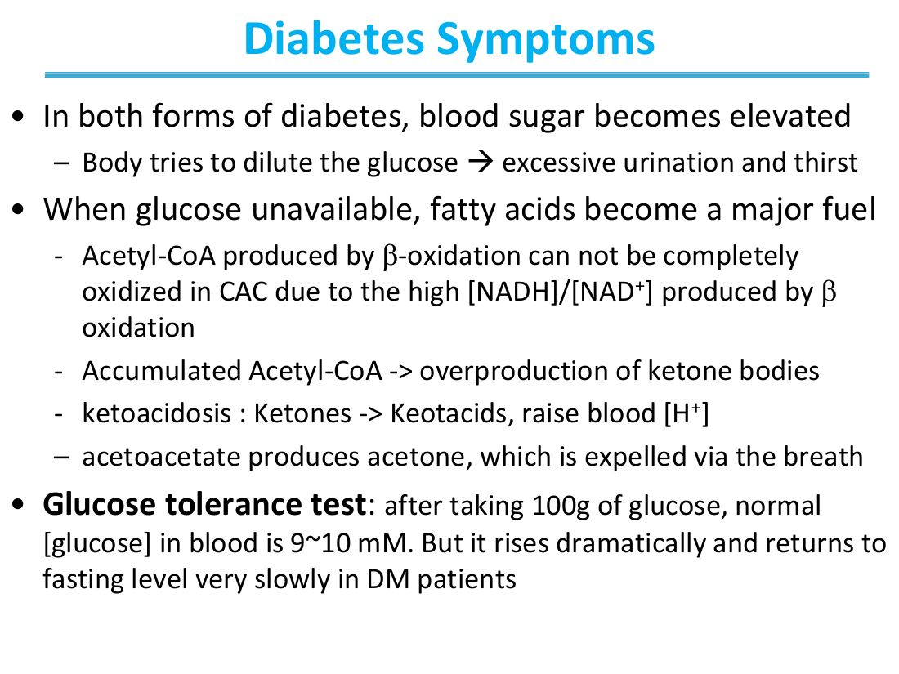
In both forms of diabetes, blood sugar becomes elevated
두 형태의 당뇨병 모두에서 혈당이 상승한다
Body tries to dilute the glucose → excessive urination and thirst
몸이 포도당을 희석하려 한다 → 과도한 배뇨와 갈증
When glucose unavailable, fatty acids become a major fuel
포도당을 쓸 수 없을 때 지방산이 주 연료가 된다
Acetyl-CoA produced by β-oxidation can not be completely oxidized in CAC due to the high [NADH]/[NAD+] produced by β oxidation
β산화로 만들어진 아세틸-CoA는 β산화가 만든 높은 [NADH]/[NAD⁺] 비율 때문에 시트르산 회로에서 완전히 산화되지 못한다
Accumulated Acetyl-CoA -> overproduction of ketone bodies
쌓인 아세틸-CoA → 케톤체 과잉 생산
ketoacidosis : Ketones -> Ketoacids, raise blood [H+]
케톤산증: 케톤 → 케토산, 혈중 [H⁺]를 높인다
acetoacetate produces acetone, which is expelled via the breath
아세토아세트산은 아세톤을 만들고, 아세톤은 날숨으로 배출된다
Glucose tolerance test: after taking 100g of glucose, normal [glucose] in blood is 9~10 mM. But it rises dramatically and returns to fasting level very slowly in DM patients
포도당 내성 검사: 포도당 100 g을 섭취한 뒤 정상인의 혈중 [포도당]은 9~10 mM이다. 그러나 당뇨병 환자에서는 극적으로 상승하고 공복 수준으로 매우 천천히 돌아온다
테스트뱅크 1건 형광펜 = 실제로 물어본 문장TB 23-38단답·서술
[서술] 당신이 당뇨병이 있는 4세 남아의 식단을 짜는 책임을 맡았다고 하자. 탄수화물과 단백질의 종류와 양을 어떻게 결정하겠는가? 혈액과 소변에서 어떤 화합물을 모니터링하겠으며, 그 이유는?
정답·포인트 성장 중인 아이는 새로운 단백질 합성에 필요한 필수 아미노산을 공급할 만큼 충분한 단백질, 그리고 에너지 요구를 충족하고 정상 혈당 수준을 유지할 만큼 충분한 탄수화물이 필요하다. 케톤산증으로 이어질 수 있는 과도한 탄수화물과 칼로리는 반드시 피해야 한다. 식이 섭취와 인슐린 사이의 올바른 균형을 찾기 위해, 혈액과 소변의 포도당 및 케톤체 수준을 모니터링해야 한다.
시험 포인트다뇨·다갈(포도당 희석). β산화 → NADH/NAD⁺↑ → TCA 정체 → 아세틸-CoA↑ → 케톤체 과잉 → 케톤산증. 아세톤 = 날숨. 포도당 내성 검사: 100 g 섭취 후 정상 9~10 mM, 당뇨는 급상승·느린 회복.
그림 해설·더 깊이까지 보기 →슬라이드 50β산화 4단계와 시트르산 회로 복습 (참고 그림)원문·번역
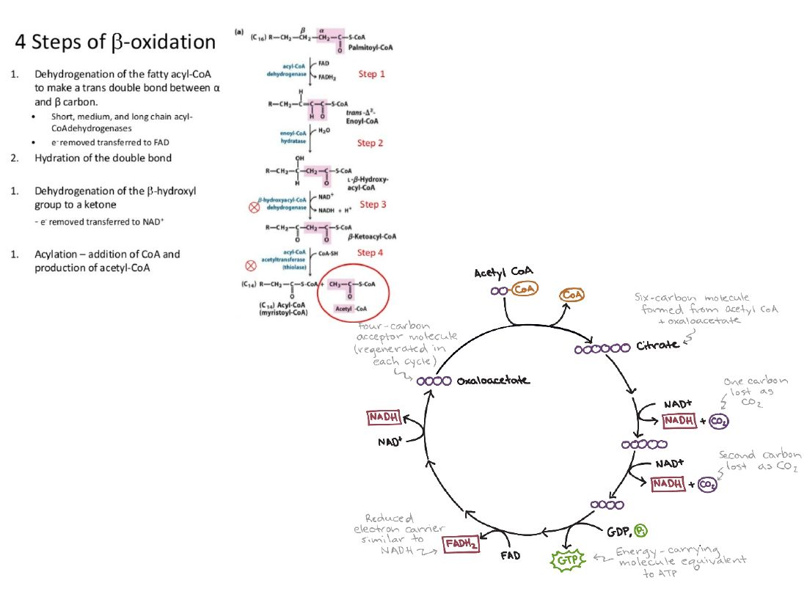
4 Steps of β-oxidation
β산화의 4단계
1. Dehydrogenation of the fatty acyl-CoA to make a trans double bond between α and β carbon.
1. 지방 아실-CoA를 탈수소화하여 α탄소와 β탄소 사이에 트랜스 이중결합을 만든다.
Short, medium, and long chain acyl-CoA dehydrogenases
짧은·중간·긴 사슬 아실-CoA 탈수소효소
e− removed transferred to FAD
제거된 전자는 FAD로 전달된다
2. Hydration of the double bond
2. 이중결합의 수화(물 첨가)
(3.) Dehydrogenation of the β-hydroxyl group to a ketone
(3.) β-하이드록시기를 케톤으로 탈수소화
e− removed transferred to NAD+
제거된 전자는 NAD⁺로 전달된다
(4.) Acylation – addition of CoA and production of acetyl-CoA
(4.) 아실화 – CoA 첨가와 아세틸-CoA 생성
(a) (C16) R–CH2–CH2–CH2–C(=O)–S-CoA Palmitoyl-CoA / β / α / acyl-CoA dehydrogenase / FAD / FADH2 / Step 1
(a) (C16) 팔미토일-CoA / β탄소 / α탄소 / 아실-CoA 탈수소효소 / FAD / FADH₂ / 1단계
trans-Δ2-Enoyl-CoA / enoyl-CoA hydratase / H2O / Step 2 / L-β-Hydroxyacyl-CoA
트랜스-Δ²-엔오일-CoA / 엔오일-CoA 수화효소 / 물 / 2단계 / L-β-하이드록시아실-CoA
β-hydroxyacyl-CoA dehydrogenase / NAD+ / NADH + H+ / Step 3 / β-Ketoacyl-CoA
β-하이드록시아실-CoA 탈수소효소 / NAD⁺ / NADH + H⁺ / 3단계 / β-케토아실-CoA
acyl-CoA acetyltransferase (thiolase) / CoA-SH / Step 4 / (C14) Acyl-CoA (myristoyl-CoA) / Acetyl-CoA
아실-CoA 아세틸기전이효소(싸이올레이스) / 조효소 A(CoA-SH) / 4단계 / (C14) 아실-CoA(미리스토일-CoA) / 아세틸-CoA
(TCA 손그림) Acetyl CoA / CoA / Citrate / Six-carbon molecule formed from acetyl CoA + oxaloacetate / NAD+ / NADH / CO2 / One carbon lost as CO2 / Second carbon lost as CO2 / GDP, Pi / GTP / Energy-carrying molecule equivalent to ATP / FAD / FADH2 / Reduced electron carrier similar to NADH / Oxaloacetate / Four-carbon acceptor molecule (regenerated in each cycle)
(TCA 손그림, 슬라이드 24와 같음) 아세틸-CoA / 조효소 A / 시트르산 / 아세틸-CoA + 옥살로아세트산으로 만든 탄소 6개 분자 / NAD⁺ / NADH / 이산화탄소 / 탄소 하나가 CO₂로 빠짐 / 두 번째 탄소가 CO₂로 빠짐 / GDP, 무기인산 / GTP / ATP와 동등한 에너지 운반 분자 / FAD / FADH₂ / NADH와 비슷한 환원된 전자 운반체 / 옥살로아세트산 / 탄소 4개짜리 수용체 분자(매 회전마다 재생)
시험 포인트β산화 4단계 순서와 효소: 탈수소(FAD) → 수화 → 탈수소(NAD⁺) → 싸이올 분해(CoA, 아세틸-CoA 방출). NADH↑·아세틸-CoA↑가 3·4단계 억제.
그림 해설·더 깊이까지 보기 →8
체중 조절: 렙틴·아디포넥틴·AMPK·PPAR·그렐린
슬라이드 51–71
처음이라면 · 큰 그림부터
체중이 꽤 일정하게 유지되는 건, 지방조직이 창고가 얼마나 찼는지를 뇌에 계속 보고하기 때문이에요. 그 보고서가 렙틴이에요. 지방이 늘면 렙틴이 늘고, 시상하부가 그걸 받아 식욕을 줄이고 에너지 소비를 늘려요. 지방이 줄면 렙틴이 줄어 배가 고파지고요. 몸이 정해 둔 지방량으로 돌아가려는 이 성질을 설정점이라고 불러요.
시상하부 활꼴핵에는 성격이 반대인 뉴런 두 무리가 있어요. 하나는 "먹어" 쪽(NPY/AgRP 뉴런), 하나는 "그만 먹어" 쪽(POMC 뉴런, α-MSH 분비). 렙틴과 인슐린은 "그만 먹어" 쪽을 켜고 "먹어" 쪽을 꺼요. 빈 위에서 나오는 그렐린은 "먹어" 쪽을 켜고, 식사 후 장에서 나오는 PYY₃₋₃₆은 식욕을 눌러요.
세포 안에도 연료 계기판이 있어요. AMPK는 AMP가 쌓일 때, 즉 에너지가 바닥날 때 켜져서 태우는 경로를 켜고 만드는 경로를 꺼요. mTORC1은 반대로 영양이 넉넉할 때 성장과 합성을 켜요. PPAR는 지방산 같은 물질을 받아 대사 유전자의 전사를 바꾸는 핵 수용체 가족이고, 지방세포 쪽(γ), 간·근육의 지방 연소 쪽(α, δ)으로 역할이 나뉘어요.
흐름 한 줄
지방↑→렙틴↑→시상하부: 식욕↓ · 소비↑→지방↓→렙틴↓→식욕↑ (설정점으로 복귀)
이 단원에서 처음 나오는 말
- 아디포카인
- 지방조직이 내보내는 호르몬류. 렙틴, 아디포넥틴 등.
- 아디포넥틴
- 건강한 지방세포가 내는 호르몬. AMPK를 켜서 인슐린 감수성을 높여요. 비만이면 오히려 줄어요.
- AMPK
- AMP로 활성화되는 단백질 키네이스. 세포의 "에너지 부족" 경보 장치.
- 설정점
- 몸이 유지하려는 체지방량의 기준값. 렙틴 되먹임으로 유지돼요.
여기부터 자세히
- 지방조직은 아디포카인(렙틴, 아디포넥틴)으로 지방 저장량 정보를 뇌에 전달.
- 설정점 모델: 지방↑ → 렙틴↑ → 섭식·지방 합성↓, β산화↑ / 지방↓ → 렙틴↓ → 섭식↑, 지방산 산화↓.
렙틴
렙틴이 없는 ob/ob 생쥐는 끝없이 먹고, 체온 유지가 안 되고, 인슐린 저항성. 렙틴을 주사하면 회복돼요. 수용체가 고장 난 db/db는 비만+당뇨이고 렙틴을 줘도 소용없어요.
렙틴은 혈액으로 시상하부 활꼴핵에 가고, 시상하부는 교감신경으로 지방세포에 답해요: 노르에피네프린 → β3 수용체 → cAMP → PKA → 지방 분해 + UCP1 발현↑ → 짝풀림 → 열.
활꼴핵의 두 뉴런과 렙틴 신호
| α-MSH 뉴런 (식욕 억제, anorexigenic) | NPY 뉴런 (식욕 촉진, orexigenic) |
|---|
| 메시지 | 덜 먹고 더 대사하라 | 더 먹고 덜 대사하라 |
| 켜는 것 | 렙틴, 인슐린 | 그렐린(위) |
| 끄는 것 | NPY 쪽 | 렙틴, 인슐린, PYY₃₋₃₆·GLP-1(장) |
| 특징 | POMC에서 나옴 | 기아·ob/ob·db/db에서↑ |
렙틴 수용체 신호는 JAK-STAT: 결합 → 이량체화 → JAK가 수용체 Tyr 2개 인산화 → STAT3/5/6 도킹·인산화 → STAT 이량체 → 핵 → POMC(α-MSH 전구체) 전사↑. 렙틴과 인슐린은 IRS-2 → PI3K를 공유해 섭식을 억제하고, 렙틴은 간·근육의 인슐린 감수성도 높여요.
그런데 대부분의 비만인은 렙틴이 오히려 높은데 안 들어요(렙틴 저항성). 그래서 렙틴은 '살 빼는 호르몬'보다 "굶고 있다"를 알리는 생존 신호로 진화했다고 봐요: 렙틴이 떨어지면 에너지 소비↓, 생산↑, 간·근육 AMPK↑.
아디포넥틴과 AMPK, mTORC1
굶어서 지방이 줄면 아디포넥틴↑ → AMPK(운동도 AMP↑로 켬). AMPK는 "태우는 건 켜고, 만드는 건 꺼라": PFK-2·GLUT1/4 ▲ / ACC·FAS I·HSL·HMGR·GPAT·GS·eEF2·mTORC1 ⊗. 대표 업무는 ACC 끄기 → 말로닐-CoA↓ → 지방산 합성↓ + CAT I 억제 해제 → β산화↑. 뇌에선 섭식↑·활동↓·BAT 열 발생↓. 아디포넥틴은 인슐린 감수성↑, 항동맥경화·항염증이고, 비만·2형 당뇨에선 오히려 낮아요. 당뇨약 TZD(로시글리타존·피오글리타존)는 PPARγ → 아디포넥틴↑ → AMPK(아반디아는 심장 위험으로 제한).
반대 스위치 mTORC1은 영양·성장인자가 풍부할 때 켜져서 ATP·NADPH 생산과 단백질·지질·뉴클레오타이드 합성을 켜고 세포를 키워요(하류: HIF-1 혈관신생, PGC-1α 미토콘드리아 생합성, PPAR 지방 생성).
PPAR 3형제
| 위치 | 하는 일 | 약 |
|---|
| PPARγ | 간·지방 | 지방 생성·저장, 아디포카인, 근육 인슐린 감수성 | TZD |
| PPARα | 간·심장·골격근 | 지방산 산화·케톤체, 기아 반응 (리간드: 지방산·에이코사노이드) | 피브레이트(TAG↓ HDL↑) |
| PPARδ | 간·근육 | 지방산 산화·짝풀림(열) | 비만약 후보 |
모두 지방산 계열 리간드를 받는 핵 수용체로, RXR과 이종이량체를 이뤄 DNA 반응 요소에 붙어요.
그렐린·PYY₃₋₃₆·장내 미생물
그렐린(위)은 식사 시간 직전에 치솟는 단기 식욕 촉진 펩타이드, GPCR로 작용, 프라더-윌리 증후군에서 매우 높아요. PYY₃₋₃₆(소장·대장)은 식후에 올라 NPY를 막아 배고픔↓. 장내 세균도 영향을 줘요: 비만인과 마른 사람은 미생물총이 다르고, 발효 산물인 프로피온산은 전구세포 GPCR에 붙어 지방세포 분화↑·지방 분해↓.
이 단원 기출·테스트뱅크 11건 문제·정답은 슬라이드를 펼치거나 번역본에서- 2025202220192016 mTORC1(티로신 키네이스 X → Ser/Thr) 슬라이드 65
- 20232017 퀴즈2016 렙틴(OB=렙틴, DB=수용체, 저항성, IRS-2) 슬라이드 52
- 202520232016 PPAR(RXR, α=피브레이트 활성, γ=TZD 활성, δ=비만 표적) 슬라이드 67
- 20212016TB 23-26 식욕 촉진 = 그렐린, 렙틴·인슐린 = 억제 슬라이드 69
- 20232016 AMPK 표적(ACC·HMGR·HSL·mTORC1, 지방분해↑ X) 슬라이드 61
- 2017 퀴즈단답·서술 렙틴–인슐린 교차 신호 빈칸(JAK, PI3K) 슬라이드 59
- 2021TB 23-27 아디포넥틴 → 근육 β산화↑ 슬라이드 60
- TB 23-24 체중의 장기적인 유지는 다음 호르몬에 의해 조절된다: 슬라이드 52
- TB 23-25 렙틴 단백질의 수많은 대사 효과 중 하나로, 렙틴은: 슬라이드 59
- TB 23-39단답·서술 렙틴이란 무엇인가? 렙틴은 체질량의 장기적 유지에서 어떻게 기능하는가? 슬라이드 52
- TB 23-40단답·서술 렙틴이 수용체에 결합하면서 시작되는 신호전달 캐스케이드를 설명하라. 슬라이드 57
이 단원 슬라이드 원문·번역 펼쳐서 보기
슬라이드 51비만과 체질량 조절 — 지방조직은 내분비 기능을 한다TB 1원문·번역
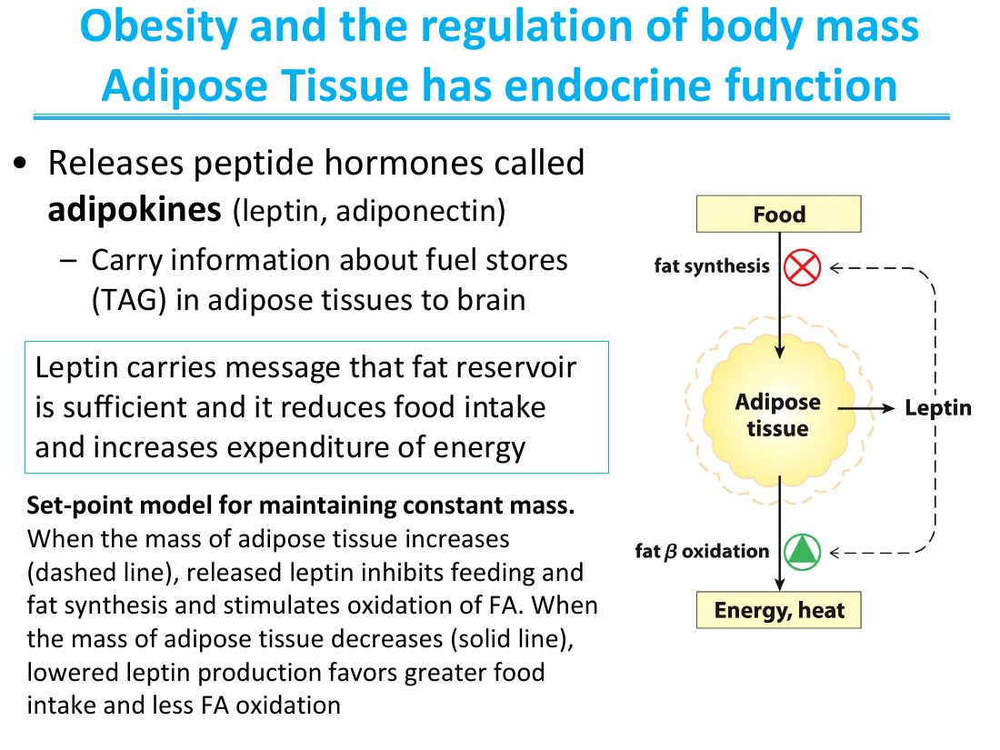
Obesity and the regulation of body mass
비만과 체질량의 조절
Adipose Tissue has endocrine function
지방조직은 내분비 기능을 가진다
Releases peptide hormones called adipokines (leptin, adiponectin)
아디포카인(렙틴, 아디포넥틴)이라 불리는 펩타이드 호르몬을 분비한다
Carry information about fuel stores (TAG) in adipose tissues to brain
지방조직의 연료 저장량(TAG)에 대한 정보를 뇌로 전달한다
Leptin carries message that fat reservoir is sufficient and it reduces food intake and increases expenditure of energy
렙틴은 지방 저장고가 충분하다는 메시지를 전달하며, 음식 섭취를 줄이고 에너지 소비를 늘린다
Set-point model for maintaining constant mass.
일정한 체질량을 유지하기 위한 설정점 모델.
When the mass of adipose tissue increases (dashed line), released leptin inhibits feeding and fat synthesis and stimulates oxidation of FA.
지방조직의 양이 늘면(점선), 분비된 렙틴이 섭식과 지방 합성을 억제하고 지방산 산화를 촉진한다.
When the mass of adipose tissue decreases (solid line), lowered leptin production favors greater food intake and less FA oxidation
지방조직의 양이 줄면(실선), 줄어든 렙틴 생산이 더 많은 음식 섭취와 더 적은 지방산 산화를 유도한다
Food / fat synthesis / Adipose tissue / Leptin / fat β oxidation / Energy, heat
음식 / 지방 합성 / 지방조직 / 렙틴 / 지방 β산화 / 에너지, 열
테스트뱅크 1건 형광펜 = 실제로 물어본 문장 시험 포인트아디포카인 = 렙틴, 아디포넥틴(펩타이드 호르몬), 지방 저장량 정보를 뇌로. 렙틴 = "충분하다" → 섭취↓, 지방 합성↓, β산화↑. 설정점 모델(점선 = 지방↑, 실선 = 지방↓).
그림 해설·더 깊이까지 보기 →슬라이드 52렙틴은 식욕 억제제다 — ob/ob, db/db 생쥐 (그림 23-33)기출 1TB 2원문·번역
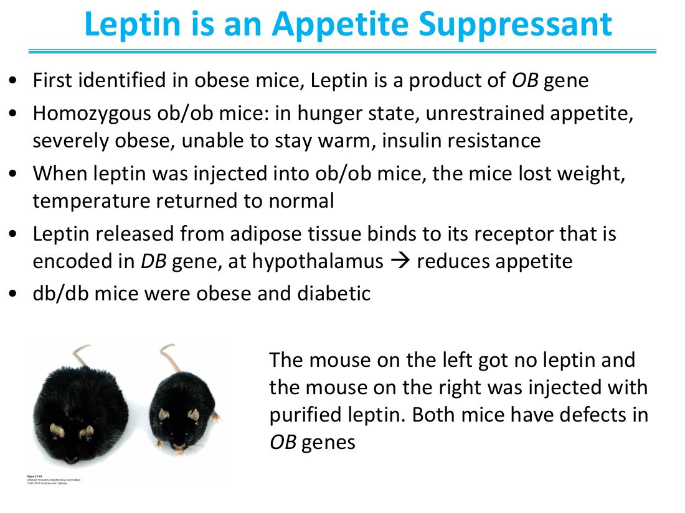
Leptin is an Appetite Suppressant
렙틴은 식욕 억제제다
First identified in obese mice, Leptin is a product of OB gene
비만 생쥐에서 처음 확인되었으며, 렙틴은 OB 유전자의 산물이다
Homozygous ob/ob mice: in hunger state, unrestrained appetite, severely obese, unable to stay warm, insulin resistance
동형접합 ob/ob 생쥐: 배고픈 상태, 억제되지 않는 식욕, 심한 비만, 체온 유지 불가, 인슐린 저항성
When leptin was injected into ob/ob mice, the mice lost weight, temperature returned to normal
ob/ob 생쥐에 렙틴을 주사하자 체중이 줄고 체온이 정상으로 돌아왔다
Leptin released from adipose tissue binds to its receptor that is encoded in DB gene, at hypothalamus → reduces appetite
지방조직에서 분비된 렙틴은 시상하부에서 DB 유전자가 암호화하는 수용체에 결합한다 → 식욕을 줄인다
db/db mice were obese and diabetic
db/db 생쥐는 비만이고 당뇨병이었다
The mouse on the left got no leptin and the mouse on the right was injected with purified leptin. Both mice have defects in OB genes
왼쪽 생쥐는 렙틴을 받지 않았고 오른쪽 생쥐는 정제된 렙틴을 주사받았다. 두 생쥐 모두 OB 유전자에 결함이 있다
기출 1건 · 테스트뱅크 2건 형광펜 = 실제로 물어본 문장20232017 퀴즈2016
렙틴 — (2023) 수용체는 시상하부 / DB가 렙틴 유전자, db/db는 당뇨 / 수용체가 핵 안 / 당뇨 환자는 렙틴이 크게 감소 / 렙틴·인슐린 수용체가 IRS-1 활성화 · (2017·2016) 수용체가 뇌하수체에 / db 유전자가 렙틴 암호화 / NPY를 통해 식욕 조절 / db/db에 렙틴 주입 시 체중 감소 / 비만인에게 렙틴 주입 시 체중 감소
정답·포인트 맞는 것: 수용체 = 시상하부(활꼴핵), NPY 분비 억제·α-MSH 분비로 식욕 조절, 렙틴과 인슐린이 공통 기질 IRS-2를 인산화. 틀린 것: 렙틴 = OB 유전자, DB = 수용체, 렙틴 주입으로 정상화되는 건 ob/ob, 비만인은 렙틴 저항성(렙틴이 오히려 높음)이라 주입해도 효과 없음, 수용체는 막 수용체(JAK-STAT).
TB 23-24
체중의 장기적인 유지는 다음 호르몬에 의해 조절된다:
- A 아디포신(adiposin)
- B 하이포탈민(hypothalmin)
- C 렙틴(leptin)
- D 오베신(obesin)
- E 테스토스테론
정답·포인트 C 렙틴(leptin) — 렙틴: 지방세포가 분비, 시상하부에 '지방 저장 충분' 신호 → 식욕↓, 에너지 소비↑. (A·B·D는 존재하지 않는 가상 이름)
TB 23-39단답·서술
[서술] 렙틴이란 무엇인가? 렙틴은 체질량의 장기적 유지에서 어떻게 기능하는가?
정답·포인트 렙틴은 지방세포(adipocyte)에서 생성되어 혈액을 통해 뇌로 운반되는 작은 폴리펩타이드이다. 지방세포에 지질 저장량이 충분할 때 생성되며, 시상하부의 수용체와 상호작용한다. 이 상호작용은 식욕을 억제하고 에너지 소비를 증가시키는 경향이 있는 일련의 연쇄 효과를 일으킨다.
시험 포인트렙틴 = OB 유전자 산물, 수용체 = DB 유전자(시상하부). ob/ob: 과식·비만·저체온·인슐린 저항성, 렙틴 주사로 회복. db/db: 비만 + 당뇨.
그림 해설·더 깊이까지 보기 →슬라이드 53렙틴은 교감신경계를 통해 열 발생을 늘린다 (1) — 시상하부와 지방조직 (그림 23-34a)원문·번역
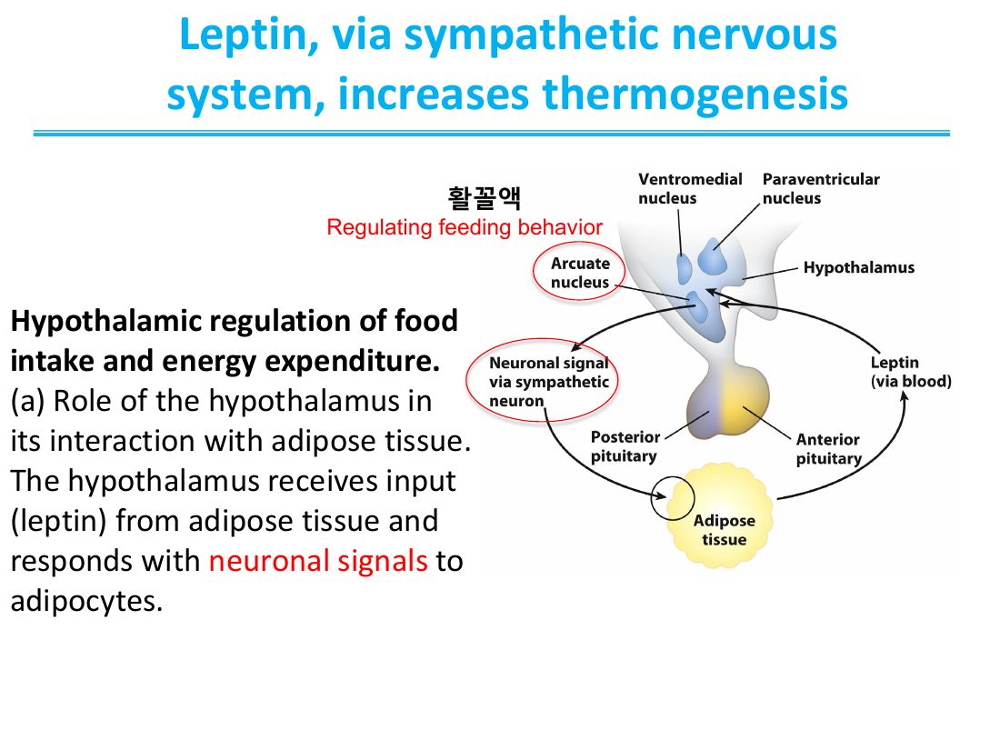
Leptin, via sympathetic nervous system, increases thermogenesis
렙틴은 교감신경계를 통해 열 발생을 증가시킨다
Hypothalamic regulation of food intake and energy expenditure.
음식 섭취와 에너지 소비의 시상하부 조절.
(a) Role of the hypothalamus in its interaction with adipose tissue. The hypothalamus receives input (leptin) from adipose tissue and responds with neuronal signals to adipocytes.
(a) 지방조직과의 상호작용에서 시상하부의 역할. 시상하부는 지방조직으로부터 입력(렙틴)을 받고, 지방세포에 신경 신호로 응답한다.
활꼴액 / Regulating feeding behavior
(슬라이드 한글 메모) 활꼴핵(슬라이드 표기 '활꼴액'은 오타) / 섭식 행동을 조절함
Arcuate nucleus / Ventromedial nucleus / Paraventricular nucleus / Hypothalamus / Neuronal signal via sympathetic neuron / Leptin (via blood) / Posterior pituitary / Anterior pituitary / Adipose tissue
활꼴핵 / 복내측핵 / 실방핵 / 시상하부 / 교감신경 뉴런을 통한 신경 신호 / 렙틴(혈액을 통해) / 뇌하수체 후엽 / 뇌하수체 전엽 / 지방조직
시험 포인트렙틴은 혈액으로 시상하부 활꼴핵에 → 시상하부는 교감신경(신경 신호)으로 지방세포에 응답.
그림 해설·더 깊이까지 보기 →슬라이드 54렙틴은 교감신경계를 통해 열 발생을 늘린다 (2) — 지방세포 안에서 (그림 23-34b)원문·번역
Leptin, via sympathetic nervous system, increases thermogenesis
렙틴은 교감신경계를 통해 열 발생을 증가시킨다
Hypothalamic regulation of food intake and energy expenditure.
음식 섭취와 에너지 소비의 시상하부 조절.
Effects of neuronal stimulation (norepinephrine) of the adipocyte include activation of protein kinase A, which triggers mobilization of FA from TAG and their uncoupling oxidation in mitochondria, generating heat but not ATP.
지방세포에 대한 신경 자극(노르에피네프린)의 효과에는 단백질 키네이스 A의 활성화가 포함되며, 이는 TAG로부터 지방산의 동원과 미토콘드리아에서의 짝풀림 산화를 일으켜 ATP가 아닌 열을 만든다.
Norepinephrine / β3-Adrenergic receptor / Adenylyl cyclase / G protein / ATP / cAMP / Protein kinase A / Adipocyte / Heat / β oxidation / H+ / Uncoupling protein (UCP1) / Fatty acids / Nucleus / Increased expression of UCP1
노르에피네프린 / β3-아드레날린 수용체 / 아데닐릴 고리화효소 / G 단백질 / ATP / cAMP / 단백질 키네이스 A / 지방세포 / 열 / β산화 / 양성자 / 짝풀림 단백질(UCP1) / 지방산 / 핵 / UCP1 발현 증가
TAG / DAG / MAG / Glycerol / adipose lipases / Lipid droplet / Perilipin
트라이아실글리세롤 / 다이아실글리세롤 / 모노아실글리세롤 / 글리세롤 / 지방 리파아제 / 지방 방울 / 페릴리핀
시험 포인트노르에피네프린 → β3 수용체 → G단백질 → 아데닐릴 고리화효소 → cAMP → PKA → ① 지방 분해(TAG→DAG→MAG) ② UCP1 발현↑ → 짝풀림 산화 → 열(ATP 아님).
그림 해설·더 깊이까지 보기 →슬라이드 55섭식을 조절하는 호르몬 — 활꼴핵의 두 뉴런 (그림 23-35)기출 2원문·번역
Hormones that Control Eating
섭식을 조절하는 호르몬
In the arcuate nucleus of the hypothalamus, two sets of neurosecretory cells receive hormonal input and relay neuronal signals to the cells of muscle, adipose tissue, and liver.
시상하부의 활꼴핵에서 두 무리의 신경분비세포가 호르몬 입력을 받아 근육, 지방조직, 간의 세포로 신경 신호를 전달한다.
Leptin and insulin act on anorexigenic neurosecretory cells to trigger release of α-MSH (melanocyte-stimulating hormone); α-MSH carries the signal to second-order neurons in the hypothalamus, which puts out the signals to eat less and metabolize more fuel.
렙틴과 인슐린은 식욕 억제성(anorexigenic) 신경분비세포에 작용하여 α-MSH(멜라닌세포 자극 호르몬)의 분비를 일으킨다. α-MSH는 시상하부의 2차 뉴런으로 신호를 전달하고, 2차 뉴런은 덜 먹고 연료를 더 대사하라는 신호를 내보낸다.
Leptin and insulin also act on orexigenic neurosecretory cells to inhibit the release of NPY (neuropeptide Y), reducing the "eat more" signal sent to the tissues.
렙틴과 인슐린은 또한 식욕 촉진성(orexigenic) 신경분비세포에 작용하여 NPY(신경펩타이드 Y)의 분비를 억제하고, 조직으로 보내지는 '더 먹어라' 신호를 줄인다.
Generating Energy / Saving Energy
에너지 생성(소비) / 에너지 절약
Effectors: Muscle, Adipose, Liver
효과기: 근육, 지방, 간
Hypothalamus / Second-order neurons / "Eat less, metabolize more" / "Eat more, metabolize less" / counteract
시상하부 / 2차 뉴런 / "덜 먹고 더 대사하라" / "더 먹고 덜 대사하라" / 서로 상쇄(견제)
Arcuate neurons / anorexigenic α-MSH / orexigenic NPY
활꼴핵 뉴런 / 식욕 억제성 α-MSH 뉴런 / 식욕 촉진성 NPY 뉴런
Organs: Leptin (adipose), Insulin (pancreas) = Adiposity signals / PYY3-36, GLP-1 (gut) = Satiety signals / Ghrelin (stomach) = Hunger signal
장기: 렙틴(지방), 인슐린(췌장) = 비만도(지방량) 신호 / PYY₃₋₃₆, GLP-1(장) = 포만 신호 / 그렐린(위) = 공복(배고픔) 신호
시험 포인트활꼴핵 2종: α-MSH(식욕 억제) ← 렙틴·인슐린 ▲ / NPY(식욕 촉진) ← 렙틴·인슐린·PYY ⊗, 그렐린 ▲. 신호 분류: 비만도(렙틴·인슐린), 포만(PYY₃₋₃₆·GLP-1), 배고픔(그렐린).
그림 해설·더 깊이까지 보기 →슬라이드 56렙틴은 식욕 관련 두 호르몬에 영향을 준다원문·번역
Leptin affects two types of appetite-related hormones
렙틴은 식욕과 관련된 두 종류의 호르몬에 영향을 준다
Neuropeptide Y (NPY) is an orexigenic (appetite-stimulating) hormone
신경펩타이드 Y(NPY)는 식욕 촉진성(orexigenic) 호르몬이다
Sends signal to eat
먹으라는 신호를 보낸다
Levels rise in starvation
기아 시 수치가 올라간다
Levels rise in ob/ob and db/db mice
ob/ob과 db/db 생쥐에서 수치가 올라간다
Inhibited by leptin and insulin
렙틴과 인슐린에 의해 억제된다
α-Melanocyte-Stimulating Hormone (α-MSH) is an anorexigenic (appetite-suppressing) hormone
α-멜라닌세포 자극 호르몬(α-MSH)은 식욕 억제성(anorexigenic) 호르몬이다
Sends signal to stop eating
그만 먹으라는 신호를 보낸다
Release is stimulated by leptin
분비가 렙틴에 의해 촉진된다
Gastric hormone ghrelin stimulates appetite by activating the NPY-expressing cells
위 호르몬인 그렐린은 NPY를 발현하는 세포를 활성화하여 식욕을 촉진한다
PYY3–36, released from the colon, inhibits these neurons and thereby decreases appetite.
대장에서 분비되는 PYY₃₋₃₆은 이 뉴런들을 억제하여 식욕을 감소시킨다.
시험 포인트NPY = orexigenic(식욕 촉진), 기아·ob/ob·db/db에서↑, 렙틴·인슐린이 억제. α-MSH = anorexigenic(식욕 억제), 렙틴이 촉진. 그렐린 → NPY 세포 활성(식욕↑), PYY₃₋₃₆ → 억제(식욕↓).
그림 해설·더 깊이까지 보기 →슬라이드 57렙틴은 유전자 발현을 조절하는 신호 연쇄를 일으킨다 — JAK-STAT (그림 23-36)기출 2TB 1원문·번역
Leptin triggers a signaling cascade that regulates gene expression
렙틴은 유전자 발현을 조절하는 신호 연쇄 반응을 일으킨다
Leptin receptor dimerizes when leptin binds
렙틴이 결합하면 렙틴 수용체가 이량체화된다
A Janus kinase (JAK) phosphorylates 2 Tyr in the receptor dimer
야누스 키네이스(JAK)가 수용체 이량체의 Tyr 2개를 인산화한다
Receptor becomes docking site for STAT3, STAT5, STAT6 (Signal Transducers and Activators of Transcription)
수용체는 STAT3, STAT5, STAT6(전사의 신호 전달자 및 활성화자)의 결합(도킹) 부위가 된다
STATs are phosphorylated by the same JAK
STAT들은 같은 JAK에 의해 인산화된다
STATs dimerize, move to nucleus, stimulate transcription
STAT들이 이량체화하여 핵으로 이동하고 전사를 촉진한다
Increases transcription of gene for precursor to the anorexigenic α-MSH
식욕 억제성 α-MSH의 전구체 유전자 전사를 증가시킨다
Leptin / Leptin receptor monomer / Plasma membrane / JAK / P / STAT / Cytosol / Nucleus / Neuropeptide (POMC, etc.) / mRNA / DNA
렙틴 / 렙틴 수용체 단량체 / 세포막 / 야누스 키네이스 / 인산기 / STAT / 세포질 / 핵 / 신경펩타이드(POMC 등) / mRNA / DNA
기출 2건 · 테스트뱅크 1건 형광펜 = 실제로 물어본 문장TB 23-40단답·서술
[서술] 렙틴이 수용체에 결합하면서 시작되는 신호전달 캐스케이드를 설명하라.
정답·포인트 렙틴이 시상하부의 수용체에 결합하면 수용체가 이량체화된다. 그러면 세포질의 수용성 '야누스 키나아제(Janus kinase, JAK)'가 수용체에 결합하여 활성화되고, 수용체 세포 내 도메인의 티로신 잔기들을 인산화한다. 이 잔기들은 다시 세 가지 STAT 전사인자의 결합 부위(docking site)가 되어, STAT들이 JAK에 의해 인산화될 수 있는 위치에 놓이게 한다. 인산화된 STAT들은 이량체화한 뒤 핵으로 이동할 수 있고, 그곳에서 특정 유전자들의 전사를 활성화한다. 그중에는 프로오피오멜라노코르틴(POMC) 유전자가 포함되며, 이로부터 α-멜라닌세포 자극 호르몬(α-MSH)이 만들어진다. α-MSH가 뇌에 전달하는 신호는 '그만 먹어!'이다.
시험 포인트렙틴 수용체 → 이량체화 → JAK가 수용체 Tyr 2개 인산화 → STAT3/5/6 도킹·인산화 → STAT 이량체 → 핵 → POMC(α-MSH 전구체) 전사↑.
그림 해설·더 깊이까지 보기 →슬라이드 58비만인에서는 렙틴 저항성이 생긴다기출 1TB 1원문·번역
Leptin resistance occurs in obese individuals
비만인에서는 렙틴 저항성이 생긴다
Restoring leptin to ob/ob mice results in restoration to normal body mass
ob/ob 생쥐에 렙틴을 회복시키면 정상 체질량으로 회복된다
BUT, leptin administration to most obese people does NOT restore normal body mass
그러나 대부분의 비만인에게 렙틴을 투여해도 정상 체질량이 회복되지 않는다
Leptin is in fact elevated in many cases of obesity
실제로 많은 비만 사례에서 렙틴은 증가해 있다
Something downstream in leptin response must be defective ("leptin resistance")
렙틴 반응의 하류 어딘가에 결함이 있는 것이 틀림없다('렙틴 저항성')
Leptin system may have evolved to regulate the starvation response (act as survival signal during nutritional deficiency)
렙틴 시스템은 기아 반응을 조절하도록 진화했을 수 있다 (영양 결핍 동안 생존 신호로 작용)
Reduction of leptin level triggers decreased energy expenditure (biosynthesis, heat) and increased energy-generating process (oxidation of fatty acids, glucose, food uptake etc…)
렙틴 수치 감소는 에너지 소비(생합성, 열)를 줄이고 에너지 생성 과정(지방산·포도당 산화, 음식 섭취 등)을 늘린다
Reduction of leptin level stimulates AMP-activated protein kinase (AMPK) in the liver and muscle
렙틴 수치 감소는 간과 근육에서 AMP 활성화 단백질 키네이스(AMPK)를 자극한다
기출 1건 · 테스트뱅크 1건 형광펜 = 실제로 물어본 문장 시험 포인트비만인은 렙틴 증가 + 렙틴 저항성(하류 결함) → 렙틴 투여 무효. 렙틴 = 기아 반응(생존 신호)용으로 진화. 렙틴↓ → 에너지 소비↓·생성↑, 간·근육 AMPK 자극.
그림 해설·더 깊이까지 보기 →슬라이드 59인슐린과 렙틴 수용체 사이의 교차 신호(제안된 기전) (그림 23-37)기출 2TB 1원문·번역

Proposed Mechanism for Cross Talk between Receptors for Insulin and Leptin
인슐린과 렙틴 수용체 사이 교차 신호에 대해 제안된 기전
Leptin makes liver and muscle more sensitive to insulin
렙틴은 간과 근육을 인슐린에 더 민감하게 만든다
A common 2° messenger may enable leptin and insulin to trigger the same downstream pathways
공통의 2차 전달자가 렙틴과 인슐린이 같은 하류 경로를 일으키게 할 수 있다
Leptin and insulin may phosphorylate the same substrate (insulin receptor substrate-2: IRS-2).
렙틴과 인슐린은 같은 기질(인슐린 수용체 기질-2: IRS-2)을 인산화할 수 있다.
When phosphorylated, IRS-2 activates PI3K, which has downstream consequences that include inhibition of food intake.
인산화되면 IRS-2는 PI3K를 활성화하고, PI3K는 음식 섭취 억제를 포함한 하류 결과를 낸다.
IRS-2 serves here as an integrator of the input from two receptors.
여기서 IRS-2는 두 수용체로부터 오는 입력의 통합자 역할을 한다.
Leptin receptor / Leptin / JAK / Insulin receptor / Insulin / Plasma membrane / Cytosol / IRS-2 / P / PI3K / Inhibition of food intake
렙틴 수용체 / 렙틴 / 야누스 키네이스 / 인슐린 수용체 / 인슐린 / 세포막 / 세포질 / 인슐린 수용체 기질-2 / 인산기 / PI3-키네이스 / 음식 섭취 억제
기출 2건 · 테스트뱅크 1건 형광펜 = 실제로 물어본 문장2017 퀴즈단답·서술
[주관식] 그림 23-37(렙틴·인슐린 수용체 교차 신호)의 빈칸 (A), (B)
정답·포인트 (A) JAK, (B) PI3K.
TB 23-25
렙틴 단백질의 수많은 대사 효과 중 하나로, 렙틴은:
- A 글루코코르티코이드 생성을 감소시킨다.
- B 5'-AMP 활성화 단백질 키나아제(AMPK) 효소를 불활성화한다.
- C 성호르몬 생성을 증가시킨다.
- D 근육과 간세포가 인슐린에 더 민감해지게 한다.
- E 갑상선 호르몬 생성을 높인다.
정답·포인트 D 근육과 간세포가 인슐린에 더 민감해지게 한다. — 렙틴은 근육·간의 인슐린 감수성을 높인다(AMPK를 '활성화'하여 지방산 산화↑). B는 반대.
시험 포인트렙틴 → 간·근육 인슐린 감수성↑. 공통 기질 IRS-2 인산화 → PI3K → 섭식 억제. IRS-2 = 두 수용체 입력의 통합자.
그림 해설·더 깊이까지 보기 →슬라이드 60아디포넥틴은 AMPK를 통해 인슐린 감수성을 높인다 (그림 23-39 일부)기출 2원문·번역
Adiponectin acts through AMPK to increase insulin sensitivity
아디포넥틴은 AMPK를 통해 작용하여 인슐린 감수성을 높인다
Adiponectin : peptide hormone produced in adipocytes
아디포넥틴: 지방세포에서 생산되는 펩타이드 호르몬
Circulates and makes other organs sensitive to insulin
혈액을 순환하며 다른 장기를 인슐린에 민감하게 만든다
Increases food uptake/energy-generation/catabolism, but decreases energy-consuming process (biosynthesis, transport)
음식 섭취/에너지 생성/이화작용을 늘리지만, 에너지를 소비하는 과정(생합성, 수송)은 줄인다
Protects against atherosclerosis, inflammation
동맥경화와 염증을 막아준다
Binding with receptor in the brain phosphorylates AMPK
뇌의 수용체와 결합하면 AMPK를 인산화한다
ADP produced in synthetic reactions is converted into AMP by adenylyl kinase.
합성 반응에서 생긴 ADP는 아데닐산 키네이스에 의해 AMP로 전환된다.
AMP activates AMPK, which regulates ATP consuming and generating pathways by phosphorylating key enzymes
AMP는 AMPK를 활성화하고, AMPK는 핵심 효소를 인산화하여 ATP를 소비하는 경로와 생성하는 경로를 조절한다
ATP-consuming processes (biosynthesis, transport, etc.) / ATP / ADP / ↑[AMP] / AMPK / ATP-producing processes (oxidation of glucose, fatty acids, etc.)
ATP 소비 과정(생합성, 수송 등) / ATP / ADP / AMP 농도 증가 / AMPK / ATP 생산 과정(포도당·지방산 산화 등)
기출 2건 형광펜 = 실제로 물어본 문장2021TB 23-27
The peptide hormone adiponectin, produced in adipose tissue, circulates in the blood and: 간 지방산 합성↑ / 근육 β산화↑ / 근육·간 포도당 흡수 억제 / 근육으로 지방산 수송↓ / 간 포도당신생↑
정답·포인트 근육세포의 지방산 β산화 속도 증가(AMPK 활성).
시험 포인트아디포넥틴 = 지방세포 펩타이드 호르몬, 인슐린 감수성↑, 이화·에너지 생성↑ / 생합성·수송↓, 항동맥경화·항염증, AMPK 인산화. ADP → AMP(아데닐산 키네이스) → AMPK.
그림 해설·더 깊이까지 보기 →슬라이드 61아디포넥틴의 형성과 AMPK를 통한 작용 (1) (그림 23-39)기출 2원문·번역
Formation of Adiponectin and its Actions through AMPK
아디포넥틴의 형성과 AMPK를 통한 작용
Long fast; starvation / Adipose tissue shrinks / ↑Adiponectin / AMPK / Exercise
장기 공복; 기아 / 지방조직이 줄어듦 / 아디포넥틴 증가 / AMPK / 운동
Physiological effect (위): ↑ Cardiac glycolysis / ↑ Glucose transport / ↑ Fatty acid oxidation / ↓ Fatty acid synthesis / ↓ Lipolysis / ↓ Cholesterol, isoprenoid synthesis / ↓ Triacylglycerol synthesis / ↓ Glycogen synthesis / ↓ Protein synthesis
생리적 효과(위): ↑ 심장 해당과정 / ↑ 포도당 수송 / ↑ 지방산 산화 / ↓ 지방산 합성 / ↓ 지방 분해 / ↓ 콜레스테롤·아이소프레노이드 합성 / ↓ TAG 합성 / ↓ 글리코젠 합성 / ↓ 단백질 합성
Target enzyme: PFK-2 (▲) / GLUT1, GLUT4 (▲) / FAS I, ACC (⊗) / HSL (⊗) / HMGR (⊗) / GPAT (⊗) / GS (⊗) / eEF2, mTORC1 (⊗)
표적 효소: PFK-2(활성화) / GLUT1, GLUT4(활성화) / FAS I, ACC(억제) / HSL(억제) / HMGR(억제) / GPAT(억제) / GS(억제) / eEF2, mTORC1(억제)
Target tissue: Heart / Skeletal muscle / Brain / Pancreatic β cell / Liver / Adipose tissue
표적 조직: 심장 / 골격근 / 뇌 / 췌장 β세포 / 간 / 지방조직
Physiological effect (아래): Heart ↑ fatty acid oxidation, ↑ glucose uptake, ↑ glycolysis / Skeletal muscle ↑ fatty acid oxidation, ↑ glucose uptake / Brain ↑ Feeding behavior, ↓ Energy expenditure / Pancreatic β cell ↓ insulin secretion / Liver ↓ fatty acid synthesis, ↓ cholesterol synthesis / Adipose tissue ↓ fatty acid synthesis, ↓ lipolysis
생리적 효과(아래): 심장 ↑지방산 산화·↑포도당 흡수·↑해당과정 / 골격근 ↑지방산 산화·↑포도당 흡수 / 뇌 ↑섭식 행동·↓에너지 소비 / 췌장 β세포 ↓인슐린 분비 / 간 ↓지방산 합성·↓콜레스테롤 합성 / 지방조직 ↓지방산 합성·↓지방 분해
PFK-2, phosphofructokinase-2; GLUT1 and GLUT4, glucose transporters; FAS I, fatty acid synthase I; ACC, acetyl-CoA carboxylase; HSL, hormone-sensitive lipase; HMGR, HMG-CoA reductase; GPAT, an acyl transferase; GS, glycogen synthase; eEF2, eukaryotic elongation factor 2 (required for protein synthesis); mTOR1, mammalian target of rapamycin (a protein kinase that regulates protein synthesis on the basis of nutrient availability).
PFK-2, 포스포프럭토키네이스-2; GLUT1과 GLUT4, 포도당 수송체; FAS I, 지방산 합성효소 I; ACC, 아세틸-CoA 카복실화효소; HSL, 호르몬 민감성 리파아제; HMGR, HMG-CoA 환원효소; GPAT, 아실기 전이효소의 하나; GS, 글리코젠 합성효소; eEF2, 진핵생물 신장 인자 2(단백질 합성에 필요); mTOR1, 포유류 라파마이신 표적(영양소 이용도에 따라 단백질 합성을 조절하는 단백질 키네이스).
기출 2건 형광펜 = 실제로 물어본 문장20232016
(2023) AMPK의 영향을 받는 것 — HSL / HMG-CoA reductase / ACC / CAT I / mTORC1 · (2016) AMPK 활성화 결과가 아닌 것 — HMGR 억제로 콜레스테롤 합성↓ / eEF2 억제로 단백질 합성↓ / GLUT1·4 촉진 / 지방분해 증가 / 말로닐-CoA 감소
정답·포인트 그림 23-39 표적: GLUT1·4·PFK-2 ↑, ACC·FAS I·HSL·HMGR·GPAT·mTORC1 ⊗ → 말로닐-CoA↓ → CAT I 억제 해제 → β산화↑. 지방조직 HSL을 억제하므로 '지방분해 증가'가 틀린 보기.
시험 포인트AMPK 켜는 것 = 아디포넥틴, 운동. AMPK ▲ = PFK-2, GLUT1/4 / ⊗ = ACC, FAS I, HSL, HMGR, GPAT, GS, eEF2·mTORC1. 약어 풀네임 전부.
그림 해설·더 깊이까지 보기 →슬라이드 62아디포넥틴의 형성과 AMPK를 통한 작용 (2) — 그림 설명문원문·번역
Formation of Adiponectin and its Actions through AMPK
아디포넥틴의 형성과 AMPK를 통한 작용
Formation of adiponectin and its actions through AMPK.
아디포넥틴의 형성과 AMPK를 통한 작용.
Extended fasting or starvation results in decreased reserves of triacylglycerols in adipose tissue, which triggers adiponectin production and release from adipocytes.
장기 공복이나 기아는 지방조직의 TAG 저장량을 감소시키고, 이것이 지방세포에서 아디포넥틴의 생산과 분비를 일으킨다.
The rise in plasma adiponectin acts through its plasma membrane receptors in various cell types and organs to inhibit energy-consuming processes and stimulate energy producing processes.
혈장 아디포넥틴의 증가는 여러 세포 유형과 장기의 세포막 수용체를 통해 작용하여, 에너지 소비 과정을 억제하고 에너지 생산 과정을 촉진한다.
Adiponectin acts through its receptors in the brain to stimulate feeding behavior and inhibit energy-consuming physical activity, and to inhibit thermogenesis in brown fat.
아디포넥틴은 뇌의 수용체를 통해 섭식 행동을 촉진하고, 에너지를 소비하는 신체 활동을 억제하며, 갈색 지방의 열 발생을 억제한다.
Adiponectin exerts its metabolic effects by activating AMPK, which regulates (by phosphorylation) specific enzymes in key metabolic processes.
아디포넥틴은 AMPK를 활성화하여 대사 효과를 내며, AMPK는 핵심 대사 과정의 특정 효소들을 (인산화로) 조절한다.
Thiazolidinedione drugs activate the transcription factor PPARγ, which then turns on adiponectin synthesis, indirectly activating AMPK.
싸이아졸리딘다이온 약물은 전사인자 PPARγ를 활성화하고, PPARγ는 아디포넥틴 합성을 켜서 간접적으로 AMPK를 활성화한다.
Exercise, through conversion of ATP to ADP and AMP, also stimulates AMPK.
운동도 ATP를 ADP와 AMP로 전환시킴으로써 AMPK를 자극한다.
시험 포인트장기 공복 → TAG↓ → 아디포넥틴↑ → 에너지 소비↓·생산↑. 뇌: 섭식↑, 신체 활동↓, BAT 열 발생↓. TZD → PPARγ → 아디포넥틴↑ → AMPK(간접). 운동 → AMP↑ → AMPK.
그림 해설·더 깊이까지 보기 →슬라이드 63아디포넥틴은 AMPK 경로를 활성화한다 — ACC를 꺼서 β산화를 푼다기출 1원문·번역
Adiponectin activates the AMPK pathway
아디포넥틴은 AMPK 경로를 활성화한다
AMPK phosphorylates and inactivates acetyl-CoA carboxylase
AMPK는 아세틸-CoA 카복실화효소를 인산화하여 불활성화한다
Acetyl-CoA carboxylase produces malonyl-CoA (the first intermediate in fatty acid synthesis process)
아세틸-CoA 카복실화효소는 말로닐-CoA(지방산 합성 과정의 첫 중간체)를 만든다
Malonyl CoA inhibits carnitine acyltransferase I, which starts β oxidation process by transporting FA into mitochondria : fatty acids are free to enter the mitochondria for oxidation
말로닐-CoA는 지방산을 미토콘드리아로 운반하여 β산화 과정을 시작하는 카르니틴 아실전이효소 I을 억제한다 (→ ACC가 꺼지면) 지방산이 산화를 위해 자유롭게 미토콘드리아로 들어갈 수 있다
⇒ Inactivation of acetyl-CoA carboxylase = inhibiting FA synthesis + relieving the inhibition of β oxidation
⇒ 아세틸-CoA 카복실화효소의 불활성화 = 지방산 합성 억제 + β산화 억제의 해제
Mice with defective adiponectin : poor glucose tolerance, insulin-insensitive, similar to Type II DM
아디포넥틴에 결함이 있는 생쥐: 포도당 내성이 나쁘고, 인슐린에 둔감하며, 2형 당뇨병과 비슷하다
individuals with type II DM or obesity have lower level of adiponectin
2형 당뇨병이나 비만이 있는 사람은 아디포넥틴 수치가 더 낮다
시험 포인트AMPK → ACC 인산화(불활성) → 말로닐-CoA↓ → 지방산 합성↓ + CAT I 억제 해제 → β산화↑. 아디포넥틴 결함 생쥐 = 2형 당뇨 유사. 비만·2형 당뇨 = 아디포넥틴 낮음.
그림 해설·더 깊이까지 보기 →슬라이드 64싸이아졸리딘다이온(TZD) 약물은 AMPK 경로를 활성화하고 아디포넥틴 유전자 발현을 늘린다원문·번역
Thiazolidinedione drugs activate the AMPK pathway and increase expression of adiponectin genes
싸이아졸리딘다이온 약물은 AMPK 경로를 활성화하고 아디포넥틴 유전자의 발현을 늘린다
Thiazolidinediones are used to treat type 2 diabetes
싸이아졸리딘다이온은 2형 당뇨병 치료에 쓰인다
Includes Avandia (rosiglitazone), Actos (pioglitazone)
아반디아(로시글리타존), 액토스(피오글리타존)가 포함된다
Targets include:
표적은 다음과 같다:
PPARγ (next slides)
PPARγ (다음 슬라이드들)
receptors that lead to activation of adiponectin gene transcription
아디포넥틴 유전자 전사의 활성화로 이어지는 수용체
Avandia limited due to increased heart disease risk
아반디아는 심장병 위험 증가 때문에 사용이 제한되었다
시험 포인트TZD = 2형 당뇨약, 로시글리타존(아반디아)·피오글리타존(액토스). 표적 = PPARγ → 아디포넥틴 전사 → AMPK. 아반디아 = 심장병 위험으로 제한.
그림 해설·더 깊이까지 보기 →슬라이드 65mTORC1은 영양·에너지 공급에 맞춰 세포 성장을 조율한다 (그림 23-40)기출 2원문·번역
mTORC1 activity coordinates cell growth with the supply of nutrients and energy
mTORC1 활성은 영양소와 에너지 공급에 맞춰 세포 성장을 조율한다
mTORC1, Ser/Thr kinase, is activated by abundant energy
Ser/Thr 키네이스인 mTORC1은 풍부한 에너지에 의해 활성화된다
> stimulate cell growth and proliferation
→ 세포 성장과 증식을 촉진한다
By phosphorylating target proteins, mTORC1 activates energy (ATP and NADPH) production for biosynthesis and stimulates the synthesis of proteins and lipids, allowing cell growth and proliferation
표적 단백질을 인산화함으로써 mTORC1은 생합성을 위한 에너지(ATP와 NADPH) 생산을 활성화하고, 단백질과 지질 합성을 촉진하여 세포 성장과 증식을 가능하게 한다
*PGC-1α : Peroxisome proliferator-activated receptor gamma coactivator-1alpha (mit biogenesis)
*PGC-1α: 퍼옥시좀 증식인자 활성화 수용체 감마 공활성인자-1알파 (미토콘드리아 생합성)
*HIF-1α: Hypoxia inducible factor-1alpha
*HIF-1α: 저산소 유도 인자-1알파
Nutrients / Growth factors / mTORC1
영양소 / 성장인자 / mTORC1
Energy production: Glucose uptake / Glycolysis / ATP / PPP / NADPH / Pentoses
에너지 생산: 포도당 흡수 / 해당과정 / ATP / 오탄당 인산 경로 / NADPH / 오탄당
HIF-1 → Angiogenesis / PGC-1a → Mitochondrial metabolism (acetyl-CoA) / PPAR → Adipogenesis (sterols, FA)
HIF-1 → 혈관 신생 / PGC-1α → 미토콘드리아 대사(아세틸-CoA) / PPAR → 지방 생성(스테롤, 지방산)
Nucleotide synthesis / Ribosome biogenesis / Protein synthesis / Membrane synthesis / Cell growth and proliferation
뉴클레오타이드 합성 / 리보솜 생합성 / 단백질 합성 / 막 합성 / 세포 성장과 증식
기출 2건 형광펜 = 실제로 물어본 문장2025202220192016
mTORC1 틀린 것 — 티로신 키네이스로 세포 성장 촉진 / 영양·성장인자로 활성화 / PPP 활성 / PGC-1α로 미토콘드리아 생성 / HIF-1α로 혈관 신생 (2019·2016: 티로신 인산화하는 downstream / HIF1 / PPAR → adipogenesis / PPP / 세포 성장)
정답·포인트 mTORC1 = Ser/Thr 키네이스 → '티로신' 보기가 4년 연속 정답. 나머지(영양·성장인자, PPP·NADPH, PGC-1α, HIF-1α 혈관신생, PPAR 지방생성)는 그림 23-40 그대로.
시험 포인트mTORC1 = Ser/Thr 키네이스, 풍부한 에너지·영양소·성장인자로 활성 → ATP·NADPH 생산 + 단백질·지질·뉴클레오타이드 합성 → 성장·증식. 하류 전사인자 HIF-1(혈관신생)·PGC-1α(미토콘드리아 생합성)·PPAR(지방 생성). 약어 풀네임.
그림 해설·더 깊이까지 보기 →슬라이드 66PPAR은 지방·탄수화물 대사 유전자의 발현을 바꾼다 (그림 23-41)기출 1원문·번역
Peroxisome proliferator−activated receptors (PPARs) alter expression of genes for fat and carbohydrate metabolism
퍼옥시좀 증식인자 활성화 수용체(PPAR)는 지방과 탄수화물 대사 유전자의 발현을 바꾼다
PPARs: peroxisome proliferator-activated receptors
PPAR: 퍼옥시좀 증식인자 활성화 수용체
binds with fatty acids or derivatives
지방산 또는 그 유도체와 결합한다
Its heterodimerization with retinoid X receptor (RXR) in the nucleus changes the transcription of genes involved in fat and carbohydrate metabolism
핵 안에서 레티노이드 X 수용체(RXR)와 이종이량체를 형성하여 지방과 탄수화물 대사에 관여하는 유전자의 전사를 변화시킨다
Ligand / Plasma membrane / Cytosol / PPAR / RXR / Nuclear envelope / DNA / Regulated gene / Response element (DNA sequence that regulates transcription in response to PPAR ligand L)
리간드 / 세포막 / 세포질 / PPAR / RXR / 핵막 / DNA / 조절받는 유전자 / 반응 요소(PPAR 리간드 L에 반응하여 전사를 조절하는 DNA 서열)
시험 포인트PPAR = 지방산·유도체를 리간드로 하는 핵 수용체 → RXR과 이종이량체 → 반응 요소 결합 → 지방·탄수화물 대사 유전자 전사 조절.
그림 해설·더 깊이까지 보기 →슬라이드 67PPAR의 기능 — γ, α, δ기출 1원문·번역
Function of PPARs
PPAR의 기능
PPARγ (in liver and adipose tissue)
PPARγ (간과 지방조직에서)
turns on genes for lipid synthesis and storage (adipogenesis)
지질 합성과 저장의 유전자를 켠다 (지방 생성)
activated by thiazolidinediones/ increase adiponectin expression, thereby enhancing insulin sensitivity
싸이아졸리딘다이온에 의해 활성화된다 / 아디포넥틴 발현을 늘려 인슐린 감수성을 높인다
PPARα (in liver, heart, skeletal muscle, etc.)
PPARα (간, 심장, 골격근 등에서)
activated by FA and eicosanoids
지방산과 에이코사노이드에 의해 활성화된다
turns on genes for FA oxidation and ketone body formation
지방산 산화와 케톤체 생성의 유전자를 켠다
Its interaction with Fibrates (fenofibrate, profibrate/ drug used for CVD) lower TAG level and increase HDL level
피브레이트(페노피브레이트, 프로피브레이트 / 심혈관 질환에 쓰이는 약)와의 상호작용은 TAG 수치를 낮추고 HDL 수치를 높인다
PPARδ (in liver and muscle)
PPARδ (간과 근육에서)
turns on genes for FA oxidation (fat depletion, weight loss) and mt uncoupling (thermogenesis)
지방산 산화(지방 고갈, 체중 감소)와 미토콘드리아 짝풀림(열 발생)의 유전자를 켠다
No fat accumulation in mice with constitutively active PPARδ
항상 활성화된 PPARδ를 가진 생쥐에서는 지방이 축적되지 않는다
PPARδ is a potential target for drugs to treat obesity
PPARδ는 비만 치료 약물의 잠재적 표적이다
기출 1건 형광펜 = 실제로 물어본 문장202520232016
PPAR 옳은 것 — 핵에서 RXR과 결합해 탄수화물·지방 대사 유전자 발현 / PPARα 활성 시 지방산 산화·케톤체 형성(기아 반응) / PPARα는 피브레이트에 억제 / PPARδ를 억제하는 약은 비만치료제 / PPARγ는 TZD에 억제되어 지질 합성·저장 · (2016 주관식) 그림 23-42 빈칸 α·γ·δ
정답·포인트 맞는 것: RXR 이형이량체, PPARα = 지방산 산화·케톤체·기아 반응. 틀린 것: 피브레이트·TZD는 작용제(활성화), 비만치료 표적은 PPARδ 활성. 그림 23-42: (a) PPARα(간·근육 지방산 산화, 기아 반응), (b) PPARγ(지방 합성·저장, 아디포카인, 인슐린 감수성), (c) PPARδ(지방산 산화·열 발생).
시험 포인트γ(간·지방) = 지방 생성, TZD로 활성, 아디포넥틴↑ → 인슐린 감수성↑. α(간·심장·골격근) = 지방산·에이코사노이드로 활성, 지방산 산화·케톤체, 피브레이트 → TAG↓ HDL↑. δ(간·근육) = 지방산 산화·짝풀림(열), 항상 활성 생쥐 지방 축적 없음, 비만약 후보.
그림 해설·더 깊이까지 보기 →슬라이드 68PPAR에 의한 대사 통합 (그림 23-42)기출 1원문·번역
Metabolic Integration by PPARs
PPAR에 의한 대사 통합
Liver / Adipose tissue / Muscle
간 / 지방조직 / 근육
PPARα → Liver: Fatty acid oxidation, Starvation response / → Muscle: Fatty acid oxidation
PPARα → 간: 지방산 산화, 기아 반응 / → 근육: 지방산 산화
PPARγ → Liver: Fat synthesis and storage / → Adipose tissue: Fat synthesis and storage, Adipokine production / → Muscle: Insulin sensitivity
PPARγ → 간: 지방 합성과 저장 / → 지방조직: 지방 합성과 저장, 아디포카인 생산 / → 근육: 인슐린 감수성
PPARδ → Adipose tissue: Fatty acid oxidation, Thermogenesis / → Muscle: Fatty acid oxidation, Thermogenesis
PPARδ → 지방조직: 지방산 산화, 열 발생 / → 근육: 지방산 산화, 열 발생
시험 포인트그림의 화살표 7개 그대로: α → 간(산화·기아반응)·근육(산화) / γ → 간·지방(합성·저장, 아디포카인)·근육(인슐린 감수성) / δ → 지방·근육(산화·열 발생).
그림 해설·더 깊이까지 보기 →슬라이드 69그렐린은 위에서 분비되는 단기 식욕 촉진 펩타이드 (그림 23-38)기출 1원문·번역
Ghrelin is a short-term orexigenic peptide secreted in the stomach
그렐린은 위에서 분비되는 단기적 식욕 촉진성 펩타이드이다
Ghrelin is a peptide hormone produced in cells lining the stomach. Its receptors appear in brain, heart, and adipose tissue
그렐린은 위벽을 덮는 세포에서 만들어지는 펩타이드 호르몬이다. 그 수용체는 뇌, 심장, 지방조직에 있다
A powerful appetite stimulant.
강력한 식욕 촉진제이다.
Prader-Willi Syndrome associated with high levels of ghrelin, insatiable appetite and extreme obesity
프라더-윌리 증후군은 높은 그렐린 수치, 만족할 줄 모르는 식욕, 극도의 비만과 관련된다
Works via G-protein−coupled receptor to increase sensation of hunger
G단백질 연결 수용체를 통해 작용하여 배고픔 감각을 증가시킨다
Plasma level of ghrelin rise just before the normal time for meal
혈장 그렐린 수치는 평소 식사 시간 직전에 올라간다
(a) Ghrelin (pg/mL) 200~800 / Breakfast / Lunch / Dinner / Snack
(a) 그렐린(pg/mL) 200~800 / 아침 / 점심 / 저녁 / 간식
(b) Plasma glucose (pmol/L) 400~800
(b) 혈장 포도당 (눈금 400~800, 슬라이드 단위 표기 pmol/L)
(c) Insulin (pmol/L) 0~700
(c) 인슐린(pmol/L) 0~700
Time of day: 8:30 AM, 12:00 PM, 5:00 PM, 8:30 PM, 12:00 AM
하루 중 시각: 오전 8:30, 정오 12:00, 오후 5:00, 오후 8:30, 자정 12:00
기출 1건 형광펜 = 실제로 물어본 문장20212016TB 23-26
식욕을 촉진하는 호르몬 — 그렐린 / 인슐린 / 아디포넥틴 / a와 b / a와 c · (2021 TB) The hormone leptin ___ appetite; insulin ___ appetite.
정답·포인트 촉진 = 그렐린(위, 식사 직전 상승). 렙틴·인슐린 = 둘 다 식욕 감소(decreases; decreases).
시험 포인트그렐린 = 위, 단기 식욕 촉진(orexigenic), 수용체는 뇌·심장·지방, GPCR, 식사 직전에 상승. 프라더-윌리 증후군 = 고그렐린·과식·극도 비만.
그림 해설·더 깊이까지 보기 →슬라이드 70PYY₃₋₃₆는 소장·대장에서 분비되는 식욕 억제 호르몬원문·번역
PYY3-36 is an appetite-suppressing hormone secreted from the small intestine and colon
PYY₃₋₃₆은 소장과 대장에서 분비되는 식욕 억제 호르몬이다
PYY3-36 is a peptide hormone secreted by endocrine cells in the lining of the small intestine and colon
PYY₃₋₃₆은 소장과 대장의 내벽에 있는 내분비세포가 분비하는 펩타이드 호르몬이다
Its level rises after a meal
식사 후에 수치가 올라간다
Transported to hypothalamus and Inhibits release of orexigenic NPY
시상하부로 운반되어 식욕 촉진성 NPY의 분비를 억제한다
Result is reduced hunger
결과적으로 배고픔이 줄어든다
시험 포인트PYY₃₋₃₆ = 소장·대장 내분비세포, 식후 상승, 시상하부에서 NPY 억제 → 배고픔↓.
그림 해설·더 깊이까지 보기 →슬라이드 71장내 미생물이 비만에 영향을 준다원문·번역
Microbes in the gut influence obesity
장내 미생물은 비만에 영향을 준다
Obese and lean persons have different gut microbial flora
비만인과 마른 사람은 서로 다른 장내 미생물총을 가진다
Some microorganisms create fermentation products that affect adipose tissue
일부 미생물은 지방조직에 영향을 주는 발효 산물을 만든다
Most products are short-chain FA: acetate, propionate, butyrate, etc.
대부분의 산물은 짧은사슬 지방산이다: 아세트산, 프로피온산, 뷰티르산 등
Propionate known to act on GPCRs of precursor cells, inducing them to become adipocytes and inhibiting lipolysis
프로피온산은 전구세포의 GPCR에 작용하여 이들이 지방세포가 되도록 유도하고 지방 분해를 억제하는 것으로 알려져 있다
시험 포인트비만인/마른 사람 = 장내 미생물총 다름. 발효 산물 = 짧은사슬 지방산(아세트산·프로피온산·뷰티르산). 프로피온산 → 전구세포 GPCR → 지방세포 분화↑, 지방 분해↓.
그림 해설·더 깊이까지 보기 →9
비만·대사증후군·2형 당뇨와 치료
슬라이드 72–76
처음이라면 · 큰 그림부터
8단원의 조절 장치가 오래 무리하면 생기는 일이에요. 지방조직이 감당 못 할 만큼 지방이 계속 들어오면, 지방세포가 커지다 못해 염증 신호를 내고 지방산을 흘려보내요. 남는 지방산은 근육, 간, 췌장처럼 원래 지방 창고가 아닌 곳에 쌓이고(이소성 지질), 거기서 인슐린 신호를 방해해요. 근육이 포도당을 못 쓰니 혈당이 오르고, 결국 β세포까지 지쳐요. 이 설명이 지질 독성 가설이에요.
인슐린 저항성이 생기면 같은 효과를 내는 데 인슐린이 더 많이 필요해져요. 복부비만, 높은 혈중 TAG, 낮은 HDL, 고혈압, 약간 높은 혈당이 한 사람에게 같이 나타나면 대사증후군이라 하고, 2형 당뇨로 가는 길목으로 봐요.
치료제는 "어디를 건드리나"로 묶으면 외우기 쉬워요. β세포의 칼륨 통로를 닫아 인슐린을 더 나오게 하는 약(설포닐유레아), AMPK를 켜서 간의 포도당 생산을 줄이는 약(메트포르민), PPARγ를 켜서 인슐린 감수성을 높이는 약(TZD), 장 호르몬 GLP-1 쪽을 이용하는 약. 체중 감량과 운동도 같은 표적(지방 부담, AMPK)을 건드리는 치료로 표에 같이 들어가 있어요.
흐름 한 줄
과식 · 지방세포 비대→염증 · 지방산 유출→근육 · 간에 지방 축적→인슐린 저항성→혈당↑ · β세포 소진→2형 당뇨
이 단원에서 처음 나오는 말
- 인슐린 저항성
- 정상보다 많은 인슐린이 있어야 같은 반응이 나오는 상태.
- 이소성 지질
- 지방조직이 아닌 곳(근육, 간 등)에 쌓인 지방.
- HDL
- 조직의 콜레스테롤을 간으로 되가져가는 지단백. 낮으면 심혈관 위험이 커져요.
여기부터 자세히
- 인슐린 저항성: 정상보다 더 많은 인슐린이 있어야 같은 생물학적 효과가 나는 상태.
- 대사증후군(X 증후군): 복부비만, TAG↑, HDL↓, 고혈압, 약간 높은 혈당(완전한 당뇨는 아닐 수 있음), 염증 징후 — 2형 당뇨로 가는 중간 단계.
지질 독성 가설
섭취 = 분해
작은 지방세포섭취 > 분해
커진 지방세포MCP-1 분비대식세포 침윤TNFα → 지방산 방출근육 이소성 지질GLUT4 표면 이탈 → 인슐린 저항성
근육은 포도당을 못 쓰니 지방산을 더 끌어다 쓰고 → 지방이 더 쌓이는 악순환 → 결국 혈당↑. 다만 유전적으로 이 과정에 강한 사람은 당뇨로 안 가요. 평소 PPARγ는 지방세포를 TAG 저장 준비 상태로 유지해 이걸 막는 역할을 해요.
2형 당뇨병 치료 (표 23-7)
| 치료 | 표적 | 효과 |
|---|
| 체중 감량 | 지방조직 TAG↓ | 지질 부담↓, 저장 용량↑, 인슐린 감수성 회복 |
| 운동 | AMPK ([AMP]/[ATP]↑) | 체중 감량 도움 |
설포닐유레아
글리피자이드·글리부라이드·글리메피리드 | β세포 K⁺ 채널(SUR1) 차단 | 인슐린 분비↑ |
| 메트포르민(바이구아나이드) | AMPK 활성 | 근육 포도당 흡수↑, 간 포도당 생산↓ |
TZD
트로글리타존*·로시글리타존†·피오글리타존 | PPARγ | 인슐린 작용 강화, 전지방세포 분화(저장 용량↑), 아디포넥틴↑ |
GLP-1 조절제
엑세나타이드·시타글립틴(DPP-4 억제) | GLP-1, DPP-4 | 인슐린 분비↑ |
| 인슐린 | – | 내인성 분비 부족할 때 |
| PRDM16 | WAT → BAT 분화 | 열 발생↑ |
* 부작용으로 자진 철수 · † 심혈관 위험으로 처방 제한 · PPARγ P12A 변이 = 2형 당뇨 위험↑(슬라이드 표기)
이 단원 기출·테스트뱅크 2건 문제·정답은 슬라이드를 펼치거나 번역본에서- 20222016단답·서술 지질 독성 가설(MCP-1, TNFα) 슬라이드 73
- 20222016 2형 당뇨 치료(DPP-4 억제제, TAG↑ X) 슬라이드 75
이 단원 슬라이드 원문·번역 펼쳐서 보기
슬라이드 72비만, 대사증후군, 2형 당뇨 — 2형 당뇨병과 대사증후군원문·번역
obesity, metabolic syndrome, & Type 2 DM
비만, 대사증후군, 그리고 2형 당뇨병
Type 2 Diabetes and Metabolic Syndrome
2형 당뇨병과 대사증후군
Insulin Resistance: more insulin is needed to bring about the biological effects produced by a lower amount of insulin in the normal healthy state
인슐린 저항성: 정상적인 건강 상태에서 더 적은 양의 인슐린이 내던 생물학적 효과를 내기 위해 더 많은 인슐린이 필요한 상태
Metabolic syndrome (Syndrome X): intermediate state showing obesity, hypertension, slightly high blood glucose, reduced ability to clear glucose in the glucose tolerance test
대사증후군(X 증후군): 비만, 고혈압, 약간 높은 혈당, 포도당 내성 검사에서 포도당 제거 능력 감소를 보이는 중간 상태
Cluster of symptoms along with insulin resistance:
인슐린 저항성과 함께 나타나는 증상 묶음:
High triglycerides (TAGs)
높은 트라이글리세라이드(TAG)
Elevated blood glucose (but may not be full-blown diabetic)
높은 혈당 (그러나 완전한 당뇨병은 아닐 수 있음)
Often includes other signs of inflammation
흔히 다른 염증 징후를 포함한다
시험 포인트인슐린 저항성 정의(같은 효과에 더 많은 인슐린 필요). 대사증후군 = X 증후군, 중간 단계. 증상 6개: 복부비만, TAG↑, HDL↓, 고혈압, 혈당↑(완전 당뇨는 아닐 수 있음), 염증.
그림 해설·더 깊이까지 보기 →슬라이드 732형 당뇨에서 조직은 인슐린에 둔감해진다 — 지질 독성 가설 (그림 23-44)기출 1원문·번역
In Type 2 DM, tissue become insensitive to insulin
2형 당뇨병에서 조직은 인슐린에 둔감해진다
Lipid Toxicity Hypothesis
지질 독성 가설
Lean / Overweight / Pro-inflammatory state / Chronic inflammation
마름 / 과체중 / 염증 전 단계 / 만성 염증
① TAGdiet = TAGcatabolized
① 섭취 TAG = 분해되는 TAG
② TAGdiet > TAGcatabolized
② 섭취 TAG > 분해되는 TAG
③ Enlarged adipocytes produce macrophage chemotaxis protein (MCP-1).
③ 커진 지방세포가 대식세포 주화성 단백질(MCP-1)을 만든다.
④ Macrophages infiltrate adipose tissue in response to MCP-1.
④ 대식세포가 MCP-1에 반응하여 지방조직으로 침윤한다.
⑤ Macrophages in adipose tissue produce TNFα, which favors export of fatty acids.
⑤ 지방조직의 대식세포가 TNFα를 만들고, TNFα는 지방산의 수출(방출)을 유도한다.
⑥ Adipocytes export fatty acids to muscle, where ectopic lipid deposits form.
⑥ 지방세포가 지방산을 근육으로 내보내고, 근육에 이소성 지질 침착이 생긴다.
⑦ Ectopic lipid interferes with GLUT4 movement to the myocyte surface, producing insulin resistance.
⑦ 이소성 지질이 GLUT4가 근육세포 표면으로 이동하는 것을 방해하여 인슐린 저항성을 만든다.
Small adipocytes / Larger adipocytes / TAG / Fatty acids / Glucose / ATP / MCP-1 / TNFα
작은 지방세포 / 더 큰 지방세포 / TAG / 지방산 / 포도당 / ATP / MCP-1 / 종양괴사인자-알파
Insulin-sensitive muscle with normal glucose transport / Insulin-resistant muscle with reduced glucose transport
정상 포도당 수송을 하는 인슐린 감수성 근육 / 포도당 수송이 감소한 인슐린 저항성 근육
기출 1건 형광펜 = 실제로 물어본 문장20222016단답·서술
(2016 단답) 그림 23-44 빈칸 (a), (b) · (2022) 비대해진 지방조직에서 대식세포가 주로 분비하는 사이토카인 — IFN-α / IL-2 / TNF-α / TGF-β / MCP-1
정답·포인트 (a) MCP-1(비대 지방세포가 분비, 대식세포 유인), (b) TNFα(대식세포가 분비) → 2022 정답도 TNF-α.
시험 포인트지질 독성 7단계 순서: 섭취=분해 → 섭취>분해 → MCP-1 → 대식세포 침윤 → TNFα → 지방산 방출 → 근육 이소성 지질 → GLUT4 이동 방해 → 인슐린 저항성.
그림 해설·더 깊이까지 보기 →슬라이드 74그림 23-44 설명문 — 지방세포 과부하가 염증·이소성 지질·인슐린 저항성을 일으킨다기출 1원문·번역
FIGURE 23-44 Overloading adipocytes with triacylglycerols triggers inflammation in fat tissue and ectopic lipid deposition and insulin resistance in muscle.
그림 23-44 지방세포에 트라이아실글리세롤이 과부하되면 지방조직에 염증이 생기고, 근육에 이소성 지질 침착과 인슐린 저항성이 생긴다.
The action of PPARγ on adipocytes normally keeps the cells ready to synthesize and store TAG: adipocytes are insulin-sensitive and produce leptin, which leads to their continued intracellular deposition of TAG
지방세포에 대한 PPARγ의 작용은 평소 세포가 TAG를 합성하고 저장할 준비가 되어 있게 한다: 지방세포는 인슐린에 민감하고 렙틴을 생산하며, 이로써 세포 안에 TAG가 계속 저장된다
However, excess caloric intake makes adipocytes unable to store more TAG.
그러나 과도한 열량 섭취는 지방세포가 더 이상 TAG를 저장할 수 없게 만든다.
Enlarged adipocytes secrete MCP-1 (monocyte chemotaxis protein-1), attracting macrophages.
커진 지방세포는 MCP-1(단핵구 주화성 단백질-1)을 분비하여 대식세포를 끌어들인다.
Macrophages infiltrate adipose tissue and produce TNF α (tumor necrosis factor α), which triggers lipid breakdown and fatty acid release into the blood.
대식세포는 지방조직에 침윤하여 TNFα(종양괴사인자 α)를 생산하고, TNFα는 지질 분해와 지방산의 혈중 방출을 일으킨다.
The fatty acids released from adipose tissue enter muscle cells, where they accumulate in small lipid droplets.
지방조직에서 방출된 지방산은 근육세포로 들어가 작은 지방 방울로 쌓인다.
This ectopic storage of lipids somehow causes insulin resistance, perhaps by triggering lipid-activated protein kinases that inactivate some element in the insulin-signaling pathway.
이러한 지질의 이소성 저장은 어떤 방식으로든 인슐린 저항성을 일으키는데, 아마도 인슐린 신호 경로의 어떤 요소를 불활성화하는 지질 활성화 단백질 키네이스를 촉발하기 때문일 것이다.
GLUT4 glucose transporters leave the muscle cell surface, preventing glucose entry into muscle; the myocyte has now become insulin-resistant.
GLUT4 포도당 수송체가 근육세포 표면을 떠나 포도당이 근육으로 들어가는 것을 막는다; 근육세포는 이제 인슐린 저항성이 된다.
It cannot use blood glucose for its fuel, so fatty acids are mobilized from adipose tissue and become the primary fuel.
근육세포는 혈당을 연료로 쓸 수 없어서, 지방조직에서 지방산이 동원되어 주 연료가 된다.
Ultimately the blood glucose level rises.
결국 혈당 수준이 올라간다.
The increased influx of fatty acids into muscle leads to further deposition of ectopic lipids.
근육으로의 지방산 유입 증가는 이소성 지질의 추가 침착으로 이어진다.
In some individuals, insulin resistance develops into type 2 diabetes.
일부 사람에서는 인슐린 저항성이 2형 당뇨병으로 발전한다.
Other individuals are genetically less susceptible to the deleterious effects of ectopic lipid storage or are genetically better equipped to manage this storage and do not develop diabetes.
다른 사람들은 이소성 지질 저장의 해로운 효과에 유전적으로 덜 민감하거나, 이 저장을 관리하는 능력을 유전적으로 더 잘 갖추고 있어서 당뇨병이 생기지 않는다.
시험 포인트PPARγ = 평소 지방세포를 TAG 저장 준비 상태로. 과잉 열량 → 저장 한계 → MCP-1(단핵구 주화성 단백질-1) → 대식세포 → TNFα(종양괴사인자 α) → 지방산 방출 → 근육 이소성 지질 → 지질 활성 키네이스 → GLUT4 표면 이탈 → 혈당↑. 유전적 차이로 당뇨 여부 결정.
그림 해설·더 깊이까지 보기 →슬라이드 752형 당뇨병의 치료기출 1원문·번역

Treatments for Type 2 Diabetes
2형 당뇨병의 치료
PPARγ activators (Thiazolidinediones): to increase adiponectin, stimulate the differentiation of preadipocytes into adipocytes (increase capacity for TAG storage)
PPARγ 활성화제(싸이아졸리딘다이온): 아디포넥틴을 늘리고, 전지방세포가 지방세포로 분화하도록 촉진한다 (TAG 저장 용량 증가)
Mutation in PPARγ (P12A): higher risk of type 2 DM
PPARγ 돌연변이(P12A): 2형 당뇨병의 위험 증가
Sulfonylureas : stimulation of insulin by binding to ATP-gated K+ channels
설포닐유레아: ATP 개폐 K⁺ 채널에 결합하여 인슐린 분비를 자극한다
Dipeptidyl protease-4 inhibitors such as Januvia: Preventing proteolytic degradation of glucagon-like peptide-1 (GLP-1), a peptide that stimulates insulin secretion
자누비아 같은 다이펩티딜 단백질분해효소-4(DPP-4) 억제제: 인슐린 분비를 자극하는 펩타이드인 글루카곤 유사 펩타이드-1(GLP-1)의 단백질 분해를 막는다
Metformin (Glucophage): AMPK activator
메트포르민(글루코파지): AMPK 활성화제
Diet and exercise to reduce obesity, manage blood glucose, increase insulin sensitivity of muscles
식단과 운동: 비만을 줄이고, 혈당을 관리하며, 근육의 인슐린 감수성을 높인다
Insulin, if endogenous insulin secretion is inadequate
인슐린: 내인성 인슐린 분비가 부족한 경우
PRDM16: enhance the differentiation of WAT into BAT (increase thermogenesis)
PRDM16: 백색 지방조직(WAT)이 갈색 지방조직(BAT)으로 분화하는 것을 촉진한다 (열 발생 증가)
기출 1건 형광펜 = 실제로 물어본 문장20222016
(2022) 2형 당뇨 — tolbutamide 1세대 설포닐유레아 / DPP-4 억제제는 GLP-1을 분해해 인슐린 분비↑ / 싸이아졸리딘다이온 = PPARγ 작용제 / PRDM16은 WAT → BAT 분화로 치료 표적 · (2016) 당뇨 치료법이 아닌 것 — TAG 증가 / 로시글리타존으로 PPARγ / 운동으로 AMPK / 메트포르민으로 AMPK / DPP-4 억제제
정답·포인트 DPP-4 억제제는 GLP-1의 분해를 막아 인슐린 분비 유지(분해 X). 치료는 체중 감량으로 TAG 감소. TZD = PPARγ 활성, 메트포르민·운동 = AMPK, PRDM16 = WAT → BAT.
시험 포인트약–표적 짝짓기: TZD–PPARγ(P12A 변이), 설포닐유레아–K_ATP(SUR1), DPP-4 억제제(자누비아)–GLP-1 분해 방지, 메트포르민(글루코파지)–AMPK, 식단·운동, 인슐린, PRDM16–WAT→BAT.
그림 해설·더 깊이까지 보기 →슬라이드 762형 당뇨병의 치료 (표 23-7)기출 1원문·번역
Treatments for Type 2 Diabetes Mellitus
2형 당뇨병의 치료
Intervention/treatment / Direct target / Effect of treatment
중재/치료 / 직접 표적 / 치료 효과
Weight loss / Adipose tissue; reduces TAG content / Reduces lipid burden; increases capacity for lipid storage in adipose tissue; restores insulin sensitivity
체중 감량 / 지방조직; TAG 함량을 줄인다 / 지질 부담을 줄이고, 지방조직의 지질 저장 용량을 늘리며, 인슐린 감수성을 회복시킨다
Exercise / AMPK, activated by increasing [AMP]/[ATP] / Aids weight loss; see Fig. 23–39
운동 / [AMP]/[ATP] 증가로 활성화되는 AMPK / 체중 감량을 돕는다; 그림 23-39 참조
Sulfonylureas: glipizide (Glucotrol), glyburide (several brands), glimepiride (Amaryl) / Pancreatic β cells; K+ channels blocked / Stimulates insulin secretion by pancreas; see Fig. 23–27
설포닐유레아: 글리피자이드(글루코트롤), 글리부라이드(여러 상품명), 글리메피리드(아마릴) / 췌장 β세포; K⁺ 채널 차단 / 췌장의 인슐린 분비를 자극한다; 그림 23-27 참조
Biguanides: metformin (Glucophage) / AMPK, activated / Increases glucose uptake by muscle; decreases glucose production in liver
바이구아나이드: 메트포르민(글루코파지) / AMPK, 활성화됨 / 근육의 포도당 흡수를 늘리고, 간의 포도당 생산을 줄인다
Thiazolidinediones: troglitazone (Rezulin)*, rosiglitazone (Avandia)†, pioglitazone (Actos) / PPARγ / Stimulates expression of genes, potentiating the action of insulin in liver, muscle, adipose tissue; increases glucose uptake; decreases glucose synthesis in liver
싸이아졸리딘다이온: 트로글리타존(레줄린)*, 로시글리타존(아반디아)†, 피오글리타존(액토스) / PPARγ / 유전자 발현을 촉진하여 간·근육·지방조직에서 인슐린 작용을 강화한다; 포도당 흡수를 늘린다; 간의 포도당 합성을 줄인다
GLP-1 modulators: exenatide (Byetta), sitagliptin (Januvia) / Glucagon-like peptide-1, dipeptide protease IV / Enhances insulin secretion by pancreas
GLP-1 조절제: 엑세나타이드(바이에타), 시타글립틴(자누비아) / 글루카곤 유사 펩타이드-1, 다이펩타이드 단백질분해효소 IV / 췌장의 인슐린 분비를 증강한다
*Voluntarily withdrawn because of side effects.
*부작용 때문에 자진 철수됨.
†Prescriptions limited to patients not helped by other treatment, because of possible increased risk of cardiovascular disease.
†심혈관 질환 위험 증가 가능성 때문에, 다른 치료로 도움을 받지 못한 환자에게만 처방이 제한됨.
시험 포인트표 23-7 그대로: 체중 감량–지방조직, 운동–AMPK([AMP]/[ATP]↑), 설포닐유레아(글리피자이드·글리부라이드·글리메피리드)–β세포 K⁺ 채널, 메트포르민(바이구아나이드)–AMPK(근육 흡수↑, 간 생산↓), TZD–PPARγ(*트로글리타존 철수, †로시글리타존 제한), GLP-1 조절제(엑세나타이드·시타글립틴)–GLP-1·DPP-4.
그림 해설·더 깊이까지 보기 →시험 직전 체크리스트
- 호르몬 8종의 재료와 수용체 위치(막/핵/세포질), NO = 구아닐릴 고리화효소 → cGMP.
- 인슐린 성숙(신호서열 23, S–S 3, C 펩타이드), POMC 산물, 옥시토신 vs 바소프레신(3·8번).
- CRH(ng) → ACTH(μg) → 코르티솔(mg), 음성 되먹임 / 시상하부 AMPK를 켜는 것·끄는 것.
- G6P 5갈래, 글루코카이네이스(Km↑, G6P 억제 X), 포도당-알라닌·코리 회로 비교.
- 케톤체 3종·생성 조건(OAA 부족, NADH/NAD⁺↑)·BBB 통과·심장 70%, 아세톤은 날숨.
- WAT vs BAT, UCP1, 성인 BAT PET(보온 48시간), 지근 vs 속근, PCr 셔틀(3~5배), 크레아티닌·CK-MB.
- 저혈당 40 mg/100 mL, β세포 인슐린 분비 순서, K_ATP(SUR1×4 + Kir6.2×4)와 약물, 설포닐유레아 세대.
- 표 23-4(인슐린)·글루카곤 표·에피네프린 표·연료 저장 표(3개월 vs 14개월) 칸 하나하나.
- 렙틴(OB/DB, JAK-STAT, POMC), α-MSH vs NPY, 그렐린·PYY₃₋₃₆, 렙틴 저항성, IRS-2.
- 아디포넥틴 → AMPK(ACC·HMGR 형광펜!), mTORC1, PPARγ/α/δ, 지질 독성 7단계, 표 23-7 약 이름.